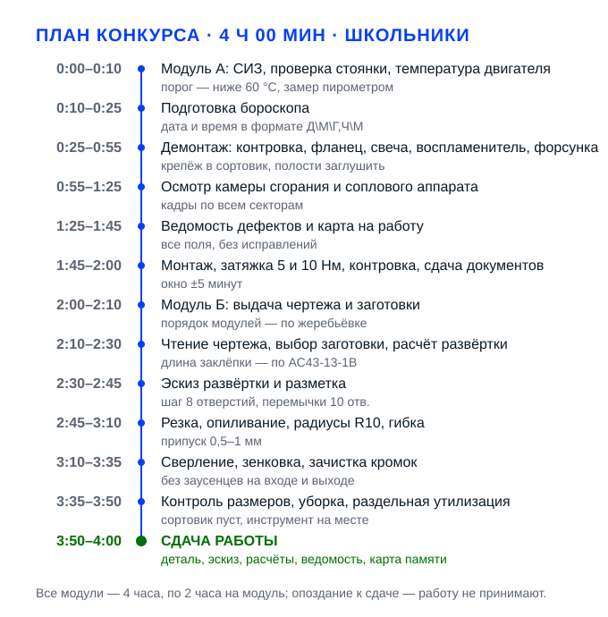
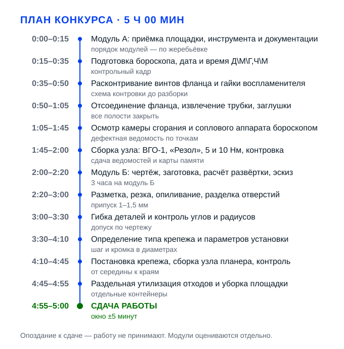
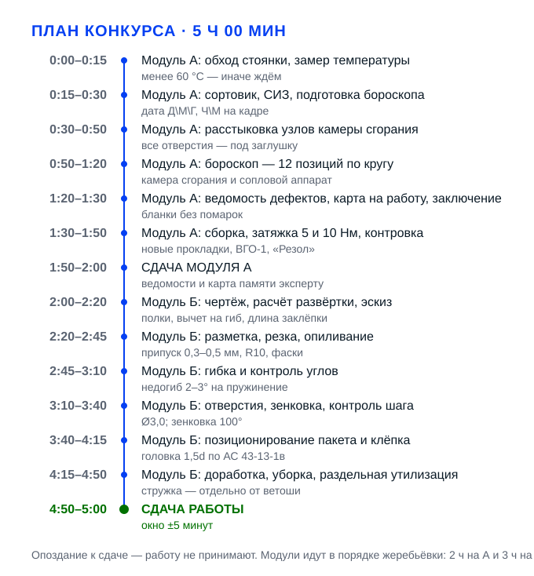

Обслуживание авиационной техники (Р)
Задания ниже — официальные файлы «Абилимпикс» (источник: abilympics-russia.ru), разложенные по категориям. Решения написаны по тексту задания, регламенту и критериям оценки; в них указано, что именно проверяет эксперт.
Школьник
14–16 лет, базовый уровень заданияВыдержка из официального конкурсного задания: страницы, относящиеся к категории «Школьник» (стр. 7–9 источника).
Пошаговое решение
Конкурсное задание для школьников состоит из двух модулей по два часа: в модуле А осматривают камеру сгорания и сопловой аппарат двигателя гибким бороскопом, заполняют ведомость дефектов и карту на работу, а затем собирают узел с новыми прокладками и затяжкой винтов в два этапа усилием 5 и 10 Нм. В модуле Б из листового цветного металла изготавливают деталь по чертежу: считают развёртку и длину заклёпки по АС43-13-1В, размечают, режут, опиливают, гнут, разделывают и зенкуют отверстия. Порядок модулей определяет жеребьёвка, а баллы распределены так: 45 за модуль А и 55 за модуль Б. Решают исход три вещи: обращение с двигателем как с действующим на вертолёте — с заглушками и температурой ниже 60 градусов, аккуратность с крепежом и комплектность документов, а также размеры детали в допуске без заусенцев на кромках.

Задача 1. Организовать рабочее место и подготовить бороскопМодуль А · 12 баллов
Модуль А начинается не с ключа, а с площадки: пока не надеты средства защиты, не осмотрено место стоянки и не подтверждено, что двигатель остыл ниже 60 градусов, к вскрытию полостей не приступают. На эту задачу приходится 12 баллов из 45 — за спецодежду, технику безопасности, проверку стоянки, температуру двигателя, аккуратные ведомости и убранное после работы место. Здесь же готовим бороскоп и выставляем на нём дату и время в формате Д\М\Г,Ч\М: снимок без корректной даты для эксперта доказательством не является, и вся работа по осмотру повисает без подтверждения.
Действие 1.1. Надеть средства защиты и войти на площадку
Шаг 1.1.1
Надеваем хлопчатобумажный костюм, защитные ботинки на нескользящей подошве и головной убор, под который полностью убираем волосы — и спереди, и на затылке. Рукава застёгиваем или подворачиваем, полы костюма не должны свисать: у вскрытых полостей двигателя любая свободная ткань цепляется за кромку фланца, а вместе с ней улетает внутрь проточной части винт или шайба. Всё лишнее снимаем заранее.
Комплект спецодежды — отдельный измеримый критерий на 2 балла, и его проверяют по факту: есть костюм, ботинки и головной убор или нет. Требование про убранные волосы и подобранные рукава стоит в разделе охраны труда прямо, вместе с запретом на одежду с длинными полами. Ошибка здесь стоит дёшево по времени и дорого по баллам: 2 балла снимаются до начала работы, вернуть их потом невозможно.
Проверьте себя по трём признакам: волос не видно ни спереди, ни сзади; костюм застёгнут и не топорщится; обувь закрытая и сухая. Руки свободны, на них нет ничего свисающего. Попросите наставника или волонтёра посмотреть со спины — сам участник затылок не контролирует.
Самый частый промах — надеть головной убор на макушку и оставить затылок открытым: спереди всё выглядит правильно, а сзади волосы выбиваются. Вторая ошибка — прийти в удобной открытой обуви или в футболке, рассчитывая надеть костюм позже: время на переодевание уйдёт из двух часов модуля, а балл уже потерян.
Эксперт фиксирует комплект на входе в зону и не возвращается к этому пункту до конца модуля. Смотрит он именно на состав комплекта и на то, остаётся ли костюм застёгнутым в процессе работы у двигателя.
Шаг 1.1.2
Поверх костюма надеваем защитные очки с прозрачными поликарбонатными стёклами и хлопчатобумажные перчатки с ПВХ-покрытием. Очки обязательны на всё время работы с крепежом и при продувке каналов: мелкая стружка, капли промывочной жидкости и сорвавшаяся контровочная проволока летят именно в лицо. Респиратор берём, когда работаем с противопригарной смесью и герметиком, потому что их пары раздражают дыхательные пути.
Средства защиты перечислены в разделе охраны труда конкурсного задания, и их использование оценивается тем же критерием на 2 балла, что и костюм. Отдельно оценивается соблюдение требований безопасности при работе — ещё 2 балла, и очки с перчатками входят туда напрямую. Кроме баллов, здесь прямая связь со здоровьем: глаз, в который попала стружка, заканчивает конкурс для участника немедленно.
Очки сидят плотно, не сползают при наклоне головы, стёкла чистые. Перчатки по размеру и не мешают пальцам чувствовать крепёж. Респиратор под рукой, а не в сумке у стены: за ним придётся идти через всю площадку.
Работать в очках, сдвинутых на лоб, — типичная картина на площадке: обзор лучше, защиты нет, и эксперт это видит. Вторая ошибка — надеть толстые перчатки и потерять чувствительность: мелкий винт выскальзывает и падает, а падение элементов — это отдельные 2 балла.
Эксперт смотрит на очки в момент сверления, продувки и работы с герметиком, а не на старте. Сдвинутые на лоб очки фиксируются как нарушение. Это видно сразу.
Шаг 1.1.3
Перед входом в зону убираем из карманов всё, что может выпасть: телефон, ручки, ключи, монеты. Инструмент берём только тот, который нужен по операции, и держим его на столе или в лотке, а не за поясом. Мелкий крепёж заранее раскладываем в сортовик по ячейкам, потому что искать винт на полу у двигателя — это потерянные минуты и потерянные баллы. Проверяем перед каждым этапом.
Требование содержать рабочее место в чистоте и не допускать падений записано в инструкции по охране труда, и оно же превращено в критерий: за падение элементов предусмотрено 2 балла, а за крепёж, хранящийся комплектами в сортовике, — ещё 2. Двигатель на конкурсе рассматривают как действующий на вертолёте, поэтому упавший внутрь предмет — это уже не мелочь, а потенциальное повреждение агрегата.
Карманы пустые, на столе нет ничего лишнего, сортовик стоит на своём месте и поделён по типу крепежа. Проверьте наклон стола: лоток не должен съезжать при случайном толчке. Лоток не должен съезжать от толчка.
Держать винты в горсти или в кармане — самая частая причина потери крепежа и путаницы при монтаже. Вторая ошибка — положить ключ на кожух двигателя: он скатывается и падает на пол, а это фиксируется как нарушение.
Эксперт обходит рабочее место в первые минуты и оценивает подготовку целиком: пустые карманы, разложенный инструмент, готовый сортовик. Он делает это до первой гайки.
Действие 1.2. Осмотреть площадку и разложить инструмент
Шаг 1.2.1
Обходим рабочее место по периметру: зона участника по нормативу составляет 3000 на 1900 мм, проход между рабочими местами — не меньше 1,5 метра. Проверяем пол на масло и воду, убираем посторонние предметы, сумки и стулья из прохода, проверяем, что кабель питания бороскопа и лампы не лежит поперёк дорожки. Убеждаемся, что рядом нет чужих инструментов и брошенных деталей.
Проверка места стоянки — отдельный критерий на 1 балл, и он проверяется до начала работ. Смысл не в формальности: на мокром полу участник с инструментом в руках падает, а падение у двигателя заканчивается травмой и остановкой модуля. Размеры зоны и ширина прохода взяты из требований к оснащению рабочих мест в конкурсном задании, и если площадка не соответствует, об этом говорят эксперту до старта.
Пол сухой, проход свободен на ширину не меньше 1,5 метра, кабели убраны к стене и не пересекают зону работы. Всё, что не относится к заданию, вынесено за пределы разметки. Проверьте место, куда вы будете вставать при работе с бороскопом: там должно быть ровно и не скользко.
Разложить инструмент на полу вокруг двигателя — распространённая ошибка: на него наступают, он падает, а крепёж теряется. Вторая ошибка — не заметить масляное пятно под двигателем и поставить туда лоток с мелкими деталями.
Эксперт проходит по зоне до старта и отмечает, свободен ли проход и убраны ли посторонние предметы. Это самый быстрый пункт его проверки — и самый лёгкий балл.
Шаг 1.2.2
Раскладываем инструмент по порядку операций, слева направо: сначала плоскогубцы и щипцы для контровки, потом ключи под винты фланца, моментная отвёртка с установленным пределом, затем пинцет, фонарь и зеркальце. Отдельно ставим сортовик с ячейками под винты, шайбы и гайки, рядом — лоток для снятых прокладок и контровки. Заглушки раскладываем по размеру отверстий, чтобы не подбирать их на весу.
Порядок на столе напрямую связан с критерием «Рабочее место организовано и убрано» — 2 балла, и с критерием хранения крепежа комплектами — ещё 2 балла. Когда ключ лежит на своём месте, операция занимает секунды; когда инструмент свален в кучу, участник теряет до пяти минут на каждой отвёрнутой детали, а в модуле всего два часа. Разложенный инструмент показывает эксперту, что участник понимает последовательность.
Инструмент лежит в один ряд, ничего не перекрывает друг друга, сортовик подписан или хотя бы разделён по типу крепежа, заглушки подобраны по диаметру. Проверьте предел моментной отвёртки: он должен быть выставлен до первого винта, а не в процессе.
Свалить всё в один поднос — тогда на каждый винт уходит по минуте поиска. Вторая ошибка — взять моментную отвёртку, не выставив предел: затяжка идёт «на глаз», и критерий с моментом затяжки на 3 балла проваливается.
Эксперт смотрит на организацию места в начале модуля и в конце, сравнивая состояние. Разложенный инструмент он отмечает сразу, ещё до первой отвёрнутой гайки.
Шаг 1.2.3
Сверяем документы на столе: руководство по техническому обслуживанию двигателя, инструкции изготовителя, циркуляр, чертёж и бланки ведомостей. Проверяем, что на бланках есть номер рабочего места и что ручка пишет, а не мажет. Номер двигателя и номер позиции сверяем с заданием, потому что с этого начинается любая запись в документации. Оба документа держим открытыми.
Работа ведётся в соответствии с действующим руководством по техническому обслуживанию и конкурсной документацией, и это прямо записано в последовательности выполнения задания. Эксперт проверяет не только результат, но и то, обращался ли участник к документу перед операцией. Ведомости и карта на работу оцениваются по полноте полей — по 2 балла каждая, и пустая шапка сразу обнуляет эти баллы.
На столе лежат все четыре позиции: руководство, инструкции с циркуляром, чертёж, чистые бланки. Шапка бланка заполнена заранее, ручка пишет без пропусков. Чертёж развёрнут той стороной, где видны размеры, а не рамка.
Искать руководство в середине работы — потеря времени, которую никто не вернёт. Вторая ошибка — заполнять ведомость ручкой, которая мажет: бланк пачкается, а загрязнённая ведомость — это отдельный критерий на 2 балла.
Эксперт подходит и смотрит, открыто ли руководство на нужной странице, когда участник выполняет операцию. Это видно без вопросов и стоит баллов. Это одна проверка, а не две.
Действие 1.3. Убедиться, что двигатель безопасен для работы
Шаг 1.3.1
Измеряем температуру корпуса двигателя пирометром в трёх точках: у камеры сгорания, у выхлопного патрубка и на фланце запального устройства. Прибор держим на расстоянии, указанном в его паспорте, обычно 15–20 см, и наводим на зачищенную площадку, а не на пятно масла. Показания записываем в карту на работу с указанием времени измерения. Запись делаем сразу, не по памяти.
Критерий «Убедился, что температура двигателя менее 60 градусов» стоит отдельно и весит 2 балла, то есть проверяется измеримым способом — по прибору, а не по ощущению ладони. Порог в 60 градусов выбран потому, что выше него остывающий корпус ещё может обжечь руку через перчатку и меняет посадку деталей при разборке. Двигатель на конкурсе считается действующим: он только что остановлен.
Пирометр показывает меньше 60 градусов во всех трёх точках, запись сделана. Если показание выше, отходим и ждём, повторяя измерение каждые пять минут. Проверьте заодно, что прибор не в режиме измерения температуры воздуха — на экране должна быть точка, а не усреднённое значение.
Измерить одну точку и успокоиться — частая ошибка: у выхлопного патрубка температура держится дольше, и именно там участник обжигается. Вторая ошибка — не записать измерение: эксперту нечем подтвердить, что проверка была.
Эксперт подходит в момент измерения и смотрит на экран пирометра либо на запись в карте. Порог 60 градусов — его ориентир, и он же фиксирует время измерения.
Шаг 1.3.2
Убеждаемся, что двигатель выключен и запуск невозможен: рычаг управления двигателем в положении «стоп», краны перекрыты, на органы управления установлены предупреждающие бирки, вращающиеся части обесточены. Руками проверяем, что вал не проворачивается свободно и что рядом с плоскостями вращения нет инструмента. Ничего не оставляем на кожухах и входных устройствах.
Соблюдение требований техники безопасности — критерий на 2 балла, и он оценивается непрерывно, а не в одной точке. В конкурсном задании отдельно сказано, что запрещено касаться движущихся и вращающихся частей и использовать неисправный инструмент. На площадке двигатель может быть под консервацией или частично разобран, поэтому проверка занимает минуту, а предотвращает самый тяжёлый вид травмы на этом конкурсе.
Бирки висят на органах управления, краны закрыты, инструмент убран с двигателя. Вал не проворачивается от руки, посторонних предметов на корпусе нет. Проверьте, что никто из соседей не работает рядом с вашей зоной в этот момент.
Начать откручивать фланец, не убедившись, что двигатель обесточен, — нарушение, которое эксперт останавливает немедленно. Вторая ошибка — оставить ключ на кожухе между операциями: он падает при первом же движении.
Эксперт фиксирует нарушения по безопасности в течение всего модуля и вправе остановить работу. Постоянные нарушения ведут к отстранению, как указано в инструкции по охране труда.
Шаг 1.3.3
Проверяем средства пожаротушения и аптечку: углекислотный огнетушитель должен стоять на видном месте не дальше пяти метров от рабочего места, аптечка — на щите у выхода. Запоминаем, где находится кнопка аварийного отключения питания. Уточняем у эксперта порядок действий при травме или возгорании, если он не был озвучен на инструктаже. Сделайте это до первого касания.
Знание порядка действий в аварийной ситуации прямо входит в требования к квалификации участника и в проверку техники безопасности. В инструкции по охране труда сказано, что помещение обеспечивается углекислотными огнетушителями, а тушить электрооборудование под напряжением пенными огнетушителями и водой запрещено. На конкурсе это ещё и вопрос дисциплины: участник, который знает, куда бежать, не теряет минуты.
Вы можете показать рукой на огнетушитель и на аптечку, не сходя с места. Кнопка аварийного отключения видна и доступна. Порядок доклада эксперту понятен: сначала остановить работу, потом сообщить. Проверяем до старта.
Не обращать внимания на огнетушитель, пока не случилось возгорания, — обычное дело, и на баллы это влияет через критерий безопасности. Ошибка, которая обходится дороже всего, — пытаться потушить загоревшийся электроинструмент водой.
Эксперт может спросить о расположении огнетушителя в любой момент модуля. Ответ по памяти здесь не работает — надо показать рукой. Показать его — дело секунд.
Действие 1.4. Подготовить бороскоп и бланки
Шаг 1.4.1
Включаем бороскоп и даём ему выйти на режим: подсветка должна разгореться ровно, без мерцания. Проверяем гибкий зонд на перегибы и заломы по всей длине, плавно изгибаем его в пределах, указанных в паспорте, и убеждаемся, что артикуляция работает на полный ход. Протираем объектив и окуляр безворсовой салфеткой со спиртом, потому что отпечаток пальца на линзе даёт мутное пятно на всех снимках сразу.
Бороскоп — основной измерительный инструмент модуля А: без него осмотр камеры сгорания и соплового аппарата первой ступени турбины просто не выполнить, а результат модуля — определённые дефекты и заполненная ведомость. Кривой или загрязнённый зонд даёт снимки, по которым дефект не классифицировать, и работа идёт заново на глазах у эксперта. Проверка занимает три минуты и экономит весь модуль.
Подсветка ровная, изображение резкое на расстоянии от 5 мм до бесконечности, зонд не имеет заломов, все насадки на месте. Картинка не должна быть мутной по краям — если мутная, линза грязная или запотевшая.
Начать осмотр с грязной линзой и обнаружить это на третьем снимке — самая обидная потеря времени. Вторая ошибка — резко согнуть зонд: волокно ломается, и прибор перестаёт передавать изображение на одном из секторов.
Эксперт наблюдает за подготовкой прибора и за тем, как участник обращается с зондом. Грубое обращение фиксируется как нарушение правил эксплуатации оборудования.
Шаг 1.4.2
Выставляем в меню прибора дату и время строго в формате Д\М\Г,Ч\М, то есть день, месяц, год, часы и минуты через запятую, без секунд и без ведущих нулей, как требует задание. Заходим в настройки, вводим значения, сохраняем и проверяем результат на тестовом снимке. Если меню сбивает формат, записываем фактическое значение и сообщаем эксперту до начала осмотра.
Формат Д\М\Г,Ч\М — прямое требование последовательности выполнения задания для категории «Школьники», и его проверяют по первому же снимку. Смысл в прослеживаемости: по дате и времени эксперт понимает, когда сделан кадр и в каком порядке шёл осмотр, а ведомость и карта памяти сдаются вместе, поэтому расхождение между ними сразу видно. Снимок с датой от прошлого чемпионата обесценивает всю доказательную часть модуля.
На тестовом снимке в углу читается дата и время в нужном формате, значения совпадают с текущими с точностью до минуты. Формат не содержит секунд и лишних разделителей. Убедитесь, что дата не сбросится после выключения прибора.
Выставить только дату, забыв время, — типично, и это ловится на первом кадре. Вторая ошибка — оставить американский формат М/Д/Г: эксперт читает 05,09,2026 как пятое сентября, а фактически это девятое мая.
Эксперт смотрит формат даты и времени на экране бороскопа до начала осмотра и сверяет его с форматом в задании. Это одна из тех проверок, которые делают за несколько секунд.
Шаг 1.4.3
Заполняем шапку ведомости дефектов и карты на работу: номер рабочего места, фамилия и имя, категория, дата, номер двигателя, вид осмотра. Пишем печатными буквами, шариковой ручкой, не надавливая на бланк, и держим бланк на твёрдой подложке, а не на корпусе двигателя. Сразу готовим карандаш для черновых записей размеров, чтобы не переписывать бланк дважды.
Все поля ведомости и карты на работу оцениваются отдельно — по 2 балла за каждую, и столько же стоит отсутствие неисправленных ошибок. Критерий про загрязнённую ведомость со следами масла, сажи и потёртостей — ещё 2 балла: бланк оценивают как документ, а не черновик. На производстве ведомость дефектов — основание для заказа деталей.
Шапка заполнена полностью, ни одного пустого поля, почерк читается без догадок. На бланке нет пятен и заломов, он лежит в папке или на планшете. Проверьте, что номер двигателя совпадает с тем, что вы видели на шильдике.
Заполнять шапку после работы, по памяти — половина полей остаётся пустой или заполняется неверно. Вторая ошибка — писать на бланке, лежащем на замасленной поверхности: следы масла стоят 2 балла. Бланк уже не восстановить.
Эксперт проверяет ведомость при сдаче, и первое, на что он смотрит, — полнота полей и чистота бланка. Потом уже читает содержание. Смотрит и подписи, и дату.
Задача 2. Демонтировать узлы для доступа к камере сгоранияМодуль А · 13 баллов
Чтобы завести бороскоп в камеру сгорания, нужно расстыковать три узла: фланец запального устройства с трубкой, воспламенитель со свечой и топливную форсунку. Каждый демонтированный и аккуратно уложенный компонент — это отдельные 2 балла, правильные методы снятия стопорения — ещё 2, хранение крепежа комплектами в сортовике — 2, и столько же стоит любое падение детали. Работа идёт без спешки, но без остановок: два часа модуля делятся примерно пополам между демонтажом, осмотром и сборкой, и на разборку уходит не больше тридцати минут.
Действие 2.1. Снять контровку
Шаг 2.1.1
Осматриваем узел и определяем, каким способом законтрен крепёж: контровочной проволокой, пружинной шайбой, шплинтом или краской. На винтах фланца запального устройства обычно стоит проволока в отверстиях головок, на гайке воспламенителя — проволока или шплинт. Проверяем направление, в котором проволока натянута: она всегда работает на затяжку, и снимать её нужно в обратном порядке, разматывая, а не отламывая.
Правильные методы снятия стопорения — отдельный критерий на 2 балла, и он оценивает именно способ: размотана проволока или откушена кусачками вместе с заусенцем на винте. Откушенный конец оставляет острую кромку, которая режет перчатку и царапает посадочную поверхность, а царапина на фланце потом отмечена как повреждение поверхности. Контровку снимают только тем инструментом, который не деформирует крепёж.
Проволока снята целой, без обрывков в отверстиях головок, винты не имеют заусенцев и следов перекуса. Отверстия под контровку чистые. Проверьте пальцем кромку головки — она должна быть гладкой. Кромка на ощупь гладкая.
Перекусить проволоку бокорезами у самой головки — быстро, но оставляет заусенец и портит отверстие. Вторая ошибка — тянуть проволоку на себя, не размотав: она вырывает стружку и сгибает винт. Такой винт не законтрить.
Эксперт стоит рядом в момент снятия контровки и смотрит именно на инструмент и траекторию движения. Это операция, которую видно за десять секунд. Важно, чем именно снимают.
Шаг 2.1.2
Снимаем контровку с гайки воспламенителя специальными щипцами для контровки, придерживая гайку ключом, чтобы она не провернулась и не потянула за собой трубопровод. Обрезки проволоки складываем в отдельный лоток, а не на корпус двигателя: мелкий кусок проволоки, попавший в полость, ищут потом всей площадкой. Работаем в перчатках и очках, потому что конец проволоки пружинит.
Крепёж и контровка относятся к элементам, падение которых фиксируется отдельным критерием на 2 балла, и это самая частая потеря баллов во всём модуле А. Кроме того, снятая контровка нужна при обратной сборке: если её выбросить, придётся идти за новой и терять время, а эксперту это показывает, что участник не планирует работу до конца. Проволока пружинит и улетает на метр — поэтому лоток ставится заранее.
Гайка не провернулась, трубопровод не натянут, все обрезки в лотке. Проверьте ладонью, что на корпусе вокруг узла нет металлической мелочи. Лоток стоит так, чтобы в него можно было попасть, не наклоняясь над двигателем.
Держать обрезки в кулаке, а потом высыпать — они разлетаются по площадке. Вторая ошибка — сорвать гайку ключом без поддержки: усилие уходит в трубопровод, и он деформируется. Проволока уходит под двигатель.
Эксперт смотрит, куда участник складывает снятые элементы. Наличие лотка он отмечает как элемент организации работы. Он смотрит, держат ли гайку ключом.
Шаг 2.1.3
Укладываем снятую контровку и шплинты в отдельный маркированный пакет, подписываем карандашом, с какого узла снято, и кладём в ячейку сортовика. Старые прокладки тоже не выбрасываем в общий мусор, а складываем отдельно: при сдаче видно, что все прокладки заменены на новые, а не использованы повторно. Пакет держим на столе до конца модуля. Пакет лежит на столе до сдачи.
Требование сдавать ведомости и карту памяти эксперту предполагает, что все снятые элементы учтены и объяснены. Повторная установка старой прокладки — грубая ошибка, которая видна при осмотре, и она обнуляет критерии «Установлена новая прокладка» на форсунку, воспламенитель и фланец. Подписанный пакет снимает все вопросы при разборе и стоит ноль времени.
Все снятые элементы лежат по ячейкам, пакет подписан, старые прокладки отделены от новых. Новые прокладки в упаковке, а не высыпаны на стол. Проверьте, что вы не положили пакет туда, где его закроет инструмент.
Выбросить старую прокладку в общий мусор, а потом сомневаться, меняли её или нет. Вторая ошибка — положить новую прокладку рядом со старой: перепутать их легко, а цена — 2 балла. Придётся объяснять, чем закрывали.
Эксперт при сдаче проверяет, что старые прокладки предъявлены, а новые установлены. Пакет с подписью делает эту проверку быстрой. Он сверяет число пакетов и узлов.
Действие 2.2. Отсоединить фланец запального устройства
Шаг 2.2.1
Берём ключ по размеру головки винтов, проверяем, что он сидит плотно, без люфта, и отворачиваем винты крепления фланца по одному, придерживая фланец второй рукой. Отворачиваем не до конца сразу все винты: сначала ослабляем каждый на пол-оборота крест-накрест, потом выворачиваем полностью. Винты сразу укладываем в ячейку сортовика попарно с шайбами, как они стояли.
Крепёж должен храниться комплектами в сортовике — это отдельный критерий на 2 балла. Ослабление крест-накрест нужно, чтобы фланец не перекосило: при неравномерном отвёртывании он встаёт на перекос, и посадочная поверхность получает задир. Аккуратное обращение с компонентами при демонтаже оценивается тем же образом, что и при монтаже, — удар или падение фиксируются.
Винты вывернуты полностью и лежат парой с шайбами в одной ячейке, фланец сидит свободно и не закусывает. Проверьте посадочную поверхность на свет: на ней не должно быть свежих царапин. Проверяем до того, как тянем фланец.
Вывернуть один винт до конца, пока остальные затянуты, — фланец перекашивается и закусывает. Вторая ошибка — уронить винт в поддон под двигателем: искать его придётся на коленях, а падение элементов уже зафиксировано.
Эксперт смотрит на порядок отвёртывания: крест-накрест или подряд. Второй вариант он отмечает как риск перекоса посадочной поверхности. Смотрит и на посадку ключа.
Шаг 2.2.2
Снимаем фланец и осторожно, без изгиба, извлекаем трубку запального устройства из посадочного гнезда строго по её оси. Трубку держим за корпус, а не за конец, и кладём на чистую подложку в лоток, чтобы не касалась верстака. Если трубка идёт с усилием, не шатаем её: смотрим, не остался ли винт, и поддеваем фланец по плоскости разъёма. Длинную трубку держим двумя руками.
Выемка трубки для доступа к внутренней поверхности камеры сгорания — обязательный пункт последовательности выполнения задания. Трубка тонкостенная: изгиб или удар смещает её относительно оси, и при обратной установке она не садится в гнездо, а свеча перестаёт работать. Критерий «Свеча демонтирована и аккуратно хранится» на 2 балла оценивает как раз сохранность элемента.
Трубка вышла свободно, без закусывания, её ось не имеет видимого изгиба, на поверхности нет вмятин. Фланец лежит на подложке, а не на металле стола. Проверьте торцы трубки: они должны быть чистыми, без нагара, который мог осыпаться внутрь.
Тянуть трубку вбок, расшатывая, — прямой путь к изгибу и к тому, что гнездо разобьётся. Вторая ошибка — положить трубку на верстак рядом со стружкой. Трубка не садится в гнездо, и узел меняют целиком.
Эксперт осматривает трубку при сдаче и при монтаже. Вмятина на корпусе — повод снизить оценку за аккуратное обращение с компонентами. Изгиб виден на просвет у линейки.
Шаг 2.2.3
Сразу после извлечения трубки заглушаем открывшееся гнездо и все освободившиеся штуцеры технологическими заглушками по диаметру. Заглушки ставим до щелчка или до упора, проверяем рукой, что держатся. Если штатной заглушки нет, закрываем гнездо чистой пробкой из комплекта и сообщаем эксперту, какой именно заглушки не хватило. Штуцеры закрываем первыми, до инструмента.
Требование «все расстыкованные элементы заглушить» записано в задании отдельной строкой, и оно не формальное: в открытую полость камеры сгорания попадают пыль, стружка и мелкий крепёж, а двигатель на конкурсе рассматривают как действующий на вертолёте. Посторонний предмет в проточной части — это не штраф, а списание двигателя, и эксперт реагирует на открытые полости моментально.
Все открытые отверстия закрыты, заглушки держатся и не выпадают при лёгком покачивании. На соседних штуцерах тоже ничего не открыто. Проверьте, что заглушки не перекрывают доступ к соседним винтам, которые ещё предстоит отворачивать.
Оставить гнездо открытым на время, пока идём за инструментом, — самая опасная привычка. Вторая ошибка — забить заглушку не по размеру: она проваливается внутрь, и достать её уже невозможно. Достать её можно только разборкой.
Эксперт проверяет заглушки сразу после демонтажа, обходя площадку. Открытое отверстие видно издалека. Он обходит площадку сразу после участника и отмечает открытые полости.
Действие 2.3. Демонтировать свечу, воспламенитель и форсунку
Шаг 2.3.1
Выворачиваем свечу ключом на свечу, держа головку строго по оси, без перекоса. Свечу извлекаем медленно, чтобы не задеть электродами о кромку гнезда, и сразу осматриваем электроды: нагар, эрозия, масло на изоляторе. Кладём свечу в отдельную кассету или ложемент с мягкой подложкой, а не в общий лоток с крепежом. Ключ берём по размеру шестигранника, без удлинителей.
Критерий «Свеча демонтирована и аккуратно хранится» — 2 балла, и оценивается именно хранение: отдельная ячейка, мягкая подложка, отсутствие контакта с металлом. Электродный зазор у свечи измеряется в десятых долях миллиметра, поэтому удар о край лотка выводит её из строя. Кроме того, при осмотре электродов видно состояние камеры сгорания, и это подтверждает результаты бороскопии.
Свеча вывернулась без закусывания, электроды не деформированы, зазор не изменился от исходного. Свеча лежит отдельно от крепежа. Проверьте кромку гнезда: на ней не должно остаться свежей резьбовой стружки.
Извлекать свечу под углом, упираясь в кромку, — электрод подгибается, и при обратной установке зазор уже не тот. Вторая ошибка — положить свечу в лоток с винтами: она бьётся о крепёж. Зазор после этого не восстановить.
Эксперт осматривает свечу при сдаче и проверяет, отдельно ли она лежит. Отдельная кассета — видимый признак аккуратности. Смотрит, в какой ячейке лежит свеча.
Шаг 2.3.2
Демонтируем воспламенитель: отворачиваем крепление, вынимаем его по оси, придерживая второй рукой, и осматриваем торец на нагар и трещины. Укладываем в ложемент рядом со свечой, но не вплотную, чтобы детали не касались друг друга. Крепёж воспламенителя отправляем в отдельную ячейку сортовика: у него свой момент затяжки, и путать винты с форсуночными нельзя.
Воспламенитель демонтирован и аккуратно хранится — это ещё 2 балла, а его прокладка и момент затяжки при монтаже оцениваются отдельно. Керамика на торце хрупкая, скол от удара не восстанавливается, и узел перестаёт держать герметичность. Раздельное хранение крепежа по узлам нужно потому, что винты воспламенителя тянутся в два этапа усилием 5 и 10 Нм, а форсуночные — своим моментом по карте.
Воспламенитель лежит в ложементе, торец целый, сколов и трещин нет, крепёж в отдельной ячейке. Проверьте, что вы запомнили или записали, какой винт откуда: длина у них может отличаться. Ячейки помечаем маркером сразу.
Сваливать крепёж всех трёх узлов в одну ячейку — классическая ошибка, из-за которой потом винт форсунки не входит в резьбу воспламенителя. Вторая ошибка — держать воспламенитель за керамический торец.
Эксперт проверяет комплектность крепежа при монтаже: если винты перепутаны, он увидит это по посадке и снимет баллы за хранение. Он сверяет винты с числом отверстий.
Шаг 2.3.3
Отворачиваем болты крепления форсунки крест-накрест и снимаем её без перекоса, придерживая корпус. Сразу обрабатываем топливную форсунку: продуваем каналы сжатым воздухом давлением не выше указанного в инструкции, промываем разрешённой жидкостью и закрываем защитным колпачком. Форсунку укладываем в кассету соплом вверх, чтобы распылитель не касался подложки.
Критерий «Форсунка демонтирована и аккуратно хранится, топливные форсунки обработаны» стоит 2 балла и объединяет две вещи: сохранность и обработку. Распылитель — самый точный элемент узла, отверстия в нём измеряются микронами, и пылинка или отпечаток пальца меняют факел распыла. Обработка после демонтажа обязательна, потому что остатки топлива в каналах коксуются и через несколько часов форсунку уже не промыть.
Каналы продуты, распылитель закрыт колпачком, форсунка лежит соплом вверх и не касается других деталей. После продувки на поверхности нет капель. Проверьте, что заглушки на освободившихся штуцерах стоят.
Продувать форсунку без защиты глаз — нарушение и риск травмы. Вторая ошибка — оставить форсунку лежать соплом вниз: пыль с подложки попадает в распылитель, и критерий обработки проваливается. Без колпачка продувка бесполезна.
Эксперт смотрит на форсунку после демонтажа и на её положение в кассете. Колпачок на распылителе он отмечает отдельно. Смотрит, закрыт ли распылитель колпачком.
Действие 2.4. Убрать рабочее место и подтвердить готовность к осмотру
Шаг 2.4.1
Проверяем площадку после демонтажа: на двигателе и вокруг него не должно остаться винтов, шайб, обрезков проволоки и старых прокладок. Считаем крепёж в сортовике по ячейкам и сверяем с числом снятых деталей: два винта фланца, крепление воспламенителя, болты форсунки. Инструмент возвращаем на свои места, моментную отвёртку — в чехол, чтобы предел не сбился.
Проверка рабочего места после работы — отдельный критерий на 1 балл, а возврат инструмента на место оценивается в 2 балла. Но главное здесь другое: пока идёт осмотр, двигатель открыт, и любой забытый винт может оказаться в полости. Пересчёт крепежа — единственный способ убедиться, что ничего не потеряно, и он занимает меньше минуты.
Крепёж пересчитан и совпадает, инструмент на местах, на корпусе двигателя ничего не лежит. Проверьте поддон и пол под двигателем: туда скатывается всё мелкое. Если чего-то не хватает — ищите сразу, а не после осмотра.
Оставить крепёж на кожухе «чтобы не искать» — ошибка, которая заканчивается падением внутрь двигателя. Вторая ошибка — считать на глаз: одного винта не хватает, а замечают это на сборке. Один винт — уже незакрытый узел.
Эксперт проходит по площадке между этапами и отмечает чистоту. Потерянный крепёж, найденный им, стоит дороже, чем найденный вами. Найденный им винт стоит двух баллов.
Шаг 2.4.2
Ставим вокруг открытых полостей ограничительные метки и проверяем, что заглушки на всех расстыкованных элементах держатся. Смотрим, не мешает ли что-то ввести зонд: проводка, трубопроводы и соседние агрегаты не должны касаться плоскости ввода. Если для доступа нужно отвести трубопровод, делаем это по инструкции и фиксируем в карте. Зонд вводим только по свободному проходу.
Доступ к осматриваемым зонам и компонентам — прямое требование к квалификации участника. Если зонд задевает за соседний трубопровод, изображение смазывается, и осмотр приходится начинать заново, а времени на это в модуле нет. Заглушки проверяются повторно потому, что при установке инструмента их легко сбить рукавом.
Все заглушки на месте, подход к отверстию свободен, зонд проходит по оси без касания стенок. Проверьте наклон корпуса: при неудобном положении участник нагибается и задевает зондом кромку. Это решается наклоном корпуса, не силой.
Отвести трубопровод без фиксации — он уходит в сторону и мешает до конца модуля, а иногда и получает залом. Вторая ошибка — сбить заглушку локтем и не заметить. Или работают в позе, где зонд гнётся о кромку.
Эксперт оценивает, насколько участник обеспечил себе доступ. Работа «в неудобной позе через препятствие» видна и говорит о непродуманной подготовке. Он отмечает это как подготовку.
Задача 3. Осмотреть камеру сгорания и сопловой аппарат, оформить ведомостьМодуль А · 9 баллов
Ядро модуля А: через отверстие от трубки запального устройства заводим гибкий бороскоп в камеру сгорания, осматриваем жаровую трубу, затем сопловой аппарат первой ступени турбины, фиксируем каждый дефект снимком с датой и описываем его так, чтобы по записи можно было заказать деталь. Результат модуля по заданию — определённые дефекты двигателя и заполненная дефектная ведомость, поэтому пустая или небрежная ведомость обнуляет всю работу с прибором. Осмотр идёт по маршруту из руководства, а не наугад: пропущенный сектор эксперт находит по карте памяти.
Действие 3.1. Осмотреть камеру сгорания
Шаг 3.1.1
Вводим зонд в гнездо трубки запального устройства плавно, по оси канала, на глубину, указанную в руководстве. Подаём зонд на 2–3 сантиметра, чуть поворачиваем и снова подаём, а не проталкиваем на всю длину сразу: так чувствуется сопротивление и не царапается внутренняя поверхность. Фиксируем в карте, через какое отверстие и на какую глубину заведён зонд.
Осмотр идёт по руководству изготовителя и указаниям на конкурсе, как требует задание. Глубина и направление ввода определяют, что именно попадёт в объектив: на два сантиметра глубже — и вы смотрите уже не на жаровую трубу, а на переходной участок. Проталкивание зонда на всю длину сразу даёт задир на внутренней стенке, а это повреждение, которое эксперт увидит при повторном осмотре.
Зонд проходит без сопротивления, изображение появляется сразу, на стенках нет свежих царапин. Проверьте по руководству, на какой глубине должна быть первая точка осмотра, и сверьте с фактической. Сверьтесь с записью в карте.
Толкать зонд усилием, если он не идёт, — самая частая грубая ошибка: он упирается в стенку, пружинит и срывается внутрь, а на поверхности остаётся след. Вторая ошибка — не записать глубину и потом не суметь повторить кадр.
Эксперт смотрит на темп ввода и на то, обращается ли участник к руководству перед каждой точкой. Резкие движения отмечаются как нарушение методики осмотра.
Шаг 3.1.2
Осматриваем жаровую трубу по секторам, последовательно поворачивая зонд: сначала верхнюю часть, потом боковые и нижнюю. Обращаем внимание на трещины у отверстий охлаждения, на цвет металла (синий и радужный побежалости — признак перегрева), на деформацию жаровых труб, нагароотложения и следы прогара. Каждое подозрение фиксируем снимком, а не только взглядом.
Перечень дефектов, которые участник обязан найти, и их количество заранее не известны: по региональному варианту задания количество дефектов и их местоположение могут меняться, в том числе вноситься дефекты в стопорение элементов. Поэтому осмотр идёт по всем секторам без исключения. Пропущенный дефект означает, что результат модуля — «определены дефекты» — выполнен не полностью, и ведомость получится неполной.
Сняты кадры по всем секторам, на каждом видна характерная поверхность, а не размытое пятно. Пересчитайте кадры: их число должно соответствовать числу точек осмотра в руководстве. Проверьте, что на снимках читается цвет металла — по нему судят о перегреве.
Осмотреть только ту часть, которая хорошо видна от отверстия, и решить, что остальное в порядке. Вторая ошибка — снимать без остановки зонда: изображение смазано, дефект на кадре не различить. Переснимать придётся весь сектор.
Эксперт сверяет число и содержание кадров с картой памяти и с эталонным перечнем дефектов. Пропуск целого сектора он видит по отсутствию кадров. Он делает это по карте памяти.
Шаг 3.1.3
Проверяем качество изображения и при необходимости корректируем: протираем объектив, меняем яркость подсветки, чуть отводим зонд от поверхности, чтобы поймать фокус. Мутный или пересвеченный кадр переснимаем сразу, пока зонд в том же положении. Записываем словами то, что видно, коротко и по делу, чтобы при описании не полагаться на память. Черновые записи ведём на планшете.
Качество снимка — это единственное доказательство осмотра: по размытому кадру нельзя ни подтвердить дефект, ни определить его размер. Блики от подсветки на полированной поверхности выглядят как трещина, поэтому кадр делают под небольшим углом и с уменьшенной яркостью. Запись словами нужна потому, что ведомость заполняется по факту, а не по воспоминанию.
Изображение резкое по всей площади кадра, поверхность читается, бликов нет. Запись сделана по каждому кадру и содержит место и характер дефекта. Проверьте снимок на экране прибора, а не только через окуляр.
Снимать через запотевший объектив — обычное дело после работы у прогретого двигателя: кадры мутные, а время уходит. Вторая ошибка — принять блик за трещину и внести его в ведомость: несуществующий дефект экспертом фиксируется как ошибка.
Эксперт выборочно смотрит кадры на приборе сразу после осмотра. Он же проверяет, отделяет ли участник блик от реального дефекта. Он смотрит и резкость, и запись под кадром.
Действие 3.2. Осмотреть сопловой аппарат первой ступени турбины
Шаг 3.2.1
Переводим зонд в положение для осмотра соплового аппарата первой ступени турбины, как указано в руководстве: меняем глубину и угол, при необходимости ставим насадку с боковым обзором. Осмотр начинаем с входных кромок лопаток по кругу, затем переходим к проточной части и к бандажным полкам. Между точками зонд выводим аккуратно, не проворачивая на весу.
Сопловой аппарат первой ступени — самая теплонагруженная зона из тех, что доступны бороскопу на этом двигателе, и именно там появляются первые трещины по кромкам. Без осмотра этой зоны модуль считается выполненным наполовину, потому что в задании записано: осмотр внутренней поверхности камеры сгорания и соплового аппарата первой ступени турбины. Насадка с боковым обзором нужна, чтобы видеть кромки.
Кадры по всем лопаткам в пределах доступа, входные кромки читаются, ориентация кадра понятна. Проверьте, что вы обошли полный круг, а не остановились на двух-трёх лопатках, которые видны лучше остальных.
Осмотреть только то, что видно с первого положения зонда, — типичная ошибка новичка: полкруга остаются неосмотренными, и это видно по кадрам. Вторая ошибка — проворачивать зонд на весу, держа его за середину: залом и потеря изображения.
Эксперт смотрит на полноту круга по кадрам и на положение насадки. Он же фиксирует, меняет ли участник насадку по инструкции или работает одной. Он смотрит на смену насадки.
Шаг 3.2.2
Описываем то, что видно, в терминах дефектов: трещины, забоины, эрозия кромок, отложения, прогары, деформация. Отмечаем, с какой стороны лопатки дефект, на каком расстоянии от кромки и как направлен — вдоль оси или поперёк. Если есть возможность оценить размер, оцениваем его по масштабной сетке или по известной ширине канала. Формулировки берём из перечня дефектов в руководстве.
Классификация дефектов и их правильная интерпретация входят в требования к квалификации участника: эксперт оценивает не только то, что дефект найден, но и то, как он назван. Ошибка в термине меняет вывод о допуске к дальнейшей эксплуатации: эрозия кромки и трещина выглядят похоже, но последствия разные. Размер и направление нужны потому, что по ним определяют, выходит дефект за допуск или нет.
Каждому кадру соответствует запись с названием дефекта, местом и размером. Терминология не противоречит руководству. Проверьте, что вы не назвали один и тот же дефект двумя разными словами в разных строках.
Написать в ведомости общими словами — «есть повреждения» — значит не дать эксперту основания зачесть дефект. Вторая ошибка — путать нагар с прогаром: вывод о состоянии узла становится неверным. Вывод о допуске становится обратным.
Эксперт читает записи и сверяет с кадрами. Именно на этом шаге видно, понимает ли участник, что он увидел. Ведомость с записью «есть повреждения» он считает незаполненной, по ней нельзя заказать деталь.
Шаг 3.2.3
Сверяем найденное с допусками из руководства по техническому обслуживанию: смотрим таблицу допустимых повреждений и решаем по каждому дефекту, допустим он или нет. Спорные случаи фиксируем отдельной строкой с пометкой и озвучиваем эксперту устно, а не решаем молча. Номер пункта руководства записываем рядом с описанием дефекта. Спорный дефект показываем на экране прибора.
Ссылка на пункт руководства превращает запись в заключение, а не в заметку: по ней можно проверить решение. В конкурсном задании сказано, что работа выполняется в соответствии с действующим руководством по техническому обслуживанию, поэтому именно документ, а не мнение участника, определяет допуск. Аккуратная ссылка на пункт ещё и защищает от вопросов на разборе.
У каждого дефекта есть пометка «допустим» или «не допустим» и номер пункта руководства. Проверьте, что пометки не противоречат друг другу при одинаковых дефектах. Убедитесь, что страница руководства открыта на нужной таблице, когда эксперт подойдёт.
Решать по памяти, не открывая таблицу допусков, — ошибка, которая ловится первым же вопросом. Вторая ошибка — записать дефект без вывода: ведомость остаётся недооформленной. Или ссылаются на пункт, не открывая его.
Эксперт подходит в момент сверки с руководством и смотрит, открыта ли таблица допустимых повреждений. Это ключевая точка оценки профессионализма. Открытая таблица важнее слов.
Действие 3.3. Заполнить дефектную ведомость и сдать карту памяти
Шаг 3.3.1
Заполняем ведомость по строкам: номер дефекта, место, характер повреждения, размер, вывод о допустимости, номер пункта руководства. Пишем печатными буквами, без сокращений, которые потом не расшифровать, и без исправлений поверх текста. Если ошиблись — не зачёркиваем, а берём новый бланк и переписываем, если время позволяет, или аккуратно оговариваем исправление подписью.
Все поля ведомости оцениваются в 2 балла, отсутствие неисправленных ошибок — ещё 2, и столько же стоит чистый, неповреждённый бланк. Неисправленная ошибка хуже пустого поля: она создаёт ложную запись, по которой на производстве закажут не ту деталь. Ведомость дефектов на реальном предприятии — основание для работ, поэтому к ней относятся как к документу.
Все строки заполнены, почерк читается посторонним человеком, исправлений и замазок нет. Число строк соответствует числу дефектов, зафиксированных на снимках. Проверьте заголовки граф: они должны остаться видны.
Заполнять ведомость в конце модуля, за пять минут до сдачи, — почти гарантированные пустые поля. Вторая ошибка — сокращать слова так, что через час их не прочитать даже самому. Бланк переписывают целиком, иначе ошибка остаётся.
Эксперт читает ведомость при сдаче и сверяет её с картой памяти. Нечитаемая запись для него равна отсутствию записи. Он проверяет номера пунктов у каждого дефекта.
Шаг 3.3.2
Заполняем карту на работу: что демонтировано, что осмотрено, какие дефекты найдены, какие элементы заменены, сколько времени заняла каждая операция. Указываем номера позиций по каталогу и номера пунктов руководства. Карту подписываем и ставим дату в том же формате, что и на приборе. Время операций берём по часам: в карте оно нужно для контроля тайминга.
Карта на работу — второй документ модуля, и все её поля оцениваются в 2 балла. Карта и ведомость должны согласовываться между собой: если в ведомости дефект есть, а в карте операция не отражена, эксперт видит расхождение. Именно карта показывает, что участник работал по процедуре, а не по наитию.
Поля карты заполнены, перечень операций совпадает с фактически сделанным, дата совпадает с датой на снимках. Проверьте, что ни одна операция не записана дважды. Сверяем перечень с ведомостью построчно, отмечая совпавшие позиции.
Переписать карту с чужого образца, не согласовав с тем, что реально сделано, — расхождение обнаруживается сразу. Вторая ошибка — оставить пустой графу о заменённых элементах. Пустая графа о заменах — прямой вопрос.
Эксперт сопоставляет карту с ведомостью и с фактическим состоянием двигателя. Расхождения он отмечает как ошибки документирования. Он делает это до приёма сдачи.
Шаг 3.3.3
Выключаем бороскоп правильно: сначала завершаем запись, потом вынимаем карту памяти через безопасное извлечение, если прибор это поддерживает, или выключаем питание и только затем извлекаем носитель. Карту кладём в подписанный пакет или в чехол. Сдаём эксперту ведомость, карту на работу и карту памяти одновременно, называя вслух, что где лежит. Пакет подписываем до извлечения карты.
По заданию участник сдаёт дефектные ведомости и карту памяти бороскопа эксперту — это последняя операция модуля А. Извлечение карты на включённом приборе повреждает файловую систему, и часть снимков может не открыться: работа сделана, а доказательств нет. Одновременная сдача всех трёх позиций нужна, чтобы эксперт сопоставил их без вашего участия.
Карта памяти читается на компьютере эксперта, снимки открываются, дата и время на них в нужном формате. Ведомость и карта подписаны. Проверьте, что файлы не защищены от записи и не требуют пароля. Проверяем на месте.
Выдернуть карту без завершения записи — самый частый способ потерять весь осмотр. Вторая ошибка — сдать ведомость без карты памяти: сверять нечего, и часть баллов уходит. Ошибка видна поздно, когда время модуля вышло.
Эксперт принимает документы и сразу проверяет, открывается ли карта памяти. Это его последнее действие в модуле А. Если карта не открывается, он фиксирует это в протоколе.
Задача 4. Собрать узел, законтрить и сдать модульМодуль А · 12 баллов
Сборка — та часть модуля, где легче всего потерять уже заработанное: новая прокладка, герметик ВГО-1, противопригарная смесь «Резол» на винтах и затяжка в два этапа усилием 5 и 10 Нм оцениваются по отдельным критериям, суммарно до двенадцати баллов. Затягивать «до упора» нельзя: перетянутый винт тянет резьбу в корпусе, а недотянутый не держит герметичность. После монтажа обязательно возвращается контровка, инструмент убирается на место, а ведомости и карта памяти сдаются эксперту до конца модуля, а не после звонка.
Действие 4.1. Подготовить прокладки, герметик и крепёж
Шаг 4.1.1
Достаём из упаковки новые прокладки и раскладываем по узлам: на форсунку, на воспламенитель, на фланец свечи с двух сторон и на трубку свечи. Каждую сверяем с посадочным местом по диаметру и числу отверстий, не примеряя на деталь с усилием. Старые прокладки к этому моменту лежат отдельно и повторно не используются. Прокладки держим в упаковке до установки, чтобы не собрать на них пыль.
Критерий «Установлена новая прокладка» стоит отдельно для форсунки, для воспламенителя и для фланца свечи с двух сторон, и каждая позиция — это баллы. Повторная установка старой прокладки не даёт герметичности: обжатая прокладка уже приняла форму посадочного места и после снятия не восстанавливается. Прокладка на фланце свечи нужна с двух сторон, потому что уплотняется и стык с корпусом, и стык с трубкой.
Прокладки разложены по узлам и совпадают с посадочными местами по диаметру и отверстиям. Упаковки вскрыты только у тех прокладок, которые ставятся сейчас. Проверьте, что ни одна прокладка не имеет заломов и надрывов.
Поставить старую прокладку, потому что новая «не садится», — ошибка, которая стоит баллов и герметичности. Вторая ошибка — поставить прокладку фланца с одной стороны вместо двух. Или держат прокладки вне упаковки, где садится пыль.
Эксперт проверяет прокладки в момент установки и после затяжки: свежая прокладка видна по кромке. Старая прокладка с отпечатком посадочного места узнаётся сразу.
Шаг 4.1.2
Наносим герметик ВГО-1 на прокладку тонким ровным слоем, без комков и разрывов, кисточкой или шпателем из комплекта. Слой должен быть таким, чтобы при затяжке герметик выступил по кромке ровной ниткой, а не выдавился комками внутрь канала. Излишки, выступившие наружу, снимаем сразу, не давая им застыть. Работаем в перчатках и респираторе, в проветриваемом месте.
Прокладка, смазанная герметиком, — отдельный критерий на 2 балла по форсунке и по воспламенителю. Герметик ВГО-1 указан в задании прямо, вместе с порядком установки фланца запального устройства. Тонкий слой нужен потому, что комок герметика при затяжке попадает в проточную часть и может перекрыть канал; выдавливание внутрь камеры недопустимо на действующем двигателе.
Слой ровный, без пропусков и комков, прокладка не сдвинута. При затяжке по кромке выступает ровная нитка герметика. Проверьте, что внутрь отверстия герметик не попал: посмотрите в канал фонариком. Смотрим в канал под углом.
Намазать герметик толстым слоем «чтобы точно держало» — он выдавливается внутрь и наружу, а излишки внутри канала никто не уберёт. Вторая ошибка — наносить герметик на посадочное место, а не на прокладку.
Эксперт смотрит на слой в момент нанесения: тонкий ровный слой он отличает от комков сразу. Выступивший герметик он проверяет после затяжки. Комки он видит по кромке после затяжки.
Шаг 4.1.3
Наносим противопригарную смесь «Резол» на резьбу и под головки винтов тонким слоем, кисточкой, не окуная винт в банку. Смесь нужна, чтобы винты не пригорели к корпусу и их можно было снять при следующем обслуживании. Винты раскладываем по узлам: фланцевые, воспламенителя, форсуночные — каждая группа в своей ячейке сортовика. Банку закрываем сразу после работы.
Смесь «Резол» названа в задании вместе с герметиком ВГО-1, и нанесение её на винты воспламенителя — часть процедуры установки фланца. Противопригарное покрытие защищает резьбу от высокотемпературного схватывания: без него при следующем демонтаже винт срывается вместе с резьбой в корпусе. Раздельные ячейки нужны потому, что моменты затяжки у групп разные.
Смесь нанесена тонким слоем на резьбу, а не на всю головку. Винты разложены по группам, число винтов в каждой группе совпадает с числом отверстий. Проверьте, что на резьбе нет комков и посторонних частиц.
Окунуть винт в банку целиком — смесь попадает на головку и на посадку, а при затяжке момент искажается. Вторая ошибка — нанести смесь на все винты заранее и оставить их лежать открытыми: пыль прилипает к слою.
Эксперт проверяет нанесение в момент установки. Ровный тонкий слой на резьбе он отмечает как выполненное требование, комки — как нарушение. Он смотрит на резьбу, а не на головку.
Действие 4.2. Установить узлы и затянуть с заданным моментом
Шаг 4.2.1
Ставим фланец запального устройства на место, предварительно убедившись, что посадочная поверхность чистая и на ней нет старого герметика. Вводим трубку в гнездо по оси, без покачивания, и совмещаем отверстия фланца с отверстиями корпуса. Винты наживляем от руки по диагонали, не затягивая, чтобы фланец сел ровно и прокладка не сдвинулась. Винты берём из ячейки фланца.
Порядок установки фланца с прокладкой, смазанной герметиком ВГО-1, описан в последовательности выполнения задания, и его соблюдение проверяется. Наживление от руки нужно, чтобы не сорвать резьбу: моментная отвёртка на перекошенном винте работает как рычаг. Сдвинутая прокладка — это потеря герметичности и повторная разборка, на которую в модуле нет времени.
Фланец сидит без зазора по всей окружности, прокладка не выступает за кромку неравномерно, все винты наживлены от руки на два-три оборота. Проверьте пальцем зазор по кругу: он должен быть одинаковым. Зазор смотрим по кругу.
Наживлять винты сразу моментной отвёрткой — резьба срывается на первом же винте. Вторая ошибка — поставить фланец, не убрав старый герметик: зазор получается неравномерным, и прокладка не обжимается. Прокладка выдавливается наружу.
Эксперт смотрит на посадку фланца до затяжки: ровный зазор по кругу виден сразу. Перекос он фиксирует как ошибку монтажа. Перекос виден по неравномерному зазору.
Шаг 4.2.2
Затягиваем винты воспламенителя в два этапа: сначала все винты моментом 5 Нм, затем все винты моментом 10 Нм, каждый раз крест-накрест и по одному обороту. Моментная отвёртка должна быть выставлена на нужное значение до первого винта, и щелчок отвёртки означает, что момент достигнут, а не что винт надо дотянуть. Винты форсунки тянем своим моментом по карте, той же схемой крест-накрест.
Двухэтапная затяжка 5 и 10 Нм прописана в задании дословно, и правильный момент затяжки винтов воспламенителя оценивается в 2 балла, а винтов форсунки — в 3, потому что форсунка держит топливный стык. Первый этап обжимает прокладку равномерно, второй даёт окончательное усилие: если сразу тянуть на 10 Нм, прокладка сдвигается в одну сторону, и стык течёт.
Отвёртка щёлкает на каждом винте, все винты прошли оба этапа, момент на шкале соответствует 5 и 10 Нм. Прокладка обжата равномерно, по кромке выступает ровная нитка герметика. Проверьте, что вы не пропустили ни одного винта на первом этапе.
Тянуть сразу на 10 Нм, пропустив первый этап, — самая частая ошибка, и прокладка при этом сдвигается. Вторая ошибка — тянуть по кругу, а не крест-накрест: фланец перекашивается, и один винт остаётся недотянутым.
Эксперт наблюдает затяжку и слушает щелчки отвёртки, а иногда проверяет момент своим ключом. Недотянутый винт он находит контрольной проверкой. Иногда он проверяет винт своим ключом.
Шаг 4.2.3
Ставим форсунку и воспламенитель на новые прокладки, смазанные герметиком, вводим по оси и придерживаем до наживления крепежа. Форсунку ставим распылителем в камеру, не касаясь им стенок гнезда. После затяжки снимаем защитные колпачки и технологические заглушки только с тех отверстий, которые должны быть открыты, остальные оставляем до конца сборки.
Порядок «прокладка — герметик — установка — затяжка» повторяется для каждого узла, и каждая новая прокладка и её смазка — отдельные баллы. Касание распылителем стенки гнезда оставляет на кромке задир и может сместить факел распыла. Заглушки снимаются последними, чтобы в открытые полости не попала пыль при монтаже соседних узлов.
Все три узла на месте, прокладки новые и обжаты, колпачки сняты только с рабочих отверстий. Проверьте, что крепёж каждой группы стоит в своём узле и ничего не осталось лишнего в сортовике. Винты пересчитываем до контровки.
Поставить форсунку без прокладки или со старой — грубая ошибка, которая видна при проверке и обнуляет критерий. Вторая ошибка — уронить форсунку при установке: удар фиксируется отдельным критерием. Или путают винты разных узлов.
Эксперт осматривает установленные узлы перед контровкой. Новые прокладки и ровная посадка — то, что он проверяет в первую очередь. Он осматривает посадку и прокладку.
Действие 4.3. Законтрить, убрать место и сдать работу
Шаг 4.3.1
Выполняем контровку в порядке, обратном снятию: продеваем проволоку через отверстия головок так, чтобы она работала на затяжку, натягиваем плоскогубцами и закручиваем конец в кольцо на два-три витка. Проволока не должна быть натянута как струна и не должна провисать: правильное натяжение — когда она не смещается от лёгкого нажатия. Концы подгибаем внутрь, чтобы они не цеплялись за руку.
Требование выполнить контровку записано в задании отдельной строкой после затяжки винтов, и в критериях есть пункт о правильных методах работы со стопорением. Контровка, работающая на отвёртывание, бесполезна: при вибрации она сама ослабляет винт. Торчащий конец проволоки — это порез перчатки и задир на соседней детали при следующем обслуживании.
Проволока проходит через все головки, направление натяжения — на затяжку, концы подогнуты и не выступают. Проверьте нажатием: проволока упругая, не болтается. Убедитесь, что она не касается подвижных деталей.
Закрутить проволоку так, что она тянет винт на отвёртывание, — ошибка, которая сводит на нет всю контровку. Вторая ошибка — оставить конец длиной в сантиметр: он цепляется за рукав и разгибается. Проволока не держит винт.
Эксперт проверяет контровку на каждом винте, иногда покачивая проволоку пальцем. Направление натяжения он видит сразу. Он тянет проволоку пальцем на смещение.
Шаг 4.3.2
Убираем рабочее место: инструмент возвращаем на место, моментную отвёртку ставим на нулевой предел и в чехол, сортовик проверяем на пустоту, обрезки проволоки и стружку выносим в контейнеры для металла, ветошь — в отдельный. Протираем корпус двигателя от следов герметика и масла, проверяем, что на кожухах ничего не лежит. Снимаем ограничительные метки, если они больше не нужны.
Возврат инструмента на место оценивается в 2 балла, проверка рабочего места после работы — в 1 балл, а раздельная утилизация отходов — в 2 балла в модуле Б. Пустой сортовик после сборки — это доказательство, что ни один винт не потерян. Следы герметика на корпусе эксперт отмечает как неаккуратность, а они ещё и мешают следующему осмотру.
Сортовик пуст, инструмент на своих местах, отходы разложены по контейнерам, корпус чистый. Пройдите по зоне глазами эксперта: что бы вы отметили сами. Проверьте пол под двигателем — там чаще всего остаётся мелочь.
Оставить сортовик с одним винтом и не заметить — значит потерять балл за крепёж и вызвать вопрос, где второй. Вторая ошибка — смешать стружку и ветошь в один контейнер. Или оставляют на корпусе следы герметика.
Эксперт обходит рабочее место после звонка и оценивает уборку целиком. Пустой сортовик он проверяет первым делом. Он открывает сортовик и смотрит, пуст ли он.
Шаг 4.3.3
Сдаём эксперту ведомость дефектов, карту на работу и карту памяти бороскопа, называя вслух, что сдаётся и какие дефекты найдены. Коротко докладываем: что демонтировано, что осмотрено, что заменено, какие моменты затяжки применены. Если какой-то пункт не удался, говорим об этом сразу, а не ждём вопроса. Карту памяти подаём отдельно от бланков, в чехле.
Сдача документов и карты памяти эксперту — последняя операция модуля А по заданию, и без неё результат модуля не фиксируется. Устный доклад входит в оценку коммуникации: эксперт видит, владеет ли участник своей работой. Признание проблемы сразу стоит дешевле, чем обнаружение её экспертом при проверке.
Документы у эксперта, карта памяти читается, доклад занял не больше минуты и содержал все четыре пункта. Проверьте, что подписи стоят и дата совпадает. Убедитесь, что вы не оставили себе бланк, который нужно было сдать.
Уйти убирать инструмент и забыть про документы — самая обидная потеря модуля: работа сделана, а результата нет. Вторая ошибка — отвечать на вопросы эксперта общими словами без чисел. Сдача после звонка не засчитывается.
Эксперт принимает документы и задаёт один-два вопроса по содержанию. По ответам он проверяет, понимает ли участник, что именно он осмотрел. Он сверяет доклад с ведомостью.
Задача 5. Изготовить деталь из листового металла по чертежуМодуль Б · 55 баллов
Модуль Б идёт вторым или первым — порядок определяет жеребьёвка, — но на него тоже отведено два часа, и он весит больше модуля А: 55 баллов против 45. Здесь из листа цветного металла нужно изготовить деталь по выданному чертежу: рассчитать развёртку, нарисовать эскиз, выбрать заготовку нужной толщины, вырезать, опилить, согнуть, разделить отверстия под крепёж и зенковать их. Оценивают измеримо: линейные размеры в допуске, радиусы R10 у деталей 2 и 3, шаг восьми отверстий, перемычки между десятью отверстиями, отсутствие заусенцев и чистая поверхность.
Действие 5.1. Прочитать чертёж и выбрать заготовку
Шаг 5.1.1
Разворачиваем чертёж и читаем его в определённом порядке: сначала основная надпись и материал, потом габаритные размеры, потом все мелкие — толщина листа, радиусы, диаметры отверстий, шаг и перемычки. Отдельно выписываем на черновик то, что предстоит проверить штангенциркулем: длину, ширину, положение восьми отверстий на детали 1, перемычку между десятью отверстиями и радиусы R10 у деталей 2 и 3. Чертёж держим на столе до конца работы.
Все линейные размеры детали должны быть в допуске, а радиусы скругления деталей 2 и 3 — R10 в соответствии с чертежом: это два отдельных измеримых критерия по 3 балла. Шаг отверстий и перемычки тоже оцениваются отдельно, причём перемычка между десятью отверстиями весит столько же, сколько весь расчёт развёртки. Ошибка в прочтении не исправляется аккуратной работой.
Выписанные размеры совпадают с чертежом, ни один размер не пропущен, единицы измерения — миллиметры. Проверьте, нет ли на чертеже размеров, отнесённых к другой детали: позиции 1, 2 и 3 отличаются набором отверстий.
Читать чертёж по ходу работы, выхватывая размеры по одному, — почти гарантированная ошибка: один размер остаётся неучтённым, и деталь выходит не по документу. Вторая ошибка — перепутать радиус R10 с фаской на деталях 2 и 3.
Эксперт подходит в первые минуты и смотрит, читает ли участник чертёж или сразу берёт инструмент. Выписанные размеры на черновике он оценивает как признак системной работы.
Шаг 5.1.2
Получаем заготовку и измеряем её толщину штангенциркулем в пяти точках: по четырём углам и в центре. Толщина должна соответствовать указанной на чертеже, разброс по полю листа — в пределах допуска на прокат. Ту же операцию проделываем с длиной и шириной, прикладывая заготовку к размерам развёртки с припуском на обработку. Если заготовка тоньше — берём другую, а не «дотянем гибкой».
Выбранная заготовка необходимой толщины — критерий на 3 балла, и проверяется он измерением, а не на глаз. Толщина определяет и прочность детали, и длину заклёпки: если лист тоньше, расчёт длины заклёпки по АС43-13-1В, который весит 4 балла, окажется неверным, а это уже две позиции сразу. Разброс по толщине важен потому, что при гибке разнотолщинный лист даёт разную упругую отдачу.
Толщина совпадает с чертежом во всех пяти точках, разброс не превышает допуска на прокат. Габарит заготовки больше развёртки на припуск по каждой стороне. Проверьте штангенциркуль на нуле перед измерением.
Взять первый попавшийся лист «на вид такой же» — типично: толщина отличается на десятую долю, а расчёт заклёпки уже неверен. Вторая ошибка — измерить только в одном месте, где лист случайно толще. Проверка занимает минуту.
Эксперт может попросить показать измерение или проверить толщину своим инструментом. Несоответствие он фиксирует сразу, потому что от него зависят следующие пункты.
Шаг 5.1.3
Планируем раскрой: кладём чертёж развёртки на лист так, чтобы направление проката совпало с направлением гиба, и обводим контур с припуском 0,5–1 мм на сторону. Отступаем от края листа не меньше 5 мм, чтобы ножницы или лобзик не рвали кромку. Оставшиеся обрезки не выбрасываем: они ещё могут понадобиться, если деталь придётся переделать. Припуск отмечаем карандашом, не чертилкой.
Рациональное расходование материалов — отдельный критерий на 2 балла, и он оценивается по раскрою: сколько листа ушло в отходы. Направление проката учитывают потому, что гиб поперёк волокон даёт трещины по кромке, а вдоль — нет. Припуск нужен, чтобы после резки было что опилить до размера: резать точно по линии разметки нельзя, кромка после ножниц всегда неровная.
Контур развёртки размечен с припуском, направление проката совпадает с линией гиба, до края листа не меньше 5 мм. Проверьте, что обводка не сместилась, пока вы переставляли чертёж. Проверяем до первого реза, потом поздно.
Размечать вплотную к краю листа — кромка рвётся, и деталь уходит в брак по ширине. Вторая ошибка — класть развёртку поперёк проката и получить трещину по линии гиба. Или выбрасывают обрезки, а потом ищут материал.
Эксперт смотрит на раскрой в момент разметки и оценивает, сколько листа уходит в отходы. Бережливый раскрой он отмечает как профессиональный признак. Раскрой он видит сразу.
Действие 5.2. Рассчитать развёртку, нарисовать эскиз и посчитать заклёпку
Шаг 5.2.1
Считаем длину развёртки: складываем длины прямых участков и прибавляем к ним выправленные длины дуг гиба. Для каждого гиба длину дуги считаем по нейтральной оси — радиус гиба плюс половина толщины листа, умноженные на угол в радианах, — и округляем до десятых. Расчёт записываем полностью: формулу, подставленные значения, результат по каждой детали, чтобы его можно было проверить.
Расчёт развёртки детали в соответствии с эталоном оценивается в 3 балла, и это единственный пункт модуля, где проверяют не изготовление, а мышление. Если развёртка посчитана неверно, деталь после гибки не выйдет в размер, сколько бы аккуратно её ни опиливали: суммарная длина окажется больше или меньше нужной. Запись хода расчёта нужна потому, что эксперту важен способ, а не только итог.
Результат совпадает с эталонным значением с точностью до десятых, ход расчёта записан, у каждой детали свой результат. Проверьте на простом случае: прямой участок без гиба должен дать длину, равную самому себе.
Считать «по клеточкам» или на глаз по чертежу — ошибка, которая всплывёт только после гибки, когда исправить уже нечего. Вторая ошибка — не учесть толщину листа в радиусе нейтральной оси. Пересчитать по готовой детали нельзя.
Эксперт сверяет расчёт с эталоном по значениям и по способу. Отсутствие записи хода расчёта он оценивает как невыполненный пункт даже при верном числе.
Шаг 5.2.2
Вычерчиваем эскиз развёртки в масштабе на листе: все контуры, линии гиба штрихпунктиром, центры отверстий с осевыми линиями, размеры с предельными отклонениями. Отдельно проставляем шаг отверстий и перемычку между ними, а также радиусы скруглений. Эскиз подписываем и держим рядом с рабочим местом — по нему ведём разметку на металле. Эскиз чертим карандашом, чтобы поправить размер.
Эскиз развёртки детали в соответствии с эталоном — 3 балла. Эскиз нужен не для красоты: по нему размечают металл, и если на нём нет шага отверстий или перемычки, эти размеры будут браться наугад. Шаг восьми отверстий на детали 1 и перемычка между десятью отверстиями — отдельные критерии по 3 балла, и они выходят напрямую из эскиза.
На эскизе есть все контуры, линии гиба, центры и размеры; шаг и перемычка проставлены числами, а не «по чертежу». Проверьте, что размеры не дублируются в разных видах — это источник противоречий при разметке.
Чертить эскиз после разметки, «чтобы было» — потеря времени и смысла. Вторая ошибка — не проставить шаг отверстий, а потом сверлить по линейке с погрешностью в миллиметр. Или не наносят линии гиба и путают, где сгибать.
Эксперт смотрит эскиз при сдаче и сравнивает с эталоном по полноте размеров. Эскиз без шага отверстий он считает неполным. Он прикладывает эскиз к чертежу и сверяет размеры.
Шаг 5.2.3
Считаем длину заклёпки: к толщине пакета прибавляем припуск на образование замыкающей головки. По АС43-13-1В для заклёпки с полукруглой головкой припуск берут около 1,5 диаметра, для потайной — меньше; диаметр замыкающей головки должен быть не меньше 1,5 диаметра самой заклёпки. Записываем формулу, толщину пакета по чертежу, диаметр и полученную длину, а рядом — номер заклёпки по стандарту.
Расчёт длины заклёпки согласно АС43-13-1В — самый весомый пункт модуля Б, 4 балла, больше любого другого. Смысл в том, что короткая заклёпка не даст замыкающей головки нужного диаметра, а длинная согнётся при клепке и разобьёт отверстие. На реальном производстве такой расчёт делают перед каждой клёпкой, и в требованиях к квалификации он записан отдельно.
Длина посчитана по формуле, припуск взят по типу головки, ссылка на АС43-13-1В указана. Число проверяется обратным счётом: вычтите припуск из длины и получите толщину пакета. Убедитесь, что диаметр заклёпки взят из чертежа, а не выбран по памяти.
Взять припуск «на глаз», без учёта типа головки, — ошибка, которая стоит 4 баллов и приводит к браку клёпки. Вторая ошибка — посчитать длину без ссылки на стандарт, тогда расчёт нечем подтвердить. Проверьте расчёт обратным счётом.
Эксперт сверяет расчёт с эталоном и с АС43-13-1В. Он смотрит и на ссылку, и на подставленные значения, а не только на итоговое число. Ссылку на стандарт он проверяет первой.
Действие 5.3. Разметить и вырезать заготовку
Шаг 5.3.1
Размечаем по эскизу чертилкой от базовой кромки: сначала проводим две взаимно перпендикулярные базовые линии, от них откладываем все размеры. Центры отверстий намечаем пересечением осевых линий и керним кернером ударом молотка, держа кернер строго вертикально. Линии гиба наносим штрихпунктиром и сдвигаем их на радиус гиба, если гнём по оправке. Керн держим вертикально.
Разметка от базы, а не от края заготовки, нужна потому, что кромка после резки неровная: если откладывать размеры от неё, погрешность кромки переходит во все размеры детали. Кернение центров обязательно: сверло без керна уводит в сторону на листе толщиной в миллиметр, и шаг восьми отверстий на детали 1, который оценивается в 3 балла, разваливается. Штрихпунктир на линии гиба помогает видеть, где металл перегибается.
Басовые линии перпендикулярны, все центры накернены и видны, размеры отложены от базы. Проверьте диагонали контура: у прямоугольной детали они должны быть равны, расхождение — признак перекоса разметки.
Размечать от края заготовки — ошибка, которая тянет за собой все размеры. Вторая ошибка — не кернить центры: сверло уходит, и отверстия встают не по шагу. Или не проверяют перпендикулярность базовых линий.
Эксперт смотрит на разметку до резки: наличие базы и кернов видно сразу. Разметку «на глаз» он отмечает как слабое место работы. Он смотрит, видна ли база на заготовке.
Шаг 5.3.2
Режем металл по разметке с припуском 0,5–1 мм, не заходя на линию: ножницами по металлу — по прямой, лобзиком или высечными ножницами — по кривым и внутренним контурам. Лист держим так, чтобы пальцы были вне линии реза, работаем в перчатках и очках. Стружку и обрезки сразу убираем в контейнер для цветного металла, не смешивая с ветошью и упаковкой.
Резка с припуском нужна потому, что кромка после ножниц идёт волной и с заусенцем: опиливать её до размера придётся всё равно, а резать точно в линию — значит потерять размер. Раздельная утилизация отходов — критерий на 2 балла, и она проверяется по контейнерам: цветной металл сдаётся отдельно. Требование резать не на себя и не в подвешенном положении записано в инструкции по охране труда.
Заготовка вырезана по контуру, линия разметки видна по всему периметру, припуск оставлен равномерный. Пальцы целы, обрезки в контейнере. Проверьте кромку на отсутствие глубоких заломов от ножниц. Кромку осматриваем на свет.
Резать точно по линии — кромка уходит в минус, и размер уже не восстановить. Вторая ошибка — резать, держа лист на весу: он пружинит, ножницы вырывают металл и рвут кромку. Или режут без перчаток, а кромка режет руку.
Эксперт смотрит на положение рук при резке и на контейнеры для отходов. Нарушение правил резки он останавливает сразу. Он смотрит и на пальцы, и на уходящий обрезок.
Действие 5.4. Опилить кромки, выполнить радиусы R10 и согнуть деталь
Шаг 5.4.1
Опиливаем кромки напильником с драчёвой насечкой, зажав заготовку в тисках через накладки из мягкого металла или дерева, чтобы не оставить следов на плоскости. Двигаем напильник вдоль кромки, а не поперёк, снимаем металл равномерно по всей длине и доводим до линии разметки. Последние десятые доли снимаем личным напильником и проверяем размер штангенциркулем после каждого прохода.
Линейные размеры детали — критерий на 3 балла, и он измеримый: эксперт берёт штангенциркуль и сравнивает с чертежом. Накладки на губках тисков нужны потому, что вмятины от насечки тисков на поверхности детали остаются навсегда, а отсутствие повреждений на поверхности — отдельный критерий на 3 балла. Опиливать вдоль кромки учат с первых занятий: поперечные движения дают волну и завал угла.
Размер в пределах допуска по чертежу, кромка ровная, без волны, угол прямой. Проверьте угольником и штангенциркулем в трёх точках по длине. Поверхность под губками тисков без вмятин. Проверяем обе кромки, а не первую.
Опиливать «до линии» и перейти её — размер уходит в минус, деталь в брак. Вторая ошибка — зажать деталь прямо в насечку тисков: вмятины не убрать, и критерий поверхности проваливается. Или опиливают без контроля размера.
Эксперт измеряет деталь после опиливания, до гибки. Он же осматривает поверхность на свет под углом — вмятины видны именно так. Он смотрит и волну кромки, и вмятины.
Шаг 5.4.2
Выполняем скругления R10 на деталях 2 и 3 по чертежу: размечаем радиус циркулем или шаблоном, опиливаем сначала крупным напильником по разметке, потом доводим полукруглым напильником и надфилем. Проверяем радиус шаблоном или кронциркулем с приложенной линейкой, при необходимости подправляем. Кромку скругления доводим до гладкости, без ступенек и завалов.
Радиусы скругления деталей 2 и 3 — R10 в соответствии с чертежом: отдельный критерий на 3 балла, и в нём указано и значение, и номер деталей. Радиус нужен не для красоты: по нему деталь сопрягается с соседней, а острый угол становится концентратором напряжений и трещиной в эксплуатации. Ступеньки на скруглении — признак работы без шаблона, и эксперт их видит.
Радиус совпадает с шаблоном по всей дуге, кромка гладкая, ступенек нет. Штангенциркуль по хорде и высоте сегмента даёт значение, близкое к 10 мм. Проверьте обе детали, а не только первую. Проверяем обе детали шаблоном.
Скруглять на глаз, считая, что «десять миллиметров примерно так» — типичная ошибка, и она стоит 3 баллов. Вторая ошибка — сделать скругление только на одной детали из двух. Или оставляют ступеньку от крупного напильника.
Эксперт прикладывает шаблон к скруглению при сдаче. Расхождение он видит без измерительных приборов, а при сомнении проверяет штангенциркулем. Шаблон он прикладывает к обеим деталям.
Шаг 5.4.3
Гнём деталь по линии гиба: зажимаем заготовку в тисках так, чтобы линия гиба была точно по краю губок, и плавно отгибаем полку киянкой с мягким бойком через подкладку. Угол 90 градусов контролируем угольником после каждого усилия, а не в конце. Если нужен радиус, гнём по оправке нужного диаметра, не допуская трещин по кромке. После гибки проверяем, что полки без винта.
Гибка и обработка детали входят в перечень работ категории «Школьники» прямо, и от неё зависит, встанет ли деталь в узел. Гибка «в тисках без оправки» даёт залом по линии и уменьшает длину полки, а значит линейный размер выходит из допуска. Подкладка из мягкого материала не даёт киянке оставить следы на плоскости — это критерий чистоты поверхности.
Угол 90 градусов проверен угольником по обеим полкам, линия гиба ровная, без трещин и залома. Длина полок соответствует расчёту развёртки. Осмотрите место гиба под лупой — мелкие трещины видны только так.
Гнуть без оправки, «на весу» — металл тянется неравномерно, и одна полка выходит длиннее другой. Вторая ошибка — гнуть в одну сторону повторно: металл наклёпывается и трескается. Или гнут без подкладки и оставляют следы киянки.
Эксперт проверяет угол угольником и осматривает зону гиба. Трещина по кромке — основание для снижения оценки за обработку. Он смотрит на линию гиба у губок тисков.
Действие 5.5. Просверлить и зенковать отверстия, зачистить и сдать деталь
Шаг 5.5.1
Сверлим отверстия по накерненным центрам: сверлом по цветному металлу, на оборотах, указанных для листа толщиной около миллиметра, с минимальной подачей и обязательно с подкладкой под деталь, чтобы не рвать выходную кромку. Сверлим строго перпендикулярно плоскости, не наклоняя дрель. На детали 1 выдерживаем шаг восьми отверстий, на остальных — перемычку между отверстиями по чертежу.
Шаг отверстий на детали 1 и перемычка между десятью отверстиями — по 3 балла каждая позиция, и они проверяются штангенциркулем по осям. Подкладка под деталь нужна потому, что при выходе сверла кромка рвётся и образуется заусенец, а отсутствие заусенцев и задиров на входной и выходной кромке отверстий — отдельный критерий на 3 балла. Наклон дрели сдвигает отверстие на десятые доли, и шаг уже не тот.
Отверстия совпадают с кернами, шаг и перемычка в пределах чертежа, входная и выходная кромки чистые. Проверьте штангенциркулем расстояние между осями двух крайних отверстий и разделите на число промежутков. Убедитесь, что сверло не увело.
Сверлить без керна или без подкладки — половина отверстий с заусенцем и смещением. Вторая ошибка — сверлить на высоких оборотах с сильной подачей: металл греется, сверло забивается стружкой и рвёт кромку.
Эксперт проверяет шаг и перемычку выборочно, по двум-трём отверстиям. Наличие заусенцев он определяет пальцем — это быстрее, чем инструментом. Заусенец он ищет пальцем, шаг — штангенциркулем.
Шаг 5.5.2
Зенкуем отверстия под потайные головки крепежа зенковкой 90 или 120 градусов, соответствующей чертежу: на малых оборотах, без нажима, до появления кольца, ширина которого равна диаметру головки. Глубину контролируем по головке крепежа, вставленной в отверстие: она должна лежать заподлицо, не проваливаясь ниже поверхности. После зенковки снимаем заусенец с кромки надфилем.
Зенковка отверстий в соответствии с требованиями — критерий на 3 балла. Смысл в том, что потайная головка должна утопать ровно: при недозенкованном отверстии она стоит выше поверхности и цепляет всё подряд, при перезенкованном — проваливается, и соединение теряет прочность. Заусенец после зенковки снимают обязательно, потому что именно он идёт в трещину при клёпке.
Кольцо зенковки ровное, без огранки и дробления, головка крепежа садится заподлицо. Проверьте три отверстия из разных зон детали. На кромке нет заусенца — проведите пальцем в перчатке. Глубину проверяем посадкой головки.
Зенковать на высокой скорости — появляется огранка и дробление кромки, головка садится неплотно. Вторая ошибка — зенковать глубже, чем нужно: металл вокруг отверстия истончается. Или зенкуют без подкладки, смяв выходную кромку.
Эксперт проверяет посадку головки крепежа в отверстие. Ровное кольцо он отличает от огранки сразу, без инструмента. Он вставляет крепёж и смотрит, лежит ли головка заподлицо.
Шаг 5.5.3
Зачищаем все кромки детали: снимаем заусенцы надфилем и шлифовальной шкуркой вдоль кромки, а не поперёк, убираем риски и следы разметки. Осматриваем поверхность на свет под углом и проверяем, нет ли вмятин, царапин и следов тисков. Металлическую стружку и обрезки сдаём в контейнер для цветного металла отдельно от прочего мусора, инструмент возвращаем на место и сдаём деталь эксперту вместе с эскизом и расчётами.
Отсутствие заусенцев по торцам детали, отсутствие заусенцев и задиров на кромках отверстий и отсутствие повреждений на поверхности — три отдельных критерия по 3 балла, всего 9 баллов, которые теряются за пять минут небрежности. Профессионализм оценивается отдельно, 2 балла, и включает аккуратность. Раздельная утилизация отходов — ещё 2 балла, а стружка цветного металла смешанная с ветошью считается нарушением.
Все кромки гладкие на ощупь, поверхность без вмятин и рисок, деталь лежит на чистой подложке. Эскиз и расчёты подписаны и лежат рядом. Проверьте деталь с лупой и на свет: мелкие заусенцы видны только так.
Сдать деталь с заусенцами, «потом уберу» — баллы уже сняты, вернуть их нельзя. Вторая ошибка — смешать стружку с бумагой и упаковкой: раздельная утилизация проваливается. Или сдают деталь с рисками, которые читаются как царапины.
Эксперт осматривает деталь в момент сдачи: кромки, поверхность, отверстия. Он же проверяет, лежат ли на столе эскиз и расчёты, по которым изготавливалась деталь.
Студент
учащиеся колледжей и техникумовВыдержка из официального конкурсного задания: страницы, относящиеся к категории «Студент» (стр. 7–10 источника).
Пошаговое решение
Студенческое задание по обслуживанию авиационной техники состоит из двух модулей общим временем пять часов: два часа на осмотр и проверку технического состояния воздушного судна и три часа на ремонт элементов конструкции из цветных металлов. В модуле А вы получаете доступ внутрь камеры сгорания через запальное устройство, осматриваете гибким бороскопом внутреннюю поверхность камеры и сопловой аппарат первой ступени турбины компрессора, заполняете дефектную ведомость и ведомость на работу, а затем собираете узел обратно с герметиком ВГО-1 и противопригарной смесью «Резол», затягивая винты в два этапа — 5 и 10 Нм — и восстанавливая контровку. В модуле Б из листовой заготовки изготавливаются детали по чертежу, определяются тип крепежа и параметры его установки, после чего собирается узел конструкции планера. Модули оцениваются отдельно, а порядок их выполнения определяется жеребьёвкой.

Задача 1. Развернуть рабочее место и подготовить бороскопМодуль А · 2 часа · осмотр и проверка технического состояния ВС
Модуль А начинается не с гаечного ключа, а с площадки: верстак, лоток под крепёж, документация, исправный бороскоп и выставленные в нём дата и время. Двигатель на стенде считается действующим на вертолёте, поэтому любая расстыковка делается с заглушками, маркировкой и записью в ведомости. На подготовку уходит четверть модуля, но именно она решает, будет ли осмотр доказательным: без резких кадров и правильной даты карта памяти бороскопа не подтверждает ни один найденный дефект. Здесь же проверяется, умеете ли вы работать по руководству, а не по памяти.
Действие 1.1. Принять площадку, инструмент и документацию
Шаг 1.1.1
Освобождаем площадку примерно два на полтора метра вокруг двигателя, верстак застилаем светлой ветошью, справа ставим лоток под крепёж с разделителями на пять-шесть ячеек, слева раскладываем ключи 8 и 10, отвёртку по шлицу винтов, пассатижи, динамометрический ключ с диапазоном от 2 до 20 Нм, фонарь и бороскоп. Под ноги кладём диэлектрический коврик, на двигатель вешаем табличку «не запускать». Каждую ячейку лотка подписываем маркером: винты фланца, гайка, проволока, заглушки.
Модуль А оценивается отдельно от модуля Б, и оценка идёт по факту документально подтверждённого осмотра, а не по количеству разобранного. Подписанный лоток — не украшение: он превращает поиск детали в движение руки и исключает главный риск модуля. Двигатель по заданию рассматривается как действующий на вертолёте, поэтому забытый на кожухе винт или незаглушенная полость читаются как нарушение технологии, за которое модуль снимается целиком.
Пройдите взглядом по площадке: на полу нет стружки и ветоши, каждый инструмент на своём месте, лоток подписан, ключ выставлен на ноль. Проверьте, что до аварийного выключателя стенда можно дойти, не переступая через ящик с инструментом, и что табличка висит на видном месте, а не с обратной стороны двигателя.
Инструмент в карманах и на кожухе двигателя — самая частая потеря времени: на поиск ключа на 10 уходит по три-четыре минуты, а к середине модуля это уже полчаса. Забытый на двигателе ключ вообще останавливает работу до объяснения с экспертом, и время разбирательства идёт из вашего модуля, а не из чужого.
Эксперт обходит площадку в первые минуты модуля и смотрит именно организацию: подписанный лоток, табличка, наличие СИЗ, огнетушителя и коврика под ногами. Этот обход он делает один раз и запоминает общую картину, к которой потом возвращается при приёмке.
Шаг 1.1.2
Принимаем документацию и проверяем комплектность: руководство по техническому обслуживанию изготовителя, конкурсное задание с точками осмотра, бланк дефектной ведомости, бланк ведомости на работу, схему контровки. Сверяем номер двигателя и номер стенда с заданием, смотрим дату редакции руководства — она должна быть той, что указана в конкурсной документации, а не более ранней. Находим в руководстве три раздела, которые точно понадобятся, и закладываем их закладками.
Вся работа в модуле А ведётся в соответствии с действующим руководством по техническому обслуживанию и конкурсной документацией — это прямая формулировка задания, и она означает, что любое действие без ссылки на пункт руководства считается выполненным по памяти. Дефект, найденный глазом, но не записанный в ведомость с точкой и размером, для оценки не существует: доказательная часть модуля строится на бумаге и кадрах, а не на устном рассказе.
На бланках стоят номер двигателя, дата и ваша фамилия; закладки лежат в разделах по камере сгорания, сопловому аппарату и затяжке винтов воспламенителя. Если какого-то бланка нет, вопрос решается до старта через главного эксперта, а не в середине модуля, когда половина времени уже израсходована.
Взять бланки «потом» и заполнять их по памяти в конце — типичная ошибка: к сдаче не помнятся ни номера точек, ни размеры дефектов, ведомость выходит обезличенной, а часть находок просто не засчитывается, потому что их нечем подтвердить.
Эксперт проверяет бланки при сдаче модуля и отдельно смотрит, совпадают ли точки в дефектной ведомости с кадрами бороскопа и есть ли ссылки на пункты руководства в описаниях операций.
Шаг 1.1.3
Надеваем спецодежду, защитные очки и перчатки, убираем волосы под головной убор и проверяем, что рукава не свисают на движущиеся части. Убеждаемся, что двигатель обесточен, все полости закрыты, а под стендом нет лужи масла или топлива. Осматриваем подножку или лестницу, с которой будете работать: она должна стоять устойчиво, ступени сухие, поручень на месте. Всё замеченное либо устраняем сами, либо показываем эксперту до начала работ.
Требования охраны труда и техники безопасности вынесены в задание отдельным пунктом: их соблюдение оценивается и в модуле А, и в модуле Б, и проверяются они не по вашим словам, а по тому, что видно на площадке. Риск здесь вполне конкретный: керосиновая лужа под стендом и скользкая подножка превращают работу с инструментом в травму, после которой конкурс для участника заканчивается, а не продолжается.
Очки сидят без зазоров, перчатки не рваные, обувь закрытая и сухая. Пол под стендом сухой, подножка не шатается, аварийный выключатель виден и доступен. Если что-то не так, зовите эксперта сразу: на устранение неисправности площадки время не вычитается из модуля.
Работать в очках «на лбу» и без перчаток: стружка от контровочной проволоки и брызги герметика летят в лицо, работа останавливается на промывание глаз, а нарушение по охране труда уже зафиксировано наблюдателем и снимается отдельно от оценки за узел.
Наблюдатель фиксирует СИЗ на входе в зону и следит, не снимаются ли очки при работе с проволокой, герметиком и смесью «Резол» — это те операции, где руки заняты и защита забывается первой.
Действие 1.2. Подготовить бороскоп и выставить дату со временем
Шаг 1.2.1
Собираем бороскоп: блок с экраном, гибкий зонд нужного диаметра, кабель источника питания. Включаем, ждём загрузки, проверяем заряд аккумулятора — он должен быть не меньше половины шкалы. Прогоняем зонд по всей длине: изгиб плавный, без заломов, оплётка целая, на объективе нет масла и пыли. Протираем объектив безворсовой салфеткой со спиртом и даём высохнуть секунд десять, а не дышим на стекло.
Бороскоп — единственный инструмент, которым по заданию осматривается внутренняя поверхность камеры сгорания и соплового аппарата первой ступени турбины компрессора. Если объектив в масле, все кадры выходят мутными, а дефект размером в полмиллиметра на снимке не читается — значит, осмотра формально не было, хотя время потрачено целиком. Заряд проверяем заранее по той же причине: прибор, севший на середине маршрута, не даёт переснять пропущенное.
На экране живая картинка, фокус переводится от пяти миллиметров до бесконечности, подсветка регулируется от тусклой до яркой. Зонд держит заданный изгиб и не хрустит при повороте — хруст означает повреждённую оплётку, и такой зонд внутрь двигателя лучше не вводить.
Взять зонд большего диаметра, чем отверстие запального устройства: металлическая оплётка царапает кромку отверстия, а внутрь зонд всё равно не проходит. На осмотр остаётся десять минут вместо сорока, и вместо полного маршрута вы снимаете две точки у входа.
Эксперт смотрит на подготовку прибора в начале модуля: чистый объектив, подобранный по отверстию диаметр зонда и проверенный заряд. Ему важно не то, что прибор включён, а то, что его показаниям можно верить.
Шаг 1.2.2
Заходим в меню, находим установку времени и выставляем дату и время строго в формате Д\М\Г,Ч\М — например, 16\11\26,9\40. Проверяем часовой пояс и то, что часы идут, а не стоят: смотрим на секунды и ждём, пока значение изменится. Если прибор сбрасывает настройку при выключении, выставляем заново перед каждым осмотром и записываем значение в шапку ведомости, чтобы потом не спорить о времени кадра.
Формат Д\М\Г,Ч\М указан в задании отдельной строкой, и это не формальность: по отметке времени эксперт сопоставляет кадры с записями в ведомости и понимает, в какой последовательности шёл осмотр и не переставлялись ли снимки. Сбитые часы или американский порядок чисел делают карту памяти набором безымянных файлов, которые нельзя привязать ни к точке, ни к моменту операции.
На экране дата и время совпадают с часами в боксе с точностью до минуты, секунды тикают. Сделайте снимок и посмотрите на нём штамп: он должен быть в том же формате, что вы записали в ведомость, включая разделители и отсутствие ведущих нулей.
Оставить заводской формат или время по Гринвичу: в ведомости появляются две несовпадающие шкалы, и при разборе дефекта эксперт не может подтвердить, что кадр сделан именно в этой точке и именно в это время — часть находок теряет доказательность.
Эксперт проверяет штамп на первом же кадре и сверяет его с записью в дефектной ведомости. Расхождение в один час он ещё объяснит, а расхождение форматов считает невыполненным пунктом задания.
Шаг 1.2.3
Проверяем карту памяти: свободного места не меньше половины, файлы пишутся в понятном формате JPEG или видео, серийный номер прибора читается на корпусе и в меню. Делаем контрольный снимок неподвижного объекта на расстоянии около ста миллиметров, смотрим резкость по краю кадра и по мелким деталям в центре. Только после этого идём к двигателю, а номер прибора и карты записываем в шапку ведомости.
Карта памяти сдаётся эксперту вместе с ведомостями — это прямо прописано в конце модуля А. Если карта заполнена на девяносто процентов, съёмка обрывается в самом интересном месте, а если прибор пишет в проприетарный формат, эксперту нечем открыть кадры, и осмотр оказывается не подтверждён документально. Контрольный кадр нужен потому, что расфокусировку глазом на маленьком экране в полутьме не видно.
Контрольный кадр резкий по всему полю, файл открывается на экране прибора и весит как обычный снимок этого разрешения. Номер карты и прибора вписаны в ведомость разборчиво, без сокращений, которые потом не расшифровать.
Начать съёмку без контрольного кадра: расфокусировка обнаруживается через двадцать минут, когда зонд уже вынут и узел частично собран. Осмотр приходится повторять с нуля, а время модуля не резиновое — на дефектацию и сборку его уже не остаётся.
Эксперт при сдаче открывает карту и смотрит, есть ли контрольный кадр, совпадает ли нумерация файлов с точками ведомости и не удалено ли что-то из середины съёмки.
Задача 2. Расстыковать запальное устройство, осмотреть камеру сгорания и собрать узелМодуль А · 2 часа · дефектная ведомость, демонтаж и монтаж
Ядро модуля А — получить доступ внутрь камеры сгорания, не повредив ни фланец, ни трубку запального устройства, снять доказательные кадры и вернуть узел в состояние «годен к эксплуатации». Работа идёт в жёсткой последовательности: расконтрить, отсоединить, заглушить, осмотреть, записать, собрать с герметиком ВГО-1 и смесью «Резол», затянуть в два этапа 5 и 10 Нм, законтрить. Порядок нарушать нельзя: пропущенная заглушка или затяжка в один проход видны сразу и стоят части модуля. Здесь же проверяется второе ведение — ведомость на работу, которой у школьников нет.
Действие 2.1. Расконтрить винты фланца и гайку воспламенителя
Шаг 2.1.1
Осматриваем контровку до разборки: определяем, чем законтрен узел — проволокой, отгибной шайбой или краской, — и фотографируем общий вид фланца с двух ракурсов, сверху и сбоку. Зарисовываем на эскизе направление натяга проволоки и порядок, в котором она проходит через головки винтов, отмечая номер каждого винта. Только после этого берём инструмент и начинаем отгибать.
При сборке контровка должна быть восстановлена в том виде, в каком она была: задание прямо требует выполнить контровку после затяжки, и эксперт сравнивает результат с исходным состоянием узла. Схема, снятая до разборки, экономит десять минут на сборке и убирает спор о том, как проходила проволока и с какой стороны начинался натяг.
На фото видны все винты, направление проволоки и положение гайки воспламенителя. На эскизе отмечены номера винтов, сторона начала натяга и точка скрутки. Снимки уже сохранены, а не лежат в буфере просмотра.
Разобрать узел без фото: при сборке проволока прокладывается «как получится», натяг оказывается в сторону отворота, и контровка не держит. Это отдельный, хорошо заметный дефект сборки, и снимается он даже при правильных моментах затяжки.
Эксперт подходит к участнику в момент расконтривания и смотрит, снята ли схема до разборки, а не после. Ему также видно, работает участник аккуратно или сразу тянет проволоку пассатижами.
Шаг 2.1.2
Снимаем контровку с гайки воспламенителя: отгибаем усики или разводим проволоку так, чтобы она выходила против направления затяжки, работаем шилом и тонкими пассатижами с узкими губками. Проволоку не перекусываем у самой гайки, а раскручиваем виток за витком, чтобы не поцарапать грани. Снятую проволоку складываем в отдельную ячейку лотка, а не в общий карман и не на кожух двигателя.
Гайка воспламенителя сидит на резьбе, которая идёт внутрь корпуса, и поцарапанные грани или задир на резьбе потом не дадут выставить момент и обеспечить герметичность стыка. Кроме того, снятая контровка — это металлолом по правилам раздельной утилизации отходов, которую оценивают в обоих модулях: алюминий и сталь идут в разные контейнеры.
Грани гайки целые, резьба не задета, проволока лежит в лотке и не валяется на кожухе. Гайка проворачивается пальцем без заеданий и без люфта, а на корпусе вокруг неё нет свежих царапин и сорванных витков резьбы.
Перекусить проволоку кусачками у самой гайки и выбросить обрезки на пол: стружка под ногами и потерянная контровка — два замечания сразу, а поцарапанная грань ещё и мешает точной затяжке на сборке, где момент проверяют ключом при эксперте.
Наблюдатель фиксирует аккуратность работы с крепежом и наличие отдельной тары под снятые элементы. Смотрит он и на то, не смешаны ли винты фланца с гайкой и проволокой.
Шаг 2.1.3
Переходим к винтам крепления фланца запального устройства. Отгибаем контровочные элементы, выкручиваем винты на пол-оборота каждый и только потом вынимаем полностью, укладывая в лоток в том порядке, в каком они стояли по кругу фланца, начиная от метки. Винты с повреждённой резьбой или смятыми гранями откладываем отдельно, показываем эксперту и записываем их состояние в ведомость на работу.
Винты фланца после сборки затягиваются в два этапа, и если перепутать их местами, резьба в корпусе и на винте может не совпасть по износу: винт идёт с заеданием, и момент 5 Нм получается ложным. Раскладка по порядку превращает сборку в механическую операцию, где ошибка видна сразу: не на месте остался один винт — значит, где-то потерян другой.
Все винты в лотке, количество совпадает с числом отверстий во фланце, порядок укладки соответствует обходу по кругу. Резьба чистая, без забоин, на головках нет следов смятия и перегрева, а сами винты не погнуты при отворачивании.
Свалить винты в общую кучу с гайками и проволокой: на сборке два винта меняются местами, один идёт с перекосом, и вместо десяти ньютон-метров получается сорванная резьба в корпусе — узел уже не собрать без ремонта, которого на конкурсе не предусмотрено.
Эксперт может пересчитать винты в лотке и сверить с чертежом узла — это быстрый способ понять, был ли демонтаж полным и ничего ли не осталось внутри. Пересчёт он делает молча и не мешает работать.
Действие 2.2. Отсоединить фланец, извлечь трубку и заглушить полости
Шаг 2.2.1
Отворачиваем винты крест-накрест, по пол-оборота за проход, чтобы фланец не перекосило на прокладке. Работаем ключом или отвёрткой по размеру шлица, прижимая инструмент к головке ладонью второй руки, чтобы он не выскочил и не смял шлиц. Последние два винта выкручиваем, придерживая фланец пальцами, чтобы он не упал на трубку запального устройства и не погнул её торец.
Фланец прижат через прокладку, и при неравномерном отвороте его ведёт в сторону: кромка цепляет трубку и сминает её торец. Трубка — деталь тонкостенная, после замятия она не садится на место, узел уже не собирается без замены, а замены на конкурсе не будет. Прокладка тоже одноразовая, и порванная по краю она уже не держит герметик.
Фланец сходит ровно, без рывка, прокладка осталась целой и не разорвалась по краю. На посадочной поверхности нет глубоких рисок от отвёртки, а шлицы винтов не смяты и не разбиты. Прокладка снята вместе с фланцем и лежит отдельно, а не прилипла к корпусу.
Выкрутить все винты подряд с одной стороны: фланец перекашивается, прокладка рвётся по краю, и при сборке герметик ВГО-1 уже не обеспечит герметичность. Узел придётся перебирать заново, а время модуля на переборку не рассчитано.
Эксперт смотрит на сохранность прокладки и на то, не деформирован ли фланец после снятия. Погнутый фланец он проверяет на просвет о собственной линейке.
Шаг 2.2.2
Снимаем фланец строго по оси отверстия, без отвода в сторону, и кладём его на чистую ветошь лицевой стороной вверх, чтобы не посадить на поверхность стружку. Трубку запального устройства извлекаем за корпус, а не за торец, плавным движением без покачивания. Если трубка идёт туго, не тянем силой, а чуть проворачиваем её вокруг оси и повторяем попытку, поддевая только за утолщённую часть.
Трубка даёт доступ к внутренней поверхности камеры сгорания — это и есть цель всей расстыковки. Тянуть её вбок нельзя: торец входит в отверстие с малым зазором, и перекос оставляет на кромке задир, который потом работает как концентратор и мешает герметичности стыка. Ровное извлечение по оси — это ещё и признак, что резьба и посадочный пояс не задеты.
Трубка вышла свободно, её торец ровный, без замятий и нагара на кромке. Отверстие в корпусе чистое, резьба под винты не задета, а внутри полости не видно посторонних частиц, попавших при разборке. Трубка уложена в лоток, а не оставлена на кожухе.
Выдернуть трубку за торец пассатижами: кромка сминается, трубка садится с перекосом, и после сборки узел не держит давление. Такой дефект на осмотре виден сразу, а исправить его на месте нечем — нужна новая деталь.
Эксперт осматривает торец трубки после извлечения и отмечает, работал участник за корпус или за кромку. Этот момент он фиксирует в оценочном листе как отдельную позицию.
Шаг 2.2.3
Заглушаем всё, что расстыковано: отверстие запального устройства закрываем технологической заглушкой по размеру, фланец накрываем чистой плёнкой, открытые штуцеры и трубки закрываем колпачками из комплекта. На видном месте вывешиваем бирку с надписью о том, что узел разобран и запуск запрещён, с датой, временем и вашей фамилией. Заглушки проверяем на ощупь: они должны сидеть плотно, а не лежать сверху.
Требование заглушить все расстыкованные элементы записано в задании отдельной строкой, и это не про аккуратность, а про защиту внутренней полости: через открытое отверстие в камеру попадают пыль, стружка и ветошь, а посторонний предмет внутри двигателя — самый дорогой дефект из возможных, он перекрывает все остальные результаты модуля.
Все отверстия закрыты, заглушки сидят плотно и не выпадают при случайном касании. Бирка читается с двух метров, дата, время и фамилия на ней есть. Плёнка на фланце держится и не сползает при работе рядом.
Оставить отверстие открытым «на пять минут, я быстро»: за это время рядом кладут винты, один скатывается внутрь, и дальше работа идёт не по плану, а по поиску постороннего предмета — с риском, что найти его не удастся и узел не примут.
Эксперт проверяет заглушки сразу после расстыковки — это один из контрольных моментов модуля А, и он смотрит именно на плотность посадки заглушек, а не на их наличие.
Действие 2.3. Осмотреть камеру сгорания и сопловой аппарат, заполнить ведомости
Шаг 2.3.1
Вводим зонд бороскопа в отверстие запального устройства плавно, без усилия, ориентируясь по схеме точек осмотра из конкурсного задания. Идём по маршруту от переднего пояса камеры к сопловому аппарату, останавливаясь в каждой точке и делая по два кадра: общий вид и приближение к подозрительному месту. Номер точки записываем в ведомость сразу, до следующего кадра, а не в конце маршрута по памяти.
Осмотр по заданию выполняется в соответствии с руководством изготовителя и с использованием гибкого бороскопа, то есть ценность имеет не сам факт съёмки, а совпадение кадров с точками схемы. Бессистемное движение зонда даёт красивые снимки, которые невозможно привязать к месту, и дефект в ведомости остаётся без доказательства, даже если он реально найден.
На каждый кадр в ведомости есть номер точки и время, совпадающее со штампом бороскопа. Пройдены все точки схемы, ни одна не пропущена и не отснята дважды под разными номерами. Общий вид и приближение есть для каждой зоны, где что-то вызвало сомнение.
Снимать «что видно», не сверяясь со схемой: к концу осмотра обнаруживается, что половина поясов не осмотрена, а время модуля уже вышло. Пересъёмка невозможна, потому что узел к этому моменту уже собран и заглушки сняты.
Эксперт сравнивает маршрут на карте памяти со схемой точек и смотрит, нет ли ровных пропусков между точками — по ним сразу видно, что участник пропустил сектор, а не искал дефект.
Шаг 2.3.2
Осматриваем внутреннюю поверхность камеры сгорания: жаровую трубу, отверстия подвода воздуха, сварные швы и зону у форсунки. Ищем трещины, прогар, глубокий нагар, коробление кромок, отложения на стенках. Каждый дефект фиксируем кадром с масштабом: снимаем так, чтобы в кадр попадал соседний элемент известного размера — кромка отверстия или ребро жёсткости.
Камера сгорания — зона с самой высокой температурой, и именно здесь появляются первые трещины и прогары. Оценивается способность определить дефект и описать его: без масштаба в кадре нельзя сказать, трещина это на два миллиметра или на двадцать, а от этого зависит вывод о годности узла и вся запись в дефектной ведомости.
На кадрах видны все пояса камеры, нет провалов по фокусу. Для каждого подозрительного места есть кадр общего вида и кадр с приближением, и в ведомости записан размер со ссылкой на элемент сравнения. Кадры не смазаны от движения зонда.
Снимать с максимальным приближением без общего вида: потом невозможно понять, где именно находится дефект, и запись в ведомости выглядит как догадка, а не как результат осмотра. Эксперт такую находку не засчитывает.
Эксперт смотрит кадры камеры сгорания уже при сдаче и оценивает не только находки, но и качество съёмки: резкость, масштаб, наличие общего вида. По этим кадрам он понимает, работал участник по руководству или наугад.
Шаг 2.3.3
Переводим зонд на сопловой аппарат первой ступени турбины компрессора. Осматриваем входные кромки лопаток, их спинки и корневые сечения: забоины, эрозию, трещины, следы перегрева в виде цветов побежалости. Отдельно проверяем, нет ли на кромках налипших частиц и смятых участков от постороннего предмета. Каждую лопатку проходим по всей высоте, а не только по средней части, и считаем их по ходу осмотра.
Сопловой аппарат первой ступени — самый нагруженный элемент по температуре и скорости газа, и именно на входных кромках появляются первые забоины. Работа с механическими компонентами воздушного судна входит в перечень умений категории «Студенты», и осмотр лопаток — её самая показательная часть: здесь видно, умеете ли вы читать состояние металла, а не только крутить ключом.
В кадрах читается профиль кромки по всей высоте лопатки, нет смаза от движения зонда. Все лопатки в зоне видимости пересчитаны, количество записано в ведомость и совпадает с тем, что видно на общем кадре сектора.
Осмотреть две-три лопатки и записать «дефектов не выявлено»: на контрольном кадре эксперта трещина оказывается именно на пропущенной лопатке, и весь осмотр теряет вес — включая те дефекты, которые вы действительно нашли.
Эксперт может попросить показать кадр конкретной лопатки по номеру точки из вашей же ведомости. Если кадра нет или он смазан, осмотр этой зоны считается невыполненным.
Шаг 2.3.4
Заполняем дефектную ведомость и ведомость на работу. В дефектную пишем по строкам: номер точки, наименование элемента, описание дефекта, размер в миллиметрах, номер кадра, предварительный вывод. В ведомость на работу вносим перечень выполненных операций, применённые материалы, оба момента затяжки и время начала и окончания каждой операции. Пишем шариковой ручкой, разборчиво, без сокращений, которых нет в руководстве.
Студенческая категория, в отличие от школьной, требует заполнить обе ведомости — дефектную и на работу: это прямо указано в описании модуля А. Ведомость на работу фиксирует, что именно вы сделали и с какими параметрами, и по ней восстанавливается картина, если эксперт сомневается в соблюдении технологии затяжки или в применении материалов.
В дефектной ведомости у каждой находки есть точка, размер и номер кадра. В ведомости на работу указаны оба этапа затяжки с моментами 5 и 10 Нм, материалы ВГО-1 и «Резол», время операций и подпись. Номера кадров в двух ведомостях не противоречат друг другу.
Ограничиться фразой «обнаружены незначительные дефекты»: без точек и размеров запись невозможно проверить, и баллы за определение дефектов не начисляются, даже если дефект реально найден и снят на кадр.
Эксперт читает обе ведомости при сдаче и сверяет записи с картой памяти. Расхождение по номерам кадров или отсутствие момента затяжки он отмечает как небрежность ведения документации.
Действие 2.4. Собрать узел: герметик, смесь, затяжка в два этапа, контровка
Шаг 2.4.1
Готовим прокладку и герметик ВГО-1: перемешиваем герметик до однородности, наносим тонкий ровный слой на прокладку кистью или шпателем, даём выдержку, указанную на упаковке, и только потом ставим на место. Следим, чтобы герметик не попал на резьбу и внутрь отверстия камеры: излишки сразу убираем ветошью, смоченной растворителем, не размазывая по поверхности.
Герметик ВГО-1 указан в задании как обязательный, а не «по желанию»: он обеспечивает герметичность стыка фланца. Слой излишней толщины выдавливается внутрь и работает как посторонний предмет, а герметик на резьбе меняет момент затяжки — винт идёт туго и не держит нужные пять и десять ньютон-метров, хотя ключ щёлкает.
Слой тонкий, равномерный, без разрывов и комков. Кромки прокладки чистые, резьба сухая, внутри камеры следов герметика нет. Прокладка лежит ровно, не выступает за фланец и не перекрывает отверстия под винты.
Намазать герметик толстым слоем «чтобы точно держало»: излишек выдавливается в камеру, часть попадает в резьбу, и затяжка получается не по моменту. Стык при этом выглядит аккуратно, и дефект обнаруживается только на разборке.
Эксперт смотрит на прокладку до установки фланца и проверяет, нет ли герметика в полости и на резьбе. Слой он оценивает на просвет, а не на ощупь, и просит убрать излишки сразу, пока они не схватились.
Шаг 2.4.2
Наносим противопригарную смесь «Резол» на винты — тонким слоем на резьбу и под головку, без комков и подтёков. Ставим фланец на место по штифту или метке, совмещая отверстия, вставляем винты от руки до касания и проворачиваем каждый на два-три оборота, чтобы он сел ровно. Фланец должен лечь без перекоса, с равномерным зазором по всему кругу. Перед установкой проверяем, что прокладка села в свою канавку и не подвёрнута по краю.
«Резол» нужен против пригорания: без него винты прихватываются к корпусу от температуры, и при следующем обслуживании их срывают вместе с резьбой. Смесь указана в задании вместе с герметиком, и её отсутствие заметно по сухой резьбе при осмотре сборки. Посадка по метке нужна потому, что перекошенный фланец не даст равномерно обжать прокладку ни на первом, ни на втором этапе.
Все винты вставлены от руки и держатся без выпадения, зазор между фланцем и корпусом одинаков по всему кругу, прокладка не выползла наружу. Метка на фланце совпала с ответной меткой, а винты не идут с заеданием.
Нанести «Резол» на всю головку вместе с опорной поверхностью: слой смеси работает как смазка под головкой, момент затяжки искажается, и винт оказывается недотянутым — узел теряет герметичность, хотя ключ показал нужное значение.
Эксперт проверяет равномерность зазора и наличие смеси на резьбе до начала затяжки. Кривой зазор он замечает сразу и просит переставить фланец, пока винты не затянуты.
Шаг 2.4.3
Затягиваем винты в два этапа: сначала все до 5 Нм крест-накрест, затем вторым проходом все до 10 Нм в той же последовательности. Ключ держим строго по оси винта, доводим момент плавно, без рывка, и после щелчка не подтягиваем «на всякий случай». Значения записываем в ведомость на работу сразу после каждого этапа, пока не забыли порядок обхода. Между этапами не делаем пауз на другие операции: прокладка должна обжиматься одним циклом.
Двухэтапная затяжка 5 и 10 Нм прописана в задании дословно, и это единственный способ обжать прокладку равномерно: сразу на десять ньютон-метров один край садится первым, второй остаётся недотянутым, и стык теряет герметичность. Крест-накрест нужен по той же причине — фланец тонкий, и при последовательной затяжке по кругу его ведёт винтом.
Ключ оттарирован, оба прохода записаны в ведомость с указанием последовательности. Контрольная проверка: при повторной попытке довести момент ключ щёлкает сразу, без проворота, зазор по кругу не изменился, прокладка не выступила.
Затянуть всё одним проходом до 10 Нм: прокладка обжимается неравномерно, появляется перекос, и при проверке герметичности стык не держит. Переделать работу можно только полной разборкой, а на неё времени уже нет.
Эксперт наблюдает затяжку лично: смотрит на показания ключа, на порядок обхода винтов и на то, не «дотягивает» ли участник после щелчка. Отдельно он отмечает, назван ли момент вслух перед первым проходом.
Шаг 2.4.4
Выполняем контровку: продеваем проволоку через отверстия головок так, чтобы натяг работал на затяжку, а не на отворот, и закручиваем концы в кольцо в три-четыре витка с подгибом внутрь. Контровку гайки воспламенителя восстанавливаем в том же виде, что был на фото до разборки. Концы проволоки подрезаем так, чтобы они не выступали и не цеплялись за соседние детали при осмотре.
Контровка — последний и самый проверяемый элемент сборки: она показывает, что винты не отвернутся от вибрации. Направление натяга принципиально: проволока, натянутая в сторону отворота, не стопорит, а помогает винту ослабнуть, и это считается дефектом контровки, даже если все моменты затяжки выдержаны.
Проволока натянута, не провисает, каждый винт охвачен, концы подогнуты и не торчат. При попытке провернуть винт ключом проволока натягивается, а не ослабевает. Схема контровки совпадает с фото, сделанным до разборки.
Скрутить проволоку «по короткому пути» между соседними винтами: натяг получается в обратную сторону, и на вибрации узел расконтривается. Это грубый дефект, который эксперт находит первым, и он обнуляет впечатление от аккуратной сборки.
Эксперт проверяет направление натяга на каждом винте, а не только наличие проволоки. Он же смотрит, не оставлены ли концы длиннее, чем нужно, — по ним видно, резал участник осознанно или как получилось.
Действие 2.5. Проверить узел и сдать результат модуля
Шаг 2.5.1
Проводим заключительный осмотр собранного узла: фланец на месте, зазор равномерный, контровка целая, прокладка не видна наружу, заглушки сняты и убраны в лоток. Пересчитываем инструмент по раскладке, сверяем с исходным набором и проверяем, что в двигателе и вокруг него не осталось винтов, проволоки и ветоши. Площадку убираем до того, как браться за бумаги, иначе ветошь окажется на бланках.
Посторонний предмет в двигателе — тот дефект, который перекрывает все остальные: узел может быть собран идеально, но если в полости осталась проволока, работа считается невыполненной. Пересчёт инструмента по раскладке занимает минуту и снимает этот риск полностью. Чистая площадка при сдаче — это ещё и часть оценки по охране труда.
Инструмент на своих местах, лоток пуст, площадка чистая. Стык фланца осмотрен по кругу, контровка не повреждена при уборке. Ведомости подписаны, время окончания записано, заглушки уложены в ячейку, а не брошены на верстак.
Сдать узел, не пересчитав инструмент: недостача обнаруживается на следующем рабочем месте, и разбирательство идёт уже за счёт вашего времени и балла. Оставленная в полости проволока приводит к тому, что модуль не принимают вовсе.
Эксперт при приёмке модуля первым делом смотрит на площадку и на лоток, а уже потом на узел. Пустой лоток и полный инструментальный набор он считает лучшим доказательством аккуратной работы.
Шаг 2.5.2
Сдаём эксперту дефектную ведомость, ведомость на работу и карту памяти бороскопа. Докладываем коротко: сколько точек осмотрено, какие дефекты найдены, на каких кадрах они видны, какие операции выполнены и с какими моментами. Карту отдаём целиком, не удаляя и не переименовывая файлы, и дожидаемся, пока эксперт откроет её при вас и посмотрит первый кадр.
Сдача ведомостей и карты памяти вынесена в задание отдельным пунктом — это форма закрытия модуля. Эксперт оценивает именно комплект: узел, записи и снимки. Если карта осталась в кармане или файлы переименованы, доказательная часть пропадает, и часть работы не засчитывается, хотя всё сделано правильно.
Эксперт принял три позиции и открыл карту при вас. В ведомостях стоят подписи, номера кадров совпадают с именами файлов, устные ответы сходятся с записями. Время сдачи зафиксировано и укладывается в два часа модуля.
Отдать ведомости без карты или с картой, где половина файлов переименована: сопоставить находки со снимками невозможно, и дефекты остаются недоказанными, а модуль — недозакрытым по документации. Восстановить карту после сдачи уже нельзя.
Эксперт задаёт один-два вопроса по конкретной точке — по ответу видно, осматривал участник сам или записывал со слов. Он также сверяет время съёмки со временем, отведённым на модуль.
Задача 3. Изготовить детали из листового металла по чертежуМодуль Б · 3 часа · обработка, гибка, разделка отверстий
Модуль Б — это уже производство: из листовой заготовки нужно получить деталь, которая совпадёт с чертежом по линейным размерам, углам гиба и чистоте кромок, а потом пойдёт в сборку узла планера. Три часа делятся примерно пополам: расчёт с разметкой и обработкой, затем гибка, отверстия и контроль. Любая спешка на развёртке обходится дороже всего, потому что неверно посчитанный припуск на гибку уже не исправить опиливанием: деталь просто не встанет в узел.
Действие 3.1. Принять чертёж и заготовку, прочитать размеры
Шаг 3.1.1
Получаем чертёж и читаем его по порядку: основная надпись, масштаб, материал и толщина, затем виды и разрезы, потом размерные цепочки и допуски. Отдельно находим базу — кромку или отверстие, от которого проставлены размеры, — и обводим её карандашом на копии. Радиусы гиба и углы выписываем на отдельный листок, чтобы не искать их в чертеже при каждой операции.
Все детали по заданию должны быть выполнены согласно чертежу, а линейные размеры — в допуске. Чтение чертежа с базой в голове, а не на бумаге, приводит к тому, что разметка ведётся от разных кромок, и накопленная ошибка в полмиллиметра вылезает на сборке, когда деталь не садится по отверстиям.
На листке выписаны все размеры с допусками, радиусы гиба и толщина материала. База отмечена и совпадает с той, от которой проставлены размеры на чертеже. Ни один размер не остался непонятным — неясное спрашиваем у эксперта до разметки.
Начать разметку, не разобравшись в чертеже: половина размеров читается «на глаз», и деталь получается симметричной там, где по чертежу должна быть несимметричной. Исправляется это только новой заготовкой.
Эксперт может подойти и попросить показать базу на чертеже — по этому ответу сразу видно, читал участник документ или срисовывал контур. Он смотрит на руки и на чертёж по очереди.
Шаг 3.1.2
Принимаем заготовку: сверяем марку материала и толщину с чертежом, толщину меряем штангенциркулем в трёх точках по краю и в середине. Осматриваем поверхность на просвет под углом: вмятины, глубокие царапины, задиры, следы коррозии. Отмечаем направление проката и раскладываем деталь так, чтобы линии гиба шли поперёк направления проката. Толщину записываем на эскиз.
Толщина входит в расчёт развёртки: при отклонении на две-три десятых миллиметра припуск на гибку меняется, и деталь выходит короче или длиннее. Направление проката влияет на то, пойдёт ли металл трещиной по линии гиба: поперёк проката гибка проходит чисто, вдоль — даёт залом и разрыв на кромке.
Толщина совпадает с чертежом в пределах допуска на лист, поверхность без вмятин и глубоких рисок. Направление проката определено по полосам на поверхности и отмечено мелом на заготовке. Кромки заготовки без заусенцев, мешающих разметке.
Взять заготовку, не проверив толщину: расчёт развёртки делается по номиналу, деталь выходит за допуск, и исправить это можно только новой заготовкой, которой на конкурсе не выдадут. Второй заготовки на конкурсе не выдадут.
Эксперт смотрит, меряет ли участник толщину и отмечает ли направление проката. Заготовка с вмятиной, взятая в работу без замечания, считается потерей контроля качества.
Шаг 3.1.3
Раскладываем на верстаке весь комплект: чертёж, эскиз, две-три заготовки, креПёж в пакете, схему сборки узла. Сверяем, что деталей столько, сколько требует сборка, и что отверстия на смежных деталях совпадают по расположению. Определяем последовательность: сначала обе детали в черновом виде, потом подгонка по месту, потом окончательная обработка и только затем отверстия под крепёж.
Модуль Б для студентов заканчивается сборкой узла планера, а не отдельными деталями: по заданию детали изготавливаются для последующей сборки. Если обработать одну деталь начисто, а вторую ещё не начинали, при подгонке придётся трогать уже готовую кромку и снимать с неё размер, который был в допуске.
Количество деталей и крепежа совпадает с комплектом, расположение отверстий на смежных деталях согласовано. На листке есть план по операциям с примерным временем на каждую. План операций лежит на виду, а не в кармане.
Сделать одну деталь начисто и только потом взяться за вторую: при подгонке кромка первой подпиливается «по месту», и её размеры выходят из допуска — а именно они оцениваются по чертежу. А размеры первой детали уже не вернуть.
Эксперт смотрит на порядок работы: есть ли черновая стадия и подгонка до окончательной обработки, или участник сразу режет в размер. Он также смотрит, лежит ли чертёж на верстаке открытым.
Действие 3.2. Посчитать развёртку и выполнить эскиз
Шаг 3.2.1
Считаем длину развёртки: складываем длины прямых участков и длины дуг по нейтральной линии каждого гиба. Длину дуги берём как четверть окружности при угле девяносто градусов с радиусом по нейтральной линии, то есть радиус гиба плюс половина толщины. Припуск на гибку вычитаем по принятой на чемпионате методике и записываем расчёт на эскиз, чтобы его можно было проверить.
При гибке металл по наружной стороне растягивается, по внутренней сжимается, и длина заготовки не равна сумме размеров готовой детали. Ошибка в расчёте развёртки — единственная ошибка, которую нельзя исправить опиливанием: если заготовка коротка, деталь не выйдет по габариту, и весь модуль Б теряет основу.
Расчёт записан с числами: радиус, толщина, угол, длина каждого участка. Сумма пересчитана второй раз другим порядком и дала тот же результат. Развёртка на эскизе отмечена отдельной строкой с размером до десятых.
Взять развёртку как сумму внешних размеров детали: на двух гибах по девяносто градусов набегает полтора-два миллиметра лишнего металла, и деталь не встаёт в узел по посадочному размеру. Проверить это можно только на сборке узла.
Эксперт проверяет расчёт по своему эталону и смотрит, записан ли он на бумаге. Расчёт «в голове» он считает невыполненным пунктом, даже если цифра верная.
Шаг 3.2.2
Сверяем расчёт с контрольными размерами чертежа: габарит, расстояния между отверстиями, положение линии гиба от базы. Если расхождение больше половины допуска, ищем ошибку в первую очередь в направлении отсчёта и в толщине материала. Проверяем, что сумма участков по развёртке не противоречит ни одному размеру на чертеже. Ошибку в толщине ловим на этом же шаге, пока металл цел.
Чертёж содержит и размеры готовой детали, и привязки отверстий; расчёт развёртки должен сойтись с ними, иначе деталь получится геометрически правильной, но не той. Сверка занимает три минуты и закрывает самый дорогой класс ошибок — арифметических. Сверка дешевле переделки.
Все контрольные размеры сошлись в пределах половины допуска. Если что-то не сходится, найдена причина, а не подогнан результат. Расчёт переписан начисто и подписан. Если причина не найдена, расчёт не подписываем и идём к эксперту.
Подогнать одну цифру под чертёж, чтобы расчёт «сошёлся»: ошибка уходит в разметку, и обнаруживается только на гибке, когда металл уже деформирован. Дальше по цепочке идёт разметка, и ошибка всплывает только на гибке, когда заготовка испорчена.
Эксперт сверяет ваш расчёт с чертежом выборочно, по двум размерам. Совпадение по обоим означает, что расчёт выполнен осознанно. Он смотрит на бумагу, а не на деталь — детали ещё нет.
Шаг 3.2.3
Выполняем эскиз детали на миллиметровке: контур в масштабе, все размеры с допусками, база, линии гиба с радиусом и углом, положение отверстий с привязкой к базе. Указываем последовательность операций и на каком этапе сверлим отверстия — до гибки или после. Эскиз подписываем и держим на верстаке перед глазами до конца работы. Подпись на эскизе ставим в правом нижнем углу, как на чертеже.
Задание прямо требует выполнить расчёт необходимых размеров деталей и эскизы деталей: эскиз — это рабочий документ, по которому идёт разметка. Кроме того, эскиз оценивается отдельно, и по нему видно, понимает ли участник, что отверстия под крепёж лучше сверлить до гибки, пока деталь плоская и база доступна.
На эскизе есть все размеры с допусками, база, радиусы, углы и привязки отверстий. Последовательность операций записана номерами. Эскиз читается другим человеком без пояснений — это главный признак качества.
Рисовать эскиз «для отчёта» после изготовления детали: разметка идёт по памяти, отверстия сверлятся после гибки, сверло уводит на кривой поверхности, и привязка к базе теряется. На исправление уходит вся вторая половина модуля.
Эксперт смотрит эскиз при сдаче: наличие размеров с допусками, базы и порядка операций. Эскиз без размеров он не засчитывает, даже если деталь получилась.
Действие 3.3. Разметить, вырезать, опилить и разделать отверстия
Шаг 3.3.1
Размечаем от базы: чертилкой по линейке, штангенциркулем для точных размеров, угольником для перпендикуляров. Каждую линию сначала наносим тонко, проверяем расстояние, потом усиливаем. Точки под отверстия керним через кернер с одного удара, а линии гиба наносим на обеих сторонах или переносим на ответную поверхность. Разметку ведём по светлому фону, предварительно протерев лист.
Разметка — это перенос расчёта на металл, и ошибка здесь стоит всей детали. Керн даёт сверлу точку захода, без него сверло уводит на полированной поверхности алюминиевого сплава. Линии гиба нужны с двух сторон потому, что после первой гибки доступ к разметке с лицевой стороны закрывается.
Все размеры отложены от одной базы, перпендикуляры проверены угольником, керны совпадают с пересечением линий. Линии гиба видны с обеих сторон, разметка не стёрлась при переносе детали. Керны не сдвоены, повторных ударов по одному месту нет.
Размечать от разных кромок «так удобнее»: накопленная ошибка доходит до миллиметра, отверстия не совпадают со смежной деталью, и крепёж не встаёт без рассверливания. Рассверливать отверстия по месту нельзя: диаметр уходит за допуск, и крепёж встаёт с люфтом.
Эксперт смотрит на разметку до резки: одна база, тонкие линии, керны на местах. Разметка «на глаз» видна по неровным расстояниям между кернами. Ровный ряд кернов виден сразу.
Шаг 3.3.2
Вырезаем заготовку с припуском один-полтора миллиметра на сторону, не заходя на линию разметки. Работаем ножницами по металлу или виброножницами, ведём инструмент так, чтобы стружка уходила вниз, а не на деталь. На поворотах не доворачиваем ножницы в металле, а выходим на кромку и заходим снова: так лист не рвётся и не образует заломов у углов. Стружку сметаем щёткой, а не сдуваем.
Припуск нужен для опиливания в размер: срезать лишнее напильником легче, чем наращивать недостающее. Заломы у углов и надрывы по кромке — это концентраторы, которые при гибке превращаются в трещину, а трещина в детали планера означает деталь в брак. Залом у угла почти всегда даёт трещину именно при гибке.
Кромка реза ровная, без надрывов и глубоких заломов, припуск одинаковый по всему контуру. Углы прорезаны без «перехлёста» линии разметки, стружка убрана со стола. Припуск проверяем штангенциркулем в трёх точках по контуру, а не на глаз.
Резать точно по линии без припуска: кромка получается с надрывом, опиливать нечего, и деталь выходит за нижний допуск по габариту — исправить это уже нельзя. Кромку с надрывом не исправить опиливанием: дефект уходит вглубь металла и на гибке раскрывается трещиной.
Эксперт смотрит на кромку после резки: надрывы и заломы он отмечает как дефект обработки независимо от конечного размера. Он также смотрит, куда уходит стружка: на деталь или вниз, на пол.
Шаг 3.3.3
Опиливаем в размер драчёвым напильником, снимая по десятые доли миллиметра и проверяя штангенциркулем после каждого прохода. Финиш делаем бархатным напильником или надфилем, затем снимаем заусенцы шабером под углом около сорока пяти градусов, не срезая фаску глубже двух-трёх десятых. Плоскость проверяем лекальной линейкой на просвет. Напильник чистим щёткой после каждых пяти-шести проходов, иначе он засаливается.
Задание требует, чтобы все края были гладкими, без заусенцев, а на поверхности не было повреждений: заусенец при сборке подрезает герметик и мешает деталям сесть вплотную. Опиливание с контролем после каждого прохода — единственный способ удержать допуск, потому что напильник снимает metal неравномерно.
Размеры в допуске по всему контуру, кромка гладкая на ощупь и на просвет, заусенцев нет ни с лицевой, ни с обратной стороны. На поверхности нет следов тисков и глубоких рисок от напильника. Кромка проверяется и с обратной стороны, где заусенец крупнее.
Опиливать «до линии» без промежуточных промеров: снимается лишнее, размер уходит за нижнюю границу допуска, и деталь приходится выбрасывать — вместе с потраченным временем модуля. Новой заготовки не выдадут, и модуль Б остаётся без детали.
Эксперт проводит пальцем по кромке и смотрит на неё на просвет. Заусенец он находит сразу, а вместе с ним снимает баллы и за обработку, и за качество поверхности.
Шаг 3.3.4
Разделываем отверстия под крепёж: сверлим по керну сверлом нужного диаметра на малых оборотах, с подачей и без нажима, подложив под деталь деревянную подкладку. Сверлим с лицевой стороны, чтобы заусенец остался там, где его проще снять. Потайные места обрабатываем зенковкой сто градусов на глубину, при которой головка крепежа садится заподлицо. Сверло смазываем и выводим из отверстия, не останавливая вращения.
Отверстие задаёт посадку крепежа, а потай под головку — ещё и герметичность стыка: недозенкованное гнездо оставляет головку выступать, а перезенкованное уменьшает толщину пакета и ослабляет соединение. Диаметр берём по таблице под конкретный крепёж, а не «ближайшим сверлом».
Диаметр отверстия совпадает с табличным для этого крепежа, отверстие круглое, без овала и увода. Зенковка глубиной под головку: она садится заподлицо, не проваливается и не выступает. Заусенцы сняты с двух сторон, стружка выдута.
Сверлить с нажимом на высоких оборотах: сверло уводит, отверстие получается овальным и в стороне от керна, и совпадение со смежной деталью теряется — крепёж встаёт с перекосом. Смежная деталь после этого не садится по отверстиям, а рассверливание меняет диаметр сверх допуска.
Эксперт проверяет посадку крепежа на пробу: вставляет винт или заклёпку в отверстие и смотрит на люфт и на глубину утапливания головки. Он проверяет и глубину зенковки на одном из отверстий.
Действие 3.4. Согнуть детали и проконтролировать геометрию
Шаг 3.4.1
Гибку ведём на гибочном приспособлении или оправке нужного радиуса: совмещаем линию гиба с ребром оправки, прижимаем деталь струбциной через подкладку и загибаем плавно, без рывка. Угол доводим постепенно, проверяя угломером после каждого движения. Тонкий лист подгибаем киянкой через мягкую подкладку, а не молотком. Сгиб доводим до угла за два-три приёма, а не одним движением.
Радиус и угол гиба определяют, встанет ли деталь в узел: заниженный радиус даёт трещину по наружной стороне, завышенный — уводит посадочный размер. Гибка по линии, нанесённой с двух сторон, позволяет видеть, не сместилась ли деталь на оправке в процессе деформации металла.
Угол совпадает с чертежом в пределах допуска, радиус соответствует указанному, линия гиба не ушла от базы. На наружной стороне гиба нет трещин, на внутренней нет складок, поверхность не замята от оправки.
Гнуть одним движением «до упора»: металл не успевает перераспределиться, на наружном радиусе появляется трещина, а угол уходит за допуск. Разогнуть и повторить уже нельзя — на алюминиевом сплаве остаётся след и начинается усталостная трещина.
Эксперт смотрит на гибку в процессе: есть ли оправка, подкладка, проверяется ли угол по ходу. Гибка «на колене» видна по следам на поверхности. Следы от губок тисков на поверхности он считает отдельным дефектом.
Шаг 3.4.2
Контролируем геометрию после гибки: углы угломером, радиусы шаблоном или набором радиусных щупов, плоскостность лекальной линейкой на просвет, расстояния между отверстиями и до кромок штангенциркулем. Результаты записываем в таблицу на эскизе — фактическое значение рядом с номиналом, чтобы было видно запас до границы допуска. Замеры повторяем дважды, чтобы исключить случайную ошибку инструмента.
Оценка идёт по линейным размерам в допуске, а не по внешнему впечатлению: записанные фактические размеры показывают, что контроль был, а не имитировался. Кроме того, таблица помогает поймать тенденцию — например, что все размеры ушли в плюс на одну десятую, значит, пора менять приём опиливания.
Все контролируемые размеры записаны с фактическими значениями, и каждый укладывается в допуск чертежа. Отклонения по углам не выходят за указанные на чертеже, зазоры под линейкой не превышают половины допуска на плоскостность.
Проверять только габарит и не смотреть углы: деталь проходит по длине и ширине, но не садится в узел из-за перекошенного гиба, а обнаруживается это на сборке, когда детали уже просверлены. На разборке узла это уже не исправить.
Эксперт выборочно перемеряет деталь своим инструментом. Если ваша таблица расходится с его замерами, он считает, что контроль был формальным. Свои замеры он делает без предупреждения.
Шаг 3.4.3
Правим мелкие отклонения осторожно: плоскостность — на плите через подкладку мягкими ударами киянки, угол — только на оправке, с повторной проверкой. Если отклонение больше половины допуска, деталь не правим, а показываем эксперту и принимаем решение вместе с ним. После правки заново осматриваем поверхность на вмятины и трещины. Правим только после того, как все размеры сняты и записаны.
Правка улучшает геометрию, но нагружает металл: каждая лишняя деформация приближает появление трещины, а на детали планера это недопустимо. Правка допустима только в пределах упругой деформации, поэтому её делают до окончательного контроля, а не после сдачи размеров.
После правки размеры вернулись в допуск, поверхность без новых вмятин и заломов, трещин нет. Если править не стали, в эскизе есть отметка о согласовании с экспертом. Отметка о согласовании делается на эскизе с датой и подписью эксперта.
Править угол разгибанием в тисках через кромку: металл тянется, радиус увеличивается, на наружной стороне появляется сетка микротрещин — деталь внешне целая, но на контроле её забракуют. Наружный радиус после такой правки уже не восстановить.
Эксперт смотрит на следы правки: множественные вмятины от киянки он считает признаком того, что гибка изначально велась без оправки. Он также смотрит, не правилась ли деталь после контрольных замеров.
Задача 4. Определить крепёж, установить его и собрать узел планераМодуль Б · 3 часа · определение типа крепежа, сборка узла, утилизация отходов
Финальная часть модуля Б — превратить две готовые детали в узел конструкции планера. Сначала нужно обосновать выбор крепежа: тип, диаметр, длина, шаг и расстояние от кромки, — потом разделать отверстия под этот крепёж, поставить его и проверить соединение. Здесь оценивается не только результат, но и решение: неверно выбранный крепёж при аккуратной сборке всё равно означает, что узел не соответствует требованиям обеспечения прочности.
Действие 4.1. Определить тип крепежа и параметры его установки
Шаг 4.1.1
Определяем тип крепежа по чертежу и по характеру соединения: где нужен неразъёмный шов — заклёпка, где требуется разборка — винт или болт, где мала толщина пакета — анкерная гайка. Смотрим материал деталей: для алюминиевого сплава берём алюминиевый крепёж, для стального — стальной, чтобы не получить коррозионную пару. Выбор записываем на эскизе с обоснованием в одну строку.
Категория «Студенты» отдельно проверяет умение определять тип крепежа и параметры его установки — это самостоятельный результат модуля Б. Крепёж из другого материала даёт электрохимическую коррозию в месте контакта, а неверный тип соединения не обеспечивает требуемую прочность узла.
На эскизе для каждой группы отверстий указан тип крепежа, диаметр и материал. Ни одна группа не осталась без решения. Материал крепежа совпадает с материалом детали или совместим с ним по коррозионной стойкости.
Поставить стальные заклёпки в алюминиевую деталь «они прочнее»: в месте контакта начинается коррозия, а на оценке это читается как непонимание принципа выбора крепежа. Коррозионная пара разрушает стык изнутри за считанные месяцы эксплуатации.
Эксперт спрашивает, почему выбран именно этот крепёж. Ответ «так принято» он не засчитывает, ответ про нагрузку и материал — засчитывает. Ответ должен опираться на чертёж, а не на привычку.
Шаг 4.1.2
Определяем параметры установки: диаметр по толщине пакета и нагрузке, длину крепежа так, чтобы выступающая часть давала нормальную замыкающую головку, шаг между крепежом в пределах четырёх-шести диаметров и расстояние от кромки не меньше двух диаметров. Размечаем ряды и считаем количество крепежа на каждую группу отверстий, сводя всё в таблицу. Таблицу чертим на эскизе, чтобы она осталась при сдаче.
Шаг и расстояние от кромки — это требования обеспечения прочности: слишком близко к кромке металл вырывается, слишком часто друг к другу деталь режется по перемычкам между отверстиями. Задание требует выбирать параметры крепежа в соответствии с требованиями прочности, и обоснование здесь ценится выше, чем скорость установки.
Шаг и кромочное расстояние посчитаны в диаметрах и переведены в миллиметры, значения записаны. Количество крепежа совпадает с числом отверстий на чертеже. Ни одно отверстие не попадает ближе двух диаметров к кромке.
Размечать крепёж «через равные промежутки по линейке», не считая в диаметрах: у одного края шаг выходит в два диаметра, деталь между отверстиями ослаблена, и узел не держит расчётную нагрузку. На приёмке такой шов проверяют именно у кромки.
Эксперт проверяет два-три размера из вашей таблицы рулеткой на детали. Расхождение показывает, размечали вы по расчёту или по глазомеру. Он же смотрит, есть ли на эскизе сама таблица шага.
Шаг 4.1.3
Сверяем принятые параметры с чертежом сборки: расположение рядов, количество крепежа, диаметры отверстий, допуски на совмещение. Составляем схему установки — вид сверху с номерами крепежа и порядком постановки — и переносим её на деталь тонкими линиями. Показываем схему эксперту до сверления, если задание предусматривает согласование. Порядок постановки записываем цифрами начиная от середины ряда.
Чертёж сборки — это документ, по которому принимается узел, и любое расхождение с ним считается ошибкой, даже если ваше решение технически разумнее. Схема с порядком постановки нужна ещё и потому, что крепёж ставится от середины к краям: иначе пакет стягивается с перекосом и последние отверстия не совпадают.
Схема установки совпадает с чертежом сборки по количеству и расположению. На детали перенесены все ряды, порядок постановки записан номерами. Расхождения с чертежом либо отсутствуют, либо согласованы с экспертом.
Сверлить по своему решению, не сверив с чертежом сборки: крепёж встаёт, узел выглядит собранным, но расположение не соответствует документации, и результат модуля не принимается. Деталь уже просверлена, и переделать её без новой заготовки нельзя.
Эксперт сравнивает вашу схему с чертежом сборки до начала сверления. Это тот момент, когда ошибку ещё можно исправить без потери детали. Расхождение он отмечает, даже если оно кажется незначительным.
Действие 4.2. Разделать отверстия под выбранный крепёж
Шаг 4.2.1
Сверлим отверстия по разметке или через кондуктор: детали складываем в пакет, стягиваем струбцинами, центруем по первому отверстию и сверлим на малых оборотах с подачей. Под пакет кладём подкладку, сверло держим строго перпендикулярно, проверяя угольником в двух плоскостях. Стружку сдуваем и убираем сразу, не давая ей попасть между деталями. Подкладку берём сухую и без сучков.
Перпендикулярность отверстия определяет, сядет ли крепёж без перекоса: наклонное отверстие даёт головку, выступающую с одной стороны и утопленную с другой, а соединение теряет герметичность. Сверление в пакете, а не по отдельности, гарантирует совпадение отверстий на смежных деталях.
Отверстия совпадают на обеих деталях, крепёж входит от руки без люфта и без нажима. Ось отверстия перпендикулярна поверхности по угольнику. Заусенцев между деталями нет, стружка удалена. Пакет при этом не смещается при нажатии на него ладонью.
Сверлить детали по отдельности по разметке: расхождение в две-три десятых не даёт вставить крепёж, и приходится рассверливать отверстия, увеличивая диаметр сверх допуска. Совмещение после рассверливания уже не восстановить, а диаметр выходит за допуск.
Эксперт смотрит на пакет и струбцины до сверления. Сверление без фиксации он считает нарушением технологии, даже если отверстия совпали. Он проверяет и то, сдувается ли стружка сразу.
Шаг 4.2.2
Обрабатываем потайные места зенковкой сто градусов: держим инструмент по оси отверстия, работаем короткими импульсами и проверяем глубину штангенциркулем или шаблоном после каждого прохода. Добиваемся того, чтобы головка садилась заподлицо с поверхностью, без выступания и без проваливания. Для обычных головок снимаем фаску шириной в одну-две десятых.
Глубина зенковки — компромисс: мелкая не даёт головке сесть, глубокая уменьшает толщину пакета и ослабляет соединение. Зенковка, выполненная по оси, обеспечивает равномерный контакт головки по всей окружности, а от этого зависит и прочность, и герметичность стыка под флюгерным покрытием.
Головка садится заподлицо и не выступает над поверхностью, глубина одинакова по всем отверстиям одной группы. Конус чистый, без дробления и задиров от зенковки. Глубину промеряем на трёх отверстиях подряд, чтобы поймать увод инструмента.
Зенковать «до появления конуса» на глаз: на части отверстий головка проваливается, на части выступает, и соединение получается неравнопрочным — при контроле дефект виден по разной высоте головок. Заметно это только на контроле высоты головок.
Эксперт проверяет посадку крепежа в нескольких отверстиях и смотрит на равномерность высоты головок вдоль ряда. Он вставляет крепёж в отверстие и смотрит на просвет между головкой и листом, а не только сверху.
Шаг 4.2.3
Снимаем заусенцы с обеих сторон каждого отверстия: шабером или зенковкой большего диаметра, без снятия лишнего металла, затем продуваем отверстия и протираем поверхность. Проверяем, что между деталями нет стружки, окалины и ворса от ветоши. Пакет на время обработки держим собранным, чтобы не потерять совмещение. Отверстия продуваем сжатым воздухом в сторону от деталей и от себя.
Заусенец между деталями работает как распорка: пакет не садится плотно, крепёж не тянет соединение, и появляется зазор, который на контроле читается как непроклёпанный шов. Кроме того, заусенец подрезает защитное покрытие и открывает путь коррозии. Зазор в пакете не лечится затяжкой.
Кромки отверстий гладкие на ощупь с обеих сторон, поверхность чистая, стружки между деталями нет. При сжатии пакета рукой зазора не появляется, детали прилегают по всей плоскости. Проверяем по всей длине шва, а не в двух местах.
Ставить крепёж, не сняв заусенцы: пакет не стягивается, головки стоят выше нормы, и шов получается с зазором — самый частый дефект сборки на конкурсе. Переделать такой шов можно только полной разборкой пакета с рассверливанием крепежа, а времени на это в модуле не остаётся.
Эксперт проводит пальцем по кромке отверстия и смотрит на поверхность на просвет. Заусенцы он находит быстрее, чем участник успевает поставить крепёж.
Действие 4.3. Поставить крепёж и проконтролировать соединение
Шаг 4.3.1
Готовим пакет к постановке: наносим грунт или герметик в зону контакта тонким слоем, совмещаем детали по первому отверстию и фиксируем струбцинами или технологическими болтами. Ставим крепёж от середины ряда к краям, чтобы пакет стягивался равномерно. Перед каждой постановкой проверяем, что отверстие чистое, а детали не сместились относительно разметки.
Порядок от середины к краям — это способ не «поймать» перекос: если начать с края, пакет стягивается клином, и на противоположном краю отверстия расходятся. Грунт или герметик в зоне контакта защищает стык от коррозии, которая в авиационных соединениях разрушает пакет изнутри.
Пакет стянут без зазора по всей плоскости, детали не смещены относительно разметки, герметик не выдавлен наружу толстым слоем. Крепёж входит без нажима и без люфта. Проверяем зазор по всей длине стыка, а не только у струбцин.
Ставить крепёж с одного края ряда: пакет стягивается с перекосом, на другом краю отверстия не совпадают, и крепёж туда уже не вставить без рассверливания. Рассверливание увеличивает диаметр сверх допуска, и соединение теряет прочность — на приёмке это видно по зазору между головками.
Эксперт смотрит на порядок постановки и на зазор между деталями до затяжки. Стянутый клином пакет он видит по выступанию одного края. Он смотрит и на то, в каком порядке участник берёт крепёж.
Шаг 4.3.2
Ставим заклёпки: подбираем длину так, чтобы выступающая часть давала замыкающую головку нужной высоты, вставляем стержень, прижимаем детали поддержкой и формируем головку клепальником одним-двумя сжатиями. Держим инструмент строго по оси, не под углом, и не пережимаем: лишнее сжатие расплющивает головку и тянет лист вокруг отверстия. Поддержку меняем по мере продвижения вдоль ряда.
Высота и форма замыкающей головки — главный признак качественного клёпаного шва: недожатая головка не держит, пережатая раздавливает лист и оставляет вмятину вокруг отверстия, которая на авиационной детали считается повреждением поверхности. Постановка крепежа — отдельный результат модуля Б, её проверяют выборочно.
Головки одинаковой высоты и правильной формы, без трещин и смещения относительно оси. Вокруг головки нет вмятины и поднятия листа. Лист не расслоился, зазор между деталями отсутствует. Трещин на головках нет, лист вокруг отверстия не поднят.
Дожать заклёпку вторым сжатием «чтобы наверняка»: головка расплющивается, лист вокруг отверстия тянется, и на поверхности появляется вмятина — дефект, который не исправить без рассверливания и новой заклёпки.
Эксперт осматривает головки вдоль ряда и проверяет одну-две на высоту и на отсутствие трещин. Ряд с разной высотой головок он считает небрежной постановкой.
Шаг 4.3.3
Ставим болты и винты: под головку — шайбу по чертежу, в отверстие — строго по оси, затягиваем от середины к краям в два приёма, сначала до касания, потом до момента из таблицы. После затяжки выполняем стопорение, предусмотренное чертежом: контровку, гроверную шайбу или краску. Момент записываем в эскиз. Ключ держим по оси болта и не используем удлинитель, искажающий момент.
Момент затяжки болтового соединения определяет, будет ли оно работать на сдвиг, а не на смятие: недотянутое соединение «дышит» и разрабатывает отверстие, перетянутое — сминает пакет. Стопорение обязательно, потому что на вибрации любой крепёж без стопора уходит, и это одна из самых частых причин отказов.
Все болты затянуты с записанным моментом, шайбы на месте, стопорение выполнено и держит. Головки не смяты, резьба не выступает больше чем на два витка. Проверка ключом не даёт проворота. Стопорение проверяем попыткой отворачивания на пол-оборота.
Тянуть болты «до упора» без ключа с моментом: пакет сминается, а сам болт растягивается — соединение теряет предварительную затяжку и на вибрации самоотвинчивается. Соединение начинает работать на смятие, отверстие разрабатывается, и появляется люфт, который на осмотре виден рукой.
Эксперт проверяет затяжку выборочно и смотрит на стопорение. Отсутствие стопора он отмечает как дефект даже при верном моменте. Он смотрит и на шайбы: их отсутствие замечают чаще, чем неверный момент.
Шаг 4.3.4
Контролируем соединение: осматриваем шов по всей длине, проверяем высоту головок, отсутствие люфта и зазора между деталями, шаг крепёжа и расстояние до кромок штангенциркулем. Проверяем, что все отверстия заняты и нет пустых. Результаты записываем в эскиз или в ведомость рядом с номинальными значениями. Пустые отверстия отмечаем мелом и закрываем до сдачи, а не по памяти.
Контроль после постановки — это единственный момент, когда дефект ещё можно исправить своими силами: рассверлить и переставить крепёж проще, чем объяснять на приёмке, почему шов не соответствует чертежу. Записанные результаты показывают, что контроль был фактическим, а не на словах.
Все отверстия заняты крепежом, шаг и кромочные расстояния в допуске, люфта нет, зазора между деталями нет, головки одинаковой высоты. Записи в эскизе заполнены фактическими числами. Отдельно проверяем два крайних крепежа в каждом ряду.
Осмотреть шов «в целом» и не проверить шаг: одно отверстие оказывается ближе двух диаметров к кромке, и именно оно при проверке вызывает вопрос о прочности соединения. Исправлять это после сдачи придётся рассверливанием, а оно меняет диаметр сверх допуска.
Эксперт проверяет шов своим штангенциркулем по двум-трём точкам и сравнивает с вашими записями. Совпадение он считает признаком добросовестного контроля.
Действие 4.4. Собрать узел, утилизировать отходы и сдать работу
Шаг 4.4.1
Собираем узел планера по схеме: укладываем детали в порядке, указанном на чертеже сборки, совмещаем по технологическим отверстиям, фиксируем струбцинами и ставим крепёж в той же последовательности, что и раньше, — от середины к краям. Не подтягиваем детали силой: если не садится, ищем причину в заусенце, перекосе или неверно снятом размере. Инструмент держим под рукой, а не в ящике.
Задание завершается сборкой узла конструкции планера, и именно узел показывает, насколько точно сделаны детали: любые накопленные отклонения вылезают здесь. Сборка с натягом, когда детали подтягиваются крепежом, создаёт внутренние напряжения, которые в авиационной конструкции недопустимы.
Детали садятся без натяга, крепёж встаёт от руки, зазоры равномерные. Узел соответствует схеме сборки по составу и порядку деталей, все отверстия заняты. Обстукивание ладонью по пакету не даёт дребезга, а щуп толщиной в две десятых не проходит в стык.
Подтянуть детали крепежом, если они не совпадают: отверстия разрабатываются, крепёж идёт с перекосом, а собранный узел на приёмке разбирают и дефект становится очевидным. После разборки на приёмке восстановить посадку без новой детали невозможно.
Эксперт смотрит на сборку в процессе и проверяет, не приходится ли участнику прилагать усилие, чтобы совместить детали. Если участник прилагает усилие, он просит остановиться и найти причину до постановки крепежа.
Шаг 4.4.2
Проверяем геометрию собранного узла: диагонали, габаритные размеры, плоскостность по лекальной линейке, зазоры в стыках, перпендикулярность полок. Сверяем с чертежом сборки и записываем фактические значения. Отдельно проверяем, что узел не «пропеллером»: перекос по диагоналям виден именно на собранном узле, а не на отдельных деталях. Диагонали меряем рулеткой от одних и тех же углов.
Собранный узел — это то, что сдаётся, и оценивают его по чертежу сборки. Перекос по диагоналям в полтора-два миллиметра означает, что детали были согнуты с разными углами, и исправляется он только перегибом, то есть новой работой с металлом. Перекос накапливается от каждой детали отдельно.
Диагонали отличаются не больше чем на половину допуска, габарит в норме, зазоры в стыках равномерные, плоскостность на просвет не выходит за допуск. Все значения записаны с фактическими числами. Записи подписаны и лежат вместе с эскизом.
Проверить только габарит и не мерить диагонали: перекошенный узел внешне выглядит нормально, но не встаёт по месту установки, и на приёмке это первый вопрос. Перегиб деталей после сборки оставляет на металле следы, и на приёмке видно, что узел правили.
Эксперт измеряет диагонали узла сам. Расхождение между его и вашими числами больше половины миллиметра он считает недостоверным контролем. Он называет свои числа вслух и ждёт вашего ответа.
Шаг 4.4.3
Разбираем отходы раздельно, как требует задание: алюминиевую стружку и обрезки — в контейнер для цветных металлов, стальную стружку и обрезки проволоки — в контейнер для чёрных, ветошь с герметиком и «Резолом» — в отдельную тару, упаковку и плёнку — в бытовые отходы. Стружку с верстака сметаем щёткой, а не сдуваем: она не должна попасть на детали и в полости узла.
Раздельная утилизация отходов прописана в задании отдельным требованием для модуля Б, и проверяется она по факту: контейнеры должны быть подписаны и использоваться по назначению. Смешанная стружка не идёт в переработку, а ветошь с герметиком вообще считается опасным отходом.
Контейнеры подписаны и заполнены по видам, на верстаке и полу стружки нет, ветошь с герметиком лежит отдельно. Детали и узел чистые, стружка не попала в отверстия. Контейнеры стоят на своих местах и не переставлены, подписи читаются.
Смести всё в один ящик «потом разберу»: требование раздельной утилизации считается невыполненным, и это отдельная строка в оценочном листе, которую легко было закрыть за три минуты. Восстановить разделение потом уже нельзя.
Эксперт смотрит на контейнеры при приёмке модуля. Ему важно не наличие ящиков, а то, разложены ли отходы по видам в момент сдачи. Он заглядывает в контейнеры, а не только слушает ответ.
Шаг 4.4.4
Сдаём работу комплектом: чертёж с вашими пометками, эскиз с расчётом и фактическими размерами, обе изготовленные детали, собранный узел и остаток крепежа. Убираем верстак, раскладываем инструмент по местам и только после этого подходим к эксперту. Показываем узел в сборе и отдельно называем размеры, которые вышли ближе всего к границе допуска. Детали кладём на чистую подкладку.
Приёмка идёт по комплекту, а не по одной детали: без эскиза с расчётом невозможно подтвердить, что размеры получены осознанно, а без остатка крепежа не видно, весь ли он поставлен в узел. Честно названные пограничные размеры работают в вашу пользу: эксперт видит, что участник контролировал процесс.
Комплект полный, верстак чистый, инструмент на местах. Остаток крепежа совпадает с расчётом, в узле нет пустых отверстий. Эскиз и чертёж лежат вместе с деталями, а не отдельно в другой папке. Остаток крепежа пересчитан, а не оценён на глаз.
Сдать узел без эскиза и расчёта: пропадает вся доказательная часть модуля Б, и часть баллов за расчёт размеров и определение крепежа не начисляется, хотя работа выполнена. Восстановить расчёт по памяти на приёмке не получится.
Эксперт принимает комплект и задаёт один вопрос по расчёту развёртки или по выбору крепежа. Ответ по существу он оценивает отдельно от самой детали. Вопрос он задаёт в конце, после осмотра узла.
Специалист
работающие профессионалыВыдержка из официального конкурсного задания: страницы, относящиеся к категории «Специалист» (стр. 7–19 источника).
Пошаговое решение
Конкурсное задание для специалистов — два модуля, порядок которых определяет жеребьёвка: модуль А, два часа на осмотр и проверку технического состояния воздушного судна, и модуль Б, три часа на изготовление деталей из листового металла и сборку узла планера. Всего пять часов и сто баллов: сорок пять за модуль А и пятьдесят пять за модуль Б. В модуле А вы расстыковываете камеру сгорания, заводите гибкий бороскоп в проточную часть, фиксируете дефекты на карту памяти, заполняете ведомость дефектов и карту на работу, даёте заключение о выпуске воздушного судна в полёт и собираете узел с новыми прокладками, герметиком ВГО-1 и затяжкой винтов воспламенителя в два этапа — 5 и 10 Нм. В модуле Б вы считаете развёртку по нейтральному слою, режете, гнёте, зенкуете отверстия и клепаете пакет заклёпками по нормалям АС 43-13-1в. Дефекты вносят заранее, поэтому осмотр идёт по полной трассе.

Задача 1. Организовать площадку, рабочее место и средства контроляМодуль А · 45 баллов
Модуль А начинается не с гаечного ключа, а с площадки и рабочего места. Пока двигатель остывает, вы успеваете обойти стоянку, проверить температуру корпуса, надеть средства индивидуальной защиты, разложить крепёж по сортовику и подготовить бороскоп с правильной датой на карте памяти. На эту часть уходит не больше двадцати минут из двух часов, но именно здесь набираются первые восемь-девять баллов и закладывается всё остальное: потерянный винт или незаглушенное отверстие обнуляют работу целого модуля, каким бы аккуратным он ни был дальше.
Действие 1.1. Принять площадку и допустить себя к работе
Шаг 1.1.1
Берём карту на работу и обходим стоянку по периметру против часовой стрелки, просматривая полосу шириной около двух метров вокруг фюзеляжа: свободны ли подходы к двигателю, нет ли под колёсами и под хвостовой балкой посторонних предметов, инструмента, ветоши, луж масла или топлива, стоят ли противооткатные упоры, подключено ли заземление, лежит ли огнетушитель в пределах десяти метров от вертолёта. Результат обхода сразу записываем в карту на работу — время начала осмотра и что именно проверено.
Проверка места стоянки вынесена в отдельный измеримый критерий на 1 балл, и оценивается она по факту: эксперт должен увидеть, что участник прошёл площадку и зафиксировал результат, а не сразу полез к фланцу запального устройства. Вторая причина серьёзнее балла: лужа топлива под двигателем или брошенный у воздухозаборника ключ на действующем вертолёте означают риск возгорания и попадания предмета в проточную часть.
Признаков четыре, все проверяемые: подходы к двигателю свободны, упоры под колёсами на месте, заземление подключено, огнетушитель в зоне видимости. В карте на работу появилась запись о времени обхода — без записи обход считается невыполненным, даже если вы его реально сделали.
Типичная ошибка — идти к вертолёту по кратчайшему пути, глядя только под ноги у трапа: тогда лужа масла под редуктором и чужой ключ остаются за спиной. Теряется 1 балл, но дороже другое — посторонний предмет в тракте на реальной технике заканчивается заменой лопаток компрессора.
Эксперт смотрит на входе на площадку, был ли обход, а затем сверяет запись в карте на работу со временем старта модуля. Отдельно он отмечает, назвал ли участник найденные нарушения вслух или прошёл молча.
Шаг 1.1.2
До любой расстыковки убеждаемся, что двигатель остыл: берём контактный термометр или пирометр и замеряем корпус камеры сгорания в трёх точках — у фланца запального устройства, у посадочного места форсунки и на выхлопном патрубке, результат каждого замера записываем в карту на работу. Если хотя бы одна точка показывает 60 градусов и выше, работу не начинаем: отходим, ждём и повторяем замер через десять минут, пока все три значения не окажутся ниже 60.
Критерий «убедился, что температура двигателя менее 60 градусов» стоит 1 балл, и проверяется он по записи, а не по словам. Практический смысл тот же: на горячем корпусе перчатка не спасает, а прокладка фланца при снятии ведёт себя иначе — прикипает и рвётся, после чего посадочная поверхность требует зачистки, которой в регламенте модуля нет.
В карте три значения с указанием точки замера и времени, все ниже 60 градусов. Проверить себя просто: коснитесь тыльной стороной ладони выхлопного патрубка — он должен быть тёплым, а не горячим, но решает всё равно записанная цифра.
Ошибка новичка — пощупать корпус рукой, решить «вроде тёплый» и начать отворачивать винты. На горячем фланце прокладка рвётся по кромке, герметик ВГО-1 при монтаже ложится на неровность и не держит, а балл за температуру снимается сразу.
Эксперт сверяет цифры в карте со своим контрольным замером пирометром в момент старта модуля. Если замер сделан уже после начала разборки, критерий считается невыполненным.
Шаг 1.1.3
Надеваем средства индивидуальной защиты в правильном порядке: сначала рабочая спецодежда без свисающих ремней и шарфов, затем защитные очки, затем нитриловые перчатки по размеру, потом каска, если она предусмотрена площадкой. Снимаем кольца, часы, браслеты и длинные цепочки — всё это цепляется за фланец и проваливается в тракт, а кольцо на руке, работающей с моментным ключом, ещё и мешает правильно почувствовать момент.
За использование средств индивидуальной защиты дают 1 балл и ещё 1 балл за соблюдение требований техники безопасности при проведении работ, то есть два отдельных критерия. На площадке с действующим вертолётом очки защищают не от стружки, а от герметика и противопригарной смеси, которые летят с винтов при отворачивании под давлением сжатого воздуха в соседней зоне.
Комплект полный и надет до старта: очки на глазах, а не на лбу, перчатки целые, спецодежда застёгнута, украшений нет. Проверить можно у напарника или в зеркале — со стороны видно то, что вы сами не замечаете.
Частая ошибка — надеть очки на лоб «пока не нужно» и получить каплю герметика в глаз при первом же отвёрнутом винте. Вторая — работать в перчатках большего размера: ими не нащупать мелкий винт, он выскальзывает и падает, а падение элементов — отдельный минус в протоколе.
Эксперт фиксирует комплект защиты до старта и в течение модуля отмечает, остаются ли очки на глазах при работе с герметиком и смесью. На категории специалистов снятые украшения проверяют один раз, но строго.
Действие 1.2. Разложить инструмент, крепёж и расходники
Шаг 1.2.1
Готовим сортовик — плоский лоток с двенадцатью подписанными ячейками, и раскладываем крепёж по узлам: винты фланца запального устройства в одну ячейку, винты и болты форсунки во вторую, гайку воспламенителя в третью, шайбы и прокладки в четвёртую, контровочную проволоку отдельно от целого крепежа. В каждой ячейке крепёж лежит комплектом и только от одного узла — смешивать нельзя даже визуально одинаковые винты разной длины.
Хранение крепежа комплектами в сортовике — это 2 балла из сорока пяти в модуле А, причём эксперт может посмотреть сортовик в любой момент, а не только в конце. Практический смысл в том, что винты фланца и винты форсунки отличаются длиной и классом прочности: перепутанный крепёж садится в резьбу на два витка, срывает её и остаётся в корпусе, после чего узел не собрать.
В сортовике двенадцать ячеек, у каждой подпись, в ячейках лежит ровно тот крепёж, который снят с конкретного узла, и количество совпадает со снятым. Проверка простая: пересчитайте винты после каждой расстыковки и назовите число вслух — так вы не потеряете деталь и не забудете её поставить обратно.
Разложить всё в одну плошку или, хуже того, в карман — самая частая причина потери. Пропавший винт ищут всей площадкой, а находка «лишнего» крепежа после сборки означает, что узел собран не полностью: это минус баллы и повторная разборка.
Эксперт подходит к сортовику при каждой сдаче шага и оценивает не только наличие ячеек, но и то, совпадает ли количество крепежа с эталоном. Пустая ячейка при полностью собранном узле — верный признак потери.
Шаг 1.2.2
Раскладываем расходники по зонам: заглушки трёх диаметров в отдельном лотке, герметик ВГО-1 и противопригарную смесь «Резол» на чистом поддоне со шпателем, чистую ветошь и ветошь для отработанного материала в двух разных контейнерах, кисть для смазки. Открываем банку с герметиком только перед применением и проверяем дату изготовления: ВГО-1 после истечения срока густеет и не полимеризуется в шве.
Все расстыкованные элементы по заданию требуется заглушить, поэтому заглушки должны быть под рукой до первого отвёрнутого винта, а не искаться потом. Раздельные ёмкости для чистой и отработанной ветоши — это не формальность: отработанная ветошь с маслом в закрытом контейнере относится к отдельной категории отходов, и раздельная утилизация оценивается отдельным критерием.
Заглушки подобраны по диаметрам отверстий и лежат на лотке, герметик и смесь открыты в нужный момент, контейнеры для чистой и грязной ветоши подписаны. Проверьте, что крышки закрываются: открытая банка с герметиком к середине модуля затягивается плёнкой.
Ошибка — налить герметик «на глаз» толстым слоем на прокладку: излишек выдавливается внутрь тракта, закоксовывается и образует нагар на жаровой трубе, который потом фиксируется как дефект. Второй промах — одна тряпка на всё: чистая поверхность фланца замасливается, и герметик к ней не липнет.
Эксперт смотрит на состояние поддона и банок в середине работы: затянутая плёнка и размазанный герметик видны сразу. Он же смотрит, не смешаны ли чистая и отработанная ветошь в одном контейнере.
Шаг 1.2.3
Раскладываем инструмент по порядку работы: моментный ключ с диапазоном от 1 до 20 Нм и ценой деления не грубее 0,5 Нм, набор торцевых головок, отвёртки по профилю шлицов, пассатижи и шило для контровки, зеркало на телескопической ручке, фонарь. Проверяем на моментном ключе дату последней поверки и выставленное значение: перед первым применением ключ ставится на минимальную ступень и прогоняется дважды без нагрузки.
Затяжка винтов воспламенителя идёт в два этапа — 5 Нм и 10 Нм, и приложенный момент оценивается двумя критериями на 3 балла в сумме: за правильный момент винтов форсунки и за саму затяжку указанным моментом. Неповеренный или неправильно выставленный ключ даёт ошибку до 20 процентов, то есть вместо 10 Нм вы приложите 12 и деформируете прокладку.
Ключ выставлен на 5 Нм, щелчок срабатывает при контрольном прогоне, на головках нет забоин, отвёртка точно входит в шлиц без люфта. Под рукой лежит зеркало — без него не увидеть обратную сторону фланца, а именно там чаще всего остаётся незатянутый винт.
Работать ключом с трещоткой на пределе диапазона или «до упора, потом ещё четверть» — самая дорогая ошибка модуля: резьба в корпусе камеры сгорания срывается, винт остаётся внутри, и узел уже не собрать за отведённое время.
Эксперт проверяет выставленное значение ключа перед началом затяжки и присутствует при обеих ступенях — 5 и 10 Нм. Отдельно отмечает, назван ли диапазон ключа и его цена деления.
Действие 1.3. Подготовить бороскоп и карту памяти
Шаг 1.3.1
Собираем бороскоп: блок с дисплеем, гибкий зонд диаметром 4 мм и длиной 1,5 м, насадка с боковым обзором, аккумулятор. Включаем, проверяем заряд не ниже половины шкалы, включаем подсветку и выводим изображение на экран. Зонд осматриваем на перегибы и потёртости оболочки, артикул насадки сверяем с перечнем в руководстве по техническому обслуживанию.
Задание прямо требует вести контроль камеры сгорания и соплового аппарата гибким бороскопом, и карта памяти потом сдаётся эксперту вместе с ведомостями. Повреждённая оболочка зонда означает, что стекловолокно может осыпаться внутрь тракта — это уже не баллы, а посторонние частицы в двигателе, поэтому осмотр зонда перед вводом обязателен.
Изображение чёткое, подсветка ровная по всему полю, фокусировка работает на ближней дистанции, насадка зафиксирована до щелчка. Проверьте на любом металлическом предмете рядом: резьба должна читаться на экране без размытия.
Ввести зонд с трещиной в оболочке или с плохо закреплённой насадкой: насадка остаётся внутри камеры сгорания, и достать её без полной разборки двигателя невозможно. Второй промах — не проверить заряд: бороскоп выключается на середине трассы осмотра, и часть поверхности остаётся неосмотренной.
Эксперт смотрит подготовку бороскопа целиком: сборку, включение и пробный снимок, потому что от этого зависит достоверность всей дефектации. Трещина оболочки, замеченная им, снимает баллы и за подготовку, и за технику безопасности.
Шаг 1.3.2
Выставляем в бороскопе дату и время в формате Д\М\Г, Ч\М — например, 16\11\26, 9\40, если модуль начинается утром. Делаем это до первого снимка, через сервисное меню, а не после, и сразу проверяем результат на пробном кадре: на изображении в углу должны стоять те же цифры, что вы ввели. Формат вводится через сервисное меню, и настройка сохраняется только после подтверждения: нажмите её и дождитесь возврата на главный экран прибора.
Штамп времени на кадре — единственное доказательство, что осмотр выполнен в рамках конкурсного времени и что предъявленные дефекты относятся к этой дефектации, а не к прошлой. Требование выставить дату и время в формате Д\М\Г, Ч\М записано в задании отдельным пунктом, и эксперты сверяют формат штампа с эталоном, а не только наличие цифр.
В правом углу кадра видны дата и время, порядок элементов именно Д\М\Г, Ч\М, без перестановки на американский формат М\Д\Г. Пробный кадр сохранён, время на нём совпадает с текущим с точностью до минуты.
Забыть про дату и получить карту без штампа — тогда осмотр формально не документирован и часть баллов за дефектацию теряется. Вторая ошибка — выставить М\Д\Г по умолчанию: 11\16\26 вместо 16\11\26 читается экспертом как другая дата.
Эксперт смотрит на штамп первого кадра и на часы площадки одновременно: расхождение больше пяти минут читается как съёмка не в этом модуле, и карта памяти тогда не принимается.
Шаг 1.3.3
Вставляем карту памяти, проверяем свободное место и нумерацию файлов, делаем три пробных снимка — общий вид площадки, фланец запального устройства до расстыковки, общий вид двигателя. Убеждаемся, что файлы пишутся и читаются, затем стираем пробные кадры, чтобы в карте осталась только дефектация, и фиксируем номер карты в карте на работу. Номер карты записываем в карту на работу сразу, не откладывая.
Карта памяти сдаётся эксперту вместе с ведомостями, и по ней он проверяет, что осмотр действительно проводился по всей поверхности, а не по одному кадру. Пробные снимки площадки нужны и вам: если кадр дефекта получится спорным, общий вид докажет, что зонд стоял в нужной зоне и в нужном положении.
Карта определяется прибором, файлы пишутся, счётчик кадров растёт, на снимках видна резьба и поверхность без засветки. Номер карты записан в карту на работу — это связывает документы с файлами, и по нему эксперт находит съёмку. Проверить всё это нужно до расстыковки, потому что после неё свободной минуты не будет.
Начать съёмку без проверки свободного места и упереться в переполнение на середине осмотра: часть кадров не сохранится, а повторить осмотр в оставшееся время не получится. Вторая ошибка — оставить пробные кадры площадки среди дефектов, из-за чего эксперт путает зоны.
Эксперт просматривает карту памяти целиком при сдаче и оценивает полноту трассы осмотра по кадрам. Пустая карта памяти при заполненных ведомостях означает, что осмотр не документирован.
Задача 2. Расстыковать узлы камеры сгоранияМодуль А · 45 баллов
Чтобы завести бороскоп внутрь, нужно освободить доступ: снять контровку, демонтировать свечу, отсоединить фланец запального устройства с трубкой и отвернуть форсунку. Работа идёт в строгой последовательности, потому что каждый следующий узел освобождается только после снятия предыдущего, а любое открытое отверстие немедленно закрывается заглушкой. Здесь же набирается большая часть баллов модуля А: за методы снятия стопорения, за хранение крепежа комплектами, за аккуратный демонтаж и сохранность снятых компонентов.
Действие 2.1. Снять стопорение без повреждений
Шаг 2.1.1
Перед тем как браться за инструмент, осматриваем все точки стопорения и определяем их вид: контровочная проволока на винтах фланца, шплинт или проволока на гайке воспламенителя, краска-метка на резьбе. Зарисовываем схему обвязки в карту на работу — направление проволоки, число витков, порядок прохода между винтами, — и только после этого начинаем расконтривать.
Правильные методы при снятии стопорения оцениваются в 2 балла, и проверяется именно метод: проволоку разматывают, а не выдёргивают силой, шплинт разводят и вынимают целым, краску не сцарапывают по корпусу. Схема обвязки в карте нужна потому, что при сборке контровку придётся выполнить так же, и направление натяжения проволоки на затяжку — это не украшение, а условие работы резьбы.
Схема обвязки с числом витков и направлением есть в карте, инструмент подобран по виду стопорения, на корпусе нет свежих царапин от шила. Проверить можно взглядом вдоль фланца: старые метки краски должны остаться целыми.
Начать с пассатижей, не посмотрев на обвязку: проволоку рвут в двух местах, и восстановить последовательность обхода винтов потом невозможно. Итог — 2 балла за методы и почти всегда ошибка в контровке при сборке.
Эксперт подходит к узлу в момент расконтривания и смотрит именно на инструмент и характер движения, а не на результат. Он же просит показать, где на схеме отмечено направление натяжения проволоки.
Шаг 2.1.2
Расконтриваем винты крепления фланца запального устройства: берём шило и пассатижи, отгибаем ус проволоки на полтора-два оборота, разматываем её в сторону, противоположную натяжению, и вынимаем из отверстий винтов по одному. Снятую проволоку не выбрасываем на пол, а складываем в отдельную ячейку сортовика — она пойдёт в отходы цветного металла, а не в общий мусор.
Винты фланца — это первые два крепёжных элемента, которые вы отворачиваете, и именно на них эксперт смотрит метод: проволока должна выйти целой, отверстия винтов — без задиров. Раздельная утилизация отходов оценивается отдельным критерием, и обрезки контровочной проволоки относятся к цветному металлу, поэтому они идут в отдельную тару, а не под ноги.
Проволока снята двумя целыми кусками, отверстия винтов чистые, на корпусе нет следов шила, проволока лежит в ячейке. Убедитесь, что усы не отломились внутри отверстия: обломок потом не даст поставить новую контровку.
Выдёргивать проволоку пассатижами, упёршись ими в корпус: ус ломается, а обломок остаётся в отверстии винта. При сборке его приходится выковыривать шилом, рискуя повредить резьбу, и это стоит 2 балла за методы снятия стопорения.
Эксперт проверяет, вышла ли проволока целой, и куда её убрали: отдельная тара для отходов цветного металла входит в оценку раздельной утилизации отходов.
Шаг 2.1.3
Снимаем контровку с гайки воспламенителя: если стоит шплинт — разводим усы, вынимаем шплинт целиком, не обламывая; если проволока — разматываем так же, как на фланце. Гайку не отворачиваем полностью, только освобождаем, и сразу перекладываем шплинт или проволоку в ячейку сортовика вместе с крепежом этого узла, чтобы при сборке не искать по всей площадке.
Снятие контровки с гайки воспламенителя — отдельный пункт задания, и он входит в те же 2 балла за методы стопорения. Порядок важен технологически: если сначала отвернуть гайку, воспламенитель провернётся вместе с трубкой и погнёт её, а трубка запального устройства — деталь, которую в поле не правят.
Шплинт или проволока сняты целыми, гайка освобождена и не стронута, вся оснастка стопорения лежит в ячейке этого узла. Проверьте рукой: гайка должна проворачиваться от усилия пальцев без заедания, а усы шплинта остаются целыми — их видно на просвет в отверстии.
Срезать шплинт бокорезами «чтобы быстрее»: обрезок остаётся в отверстии гайки, и новый шплинт при сборке уже не проходит. Минус 2 балла за методы стопорения плюс потерянное время на извлечение обломка.
Эксперт проверяет, целым ли вышел шплинт, и направляет фонарь в отверстие гайки — обломок виден на просвет сразу; второй раз он смотрит на это при сборке.
Действие 2.2. Демонтировать свечу и запальное устройство
Шаг 2.2.1
Берём свечной ключ по размеру шестигранника, накидываем на свечу, придерживаем корпус второй рукой и отворачиваем плавно, без рывка, следя, чтобы ключ не перекашивался. Свечу извлекаем строго по оси посадочного гнезда, сразу надеваем на резьбу защитный колпачок или укладываем в отдельный чехол, а освободившееся отверстие закрываем заглушкой нужного диаметра.
Свеча демонтирована и аккуратно хранится — 2 балла, причём «аккуратно» означает закрытый электрод и защищённую резьбу: керамический изолятор скалывается от легчайшего удара о край лотка, а смятая резьба не даст поставить свечу обратно с нужным моментом. Заглушка на отверстии — требование задания, все расстыкованные элементы должны быть заглушены.
Свеча целая, изолятор без сколов, резьба без забоин, электроды не подогнуты, свеча лежит в чехле электродом вверх, отверстие закрыто заглушкой по диаметру. Проверьте зазор между электродами по руководству — на глаз он должен быть ровным по всей длине.
Бросить свечу в общий лоток рядом с ключами: изолятор скалывается, и балл за аккуратное хранение снимается. Вторая ошибка — оставить отверстие открытым: через него в камеру сгорания попадает пыль и мелкий крепёж.
Эксперт осматривает свечу в момент демонтажа и позже, при сдаче, сверяя состояние изолятора с тем, что было. Он же проверяет, закрыто ли отверстие заглушкой сразу после извлечения свечи.
Шаг 2.2.2
Отворачиваем два винта крепления фланца запального устройства отвёрткой по профилю шлица, поочерёдно на пол-оборота каждый, чтобы фланец сходил с прокладки без перекоса. Винты складываем в ячейку этого узла, затем снимаем фланец строго по оси, придерживая его двумя пальцами за боковые грани, и отводим в сторону ровно настолько, чтобы освободить трубку, не задевая окружающие трубопроводы.
Фланец снимается последним перед вводом бороскопа, и любое смещение здесь портит посадочную поверхность: она уплотняется герметиком ВГО-1, и риска или забоина на ней не дадут получить герметичный шов при сборке. Отведение фланца в сторону на 30-40 градусов, а не на полную длину трубки, — приём, который сохраняет прокладку целой и не гнёт подводящие трубки.
Фланец снят без перекоса, посадочная поверхность чистая и без забоин, старая прокладка снята целиком, винты в ячейке в количестве двух штук. Осмотрите поверхность под лампой под углом: свежие риски блестят и видны сразу.
Поддевать фланец отвёрткой, чтобы «сорвать» прикипевшую прокладку: на посадочной поверхности остаётся вмятина, и герметик её не заполнит — при сборке получаем негерметичный шов и потерю баллов за монтаж.
Эксперт осматривает посадочную поверхность сразу после снятия фланца, наклоняя её под лампу: свежие риски блестят, старые нет. Забоину на уплотнительной поверхности он вносит в ведомость.
Шаг 2.2.3
Извлекаем трубку запального устройства из гнезда прямолинейно, без покачивания, придерживая её второй рукой у основания, чтобы не согнуть на выходе из канала. Кладём трубку на чистую ветошь в лоток отдельно от крепежа, осматриваем поверхность и торец, затем закрываем освободившееся гнездо заглушкой и фиксируем в карте на работу состояние трубки до начала монтажных работ.
Трубка — тонкостенный элемент, и её деформация необратима: погнутая трубка меняет направление факела, а на конкурсе приводит к невозможности поставить узел на место с нужным моментом. Кроме того, задание требует осмотреть запальное устройство на дефекты вместе с форсункой, и сделать это можно только на снятой детали.
Трубка прямая, без вмятин и следов нагара на торце, лежит отдельно, гнездо заглушено, состояние записано в карту. Прямолинейность проверяйте на просвет, глядя строго вдоль оси: любая дуга в таком положении видна сразу, а под углом она маскируется.
Вынимать трубку с усилием и покачиванием: она закусывает в канале и выходит с задиром на поверхности. Такой задир попадает в ведомость как повреждение при демонтаже, и баллы за аккуратное обращение снимаются.
Эксперт просит показать трубку на просвет и направляет фонарь в освободившийся канал, оценивая задиры на стенках; погнутую трубку он проверяет ещё и на плите.
Действие 2.3. Отсоединить форсунку и заглушить тракт
Шаг 2.3.1
Освобождаем подвод топлива к форсунке: ключом на 12 придерживаем штуцер, ключом на 14 отворачиваем накидную гайку трубопровода, снимаем её с конуса и сразу надеваем на трубопровод и на штуцер форсунки заглушки-колпачки. Трубопровод отводим в сторону на гибком участке, не перегибая его больше чем на радиус гиба, и закрепляем, чтобы он не лежал на горячем корпусе.
Задание требует заглушить все расстыкованные элементы, и для топливной арматуры это критично: открытый конус впитывает пыль, а топливный канал с попавшей грязью даёт засорение, которое на реальной технике устраняют заменой форсунки. Открытая топливная магистраль рядом с источником тепла — ещё и пожароопасность, которая входит в требования техники безопасности на 1 балл.
Обе заглушки на месте, трубопровод отведён без перегиба, на конусе нет посторонних частиц, гайка накидная лежит в ячейке. Проверьте пальцем по трубопроводу: он не должен касаться корпуса ни в одной точке.
Отвернуть накидную гайку, не придерживая штуцер: штуцер проворачивается вместе с трубкой и ломает пайку, после чего магистраль подлежит замене. Вторая ошибка — оставить конус открытым до конца модуля.
Эксперт проверяет наличие заглушек сразу после отсоединения и следит, возвращаются ли они на место к моменту сборки. Он же отмечает, не касается ли отведённый трубопровод корпуса двигателя.
Шаг 2.3.2
Отворачиваем два болта крепления форсунки крест-накрест, по пол-оборота каждый, затем извлекаем форсунку из гнезда строго по оси, поддерживая её второй рукой. Болты складываем в ячейку узла, снятую прокладку не выбрасываем — по её состоянию эксперт сверяет характер износа, — гнездо закрываем заглушкой, а форсунку укладываем в отдельный чистый лоток соплом вверх.
Форсунка демонтирована и аккуратно хранится — 1 балл, обработка топливных форсунок — ещё 1 балл, за болты крепления форсунки, смазанные при сборке, — ещё 1 балл. Сопло — самая уязвимая часть: даже мелкая стружка, попавшая в него при укладке в общий лоток, меняет распыл, а распыл определяет форму факела и равномерность поля температур в камере.
Форсунка извлечена без перекоса, на посадочном бурте нет забоин, сопло не касается ничего, кроме своего лотка, прокладка снята и осмотрена. Проверьте поверхность бурта на просвет — свежие риски блестят.
Тянуть форсунку вбок, поддевая отвёрткой: бурт деформируется, прокладка при сборке садится косо и шов не держит. Теряются баллы сразу по двум критериям — за аккуратное обращение и за монтаж. плюс узел приходится перебирать заново.
Эксперт осматривает бурт форсунки на просвет, пока узел открыт: после укладки в лоток мелкие забоины уже не разглядеть. Отдельно он смотрит место под прокладку.
Шаг 2.3.3
Обрабатываем форсунку: протираем наружную поверхность чистой ветошью, смоченной разрешённым составом по руководству, продуваем сопло сжатым воздухом давлением не выше двух атмосфер со стороны входа, закрываем сопло и штуцер защитными колпачками и укладываем форсунку в чехол с биркой, где указан номер узла и время снятия. Все остальные открытые отверстия на корпусе проверяем ещё раз и закрываем недостающие заглушки.
Обработка топливных форсунок — отдельный критерий на 1 балл, а продувка небольшим давлением защищает распылитель от деформации: при давлении выше двух атмосфер сопло можно «продавить» и получить несимметричный факел. Бирка с номером и временем нужна для ведомости дефектов: без неё невозможно доказать, что осматривалась именно эта форсунка.
Поверхность форсунки чистая, сопло закрыто, воздух проходит свободно и без масляного тумана, бирка заполнена, на корпусе не осталось ни одного открытого отверстия. Пройдите по узлу взглядом по кругу — открытая резьба видна сразу.
Продуть сопло полным давлением из цеховой магистрали: распылитель деформируется, и форсунку уже не восстановить. Вторая ошибка — оставить открытым гнездо форсунки: через него в камеру сгорания попадает стружка от последующих работ.
Эксперт проверяет обработку форсунки и полноту заглушек перед тем, как разрешить ввод бороскопа. Заглушки он считает вслух вместе с участником, чтобы число совпало с числом отверстий.
Задача 3. Осмотреть тракт бороскопом и оформить документыМодуль А · 45 баллов
Сердцевина модуля А — бороскопический контроль камеры сгорания и соплового аппарата первой ступени турбины, осмотр форсунки и запального устройства и честная запись того, что увидено. Здесь решается судьба всего модуля: неполная трасса осмотра читается экспертом по карте памяти, а небрежная ведомость дефектов стоит сразу пяти баллов из сорока пяти. Дальше вы формулируете заключение о возможности выпуска воздушного судна в полёт — это работа специалиста, а не школьника, и её оценивают отдельно.
Действие 3.1. Ввести бороскоп и пройти камеру сгорания
Шаг 3.1.1
Вводим зонд через освобождённое отверстие запального устройства: насадку с боковым обзором ставим так, чтобы окно смотрело в сторону жаровой трубы, зонд подаём плавно, сантиметр за сантиметром, придерживая его второй рукой у входа в канал. Дойдя до расчётной глубины по руководству, фиксируем зонд стопорным кольцом и больше его не проталкиваем — дальше работаем только поворотом насадки.
Зонд, упёршийся в стенку, даёт размытое изображение и риск задеть лопатку соплового аппарата, а насадка при неаккуратном вводе может соскочить внутрь. Правильный ввод — половина качества дефектации: от положения зонда зависит, увидите ли вы трещину на кромке лопатки или примете её за тень от нагара и запишете в ведомость несуществующий дефект.
На экране появилось чёткое изображение поверхности, зонд зафиксирован, расстояние до объекта в пределах фокусировки, окно насадки не упирается в металл. Проверьте, что при лёгком повороте зонда картинка смещается, а не остаётся на месте — значит, зонд не закушен.
Проталкивать зонд силой до упора: оболочка изгибается, изображение смазывается, и вы осматриваете не то место, которое записываете в ведомость. Хуже того, насадка может остаться внутри. Глубину ввода проверяют по мерной риске на оболочке зонда, а не по ощущению.
Эксперт смотрит на глубину ввода и на то, зафиксирован ли зонд, — по этим двум признакам видно, работал человек с бороскопом раньше или держит его впервые.
Шаг 3.1.2
Осматриваем камеру сгорания по схеме двенадцати позиций: начинаем от верхней точки и идём по часовой стрелке с шагом 30 градусов, на каждой позиции проворачиваем насадку в пределах сектора и просматриваем поверхность жаровой трубы от переднего пояса до выхода. В каждую позицию делаем не меньше трёх кадров — общий вид, средний план и место, вызвавшее сомнение.
Задание требует осмотреть внутреннюю поверхность камеры сгорания и соплового аппарата, и полнота осмотра проверяется по карте памяти: двенадцать позиций по кругу — это тот минимум, который даёт перекрытие зон и не оставляет слепых участков. Дефекты на конкурсе заранее неизвестны и могут быть внесены в любую зону, включая нижнюю, куда обычно не смотрят.
Двенадцать позиций пройдены по часовой стрелке, на каждой есть кадр со штампом времени, зоны перекрывают друг друга. Отметьте пройденные позиции на схеме в карте на работу — так вы не собьётесь и не пропустите сектор.
Осмотреть шесть-семь позиций «где видно» и решить, что остальное такое же: пропущенный дефект в неосмотренной зоне виден эксперту по карте памяти мгновенно, и баллы за дефектацию снимаются целиком, а не частично.
Эксперт после сдачи просматривает кадры в порядке съёмки и сверяет число позиций со схемой осмотра. Он же смотрит на схему в карте на работу: отмечены ли пройденные позиции.
Шаг 3.1.3
Каждый кадр сомнительного участка делаем так, чтобы в поле зрения попал ориентир — кромка отверстия, пояс охлаждения, стык секций: без ориентира дефект невозможно привязать к месту. Сразу после съёмки проговариваем вслух и записываем в черновик позицию, характер дефекта и его размер в миллиметрах, сверяясь со шкалой на экране. Черновик ведём на отдельном листе, а не на самом бланке ведомости дефектов.
Привязка к месту — то, что отличает дефектацию от набора красивых картинок. Ведомость дефектов с формулировкой «трещина в камере сгорания» без указания зоны и размера не принимается: по ней невозможно ни оценить допустимость, ни спланировать ремонт. Шкала на экране даёт размер с точностью до десятых долей миллиметра, и именно эта цифра идёт в ведомость.
На кадре видны ориентир и дефект, в черновике записаны позиция по схеме, характер и размер, штамп времени соответствует моменту съёмки. Проверьте запись через минуту: сможете ли вы по ней найти это место заново?
Снимать дефект «в упор», без ориентира: на сдаче невозможно доказать, где именно он находится. Эксперт вынужден считать зону неустановленной и снижает баллы за дефектацию, даже если дефект найден верно.
Эксперт проверяет, есть ли на кадрах ориентиры и совпадают ли записанные размеры с тем, что видно на экране. Он же проверяет, совпадает ли порядок кадров с порядком позиций в черновике.
Действие 3.2. Осмотреть сопловой аппарат, форсунку и запальное устройство
Шаг 3.2.1
Переводим насадку на сопловой аппарат первой ступени турбины: меняем угол наклона зонда, чтобы смотреть на входные кромки лопаток, и проходим по всему венцу так же, как по камере, с шагом, при котором каждая лопатка попадает в поле зрения минимум дважды. Особое внимание — входным и выходным кромкам, радиусу перехода от пера к полке и зонам у корневых сечений.
Сопловой аппарат — самый нагруженный по температуре элемент из тех, что доступны осмотру, и именно на кромках появляются первые трещины термической усталости. Задание требует осмотреть сопловой аппарат первой ступени компрессора, и пропуск целого сектора венца читается по карте памяти как неполная дефектация, даже если все найденные дефекты записаны верно.
Каждая лопатка видна на кадрах не меньше двух раз, кромки читаются, дефекты записаны с номером лопатки по ходу вращения. Проверьте, что вы прошли полный круг и вернулись к первой лопатке. Сверьте с чертежом венца общее число лопаток.
Осмотреть только видимую сверху часть венца и остановиться: нижние лопатки остаются вне контроля, а на конкурсе дефекты вносят именно в неудобные зоны, чтобы проверить полноту осмотра. Кадров нижнего сектора нет, и это видно сразу.
Эксперт сверяет число осмотренных лопаток с эталонной схемой и отдельно просит кадры нижнего сектора, где осмотр обычно бросают; схему он держит перед собой, а не в памяти.
Шаг 3.2.2
Осматриваем снятые форсунку и запальное устройство на дефекты: на форсунке — состояние сопла, коксовые отложения на торце, задиры на посадочном бурте, равномерность сечения каналов; на запальном устройстве — состояние электродов, величину искрового зазора по руководству, отсутствие нагара и трещин на изоляторе, состояние трубки. Все размеры записываем, сомнительные места фотографируем на фоне масштабной линейки.
Осмотр форсунки и запального устройства на дефекты прямо вписан в задание для категории специалистов, в отличие от школьников. Практический смысл: кокс на сопле и увеличенный зазор на электродах дают затруднённый запуск, и на реальной технике именно эти два дефекта чаще всего приводят к отказу запуска двигателя.
На фотографиях видны торец форсунки, электроды и зазор с линейкой рядом, размеры записаны в черновик. Сверьте зазор с допуском по руководству — если он вышел за пределы, это дефект, а не норма. Запишите зазор цифрой, а не словами «в норме».
Осмотреть форсунку «сверху» и не проверить каналы: закоксованное сопло внешне выглядит нормально, а дефект остаётся незаписанным, и заключение о выпуске оказывается необоснованным. Закоксованное сопло даёт неравномерный факел, и это самый частый пропуск при осмотре.
Эксперт смотрит, рассматривались ли снятые компоненты как объекты дефектации: уложены в отдельный лоток и сфотографированы с линейкой. Сопло он просит показать на просвет.
Шаг 3.2.3
Классифицируем каждый найденный дефект по руководству: открываем раздел допустимых повреждений, находим свой тип — забоина, трещина, эрозия, нагар, задир — и сравниваем измеренный размер с допуском. Пишем вывод в черновик в три колонки: что найдено, где найдено, допустимо или нет, со ссылкой на пункт руководства и номер циркуляра, если он относится к этому узлу.
Заключение о выпуске воздушного судна в полёт нельзя дать «по ощущению»: каждый дефект либо укладывается в допуск, либо нет, и обоснование берётся из руководства по техническому обслуживанию. Именно поэтому в задании участникам выдают руководства, инструкции и циркуляры — работа с документацией оценивается наравне с работой руками.
У каждого дефекта есть тип, зона, размер и ссылка на пункт руководства, и по каждому написан вывод. Проверьте себя на двух записях подряд: если эксперта не было рядом, сможет ли он по ним принять то же решение?
Записать «дефект недопустим» без ссылки и без размера: заключение выглядит обоснованным только на словах, а на проверке рассыпается при первом же уточняющем вопросе. Ссылка на руководство — единственное, что делает вывод проверяемым.
Эксперт выборочно проверяет две-три записи и просит показать пункт руководства, по которому принято решение. Он же проверяет, указан ли номер циркуляра, если дефект описан именно в нём.
Действие 3.3. Заполнить ведомость, карту на работу и дать заключение
Шаг 3.3.1
Заполняем ведомость дефектов: сначала в черновике, потом начисто в бланк. В каждой строке — номер по порядку, наименование узла, зона по схеме осмотра, характер и размер дефекта, ссылка на пункт руководства, вывод о допустимости. В шапке — тип воздушного судна, номер двигателя, дата, время начала и окончания осмотра, фамилия и подпись участника. Пишем шариковой ручкой, без исправлений и замазывания.
Все поля ведомости дефектов по инструкции — 2 балла, отсутствие неисправленных ошибок — ещё 2 балла, чистота и целостность бланка — 2 балла, читаемость записей — 1 балл. Итого семь баллов на одном листе бумаги, и теряются они легче всего: незаполненная графа «время окончания» стоит столько же, сколько найденный дефект. Исправления не допускаются: бланк переписывают заново.
Все графы шапки заполнены, число строк равно числу найденных дефектов, ни одной помарки и зачёркивания, почерк разборчив. Прочитайте свою запись вслух — если спотыкаетесь вы, споткнётся и эксперт. Проверяйте бланк до подписания: после подписи исправлять уже нечего, бланк придётся переписывать заново.
Заполнить ведомость «по памяти» после сборки: часть дефектов забывается, появляются пропущенные строки, а время окончания осмотра не совпадает с картой памяти. Минус 2 балла за неисправленные ошибки и почти всегда минус за полноту.
Эксперт читает ведомость построчно и сверяет количество записей с числом кадров на карте памяти. Он же смотрит, заполнена ли графа времени окончания осмотра.
Шаг 3.3.2
Заполняем карту на работу: объём выполненных работ по каждому узлу, применённый инструмент и его номера, момент затяжки на каждой ступени, температура двигателя перед началом работ, время начала и окончания по каждому этапу, израсходованные материалы — герметик, смесь, ветошь, контровочная проволока. Каждую операцию подтверждаем своей подписью в соответствующей графе.
Все поля карты на работу по инструкции — 2 балла, отсутствие неисправленных ошибок — 2 балла, чистота бланка и читаемость — 2 балла. Карта — это документ, по которому на реальной технике принимают решение о допуске, и запись момента затяжки в ней имеет ту же силу, что и сам момент: если он не записан, считается, что он не приложен.
Каждая выполненная операция имеет строку с временем и подписью, моменты 5 и 10 Нм записаны цифрами, температура внесена из первого замера. Сверьте карту с черновиком: расхождений быть не должно. Время этапов должно идти по возрастанию.
Заполнить карту в конце модуля одним заходом: время этапов уже не восстановить, и в графах появляются округлённые «примерно» значения. Эксперт читает их как фикцию и снимает балл за полноту. Исправлять потом нечем: бланк переписывают целиком.
Эксперт сверяет записанные моменты затяжки со своими наблюдениями и с показаниями ключа. Он просит показать ключ, на котором выставлено 10 Нм, и сверяет его с картой.
Шаг 3.3.3
Следим за состоянием бланков: держим их в жёсткой папке-планшете, а не на корпусе двигателя, перед записью вытираем руки от герметика и масла, не кладём на бланк ключи и не подкладываем под детали. Если бланк всё же запачкался — не стираем и не подчищаем, а берём новый и переписываем, потому что затёртая строка читается как исправление. Папку держим на чистой полке верстака, а не на двигателе.
Загрязнённая или повреждённая ведомость дефектов стоит 2 балла, карта на работу — ещё 2 балла, читаемость записей — по 1 баллу в каждом документе. Следы масла, сажи, порезы и потёртости перечислены в критериях прямым текстом, то есть эксперт смотрит на бланк как на изделие, а не как на бумагу для черновика.
Бланки чистые, без сгибов и масляных пятен, все записи читаются, папка лежит в стороне от зоны работ. Осмотрите бланк с обеих сторон на просвет: тёмные пятна и ворс от подчищенной строки проявляются именно так, а на лицевой стороне их не видно.
Положить бланк на фланец, пока отворачиваете форсунку: на ведомости остаётся масляный отпечаток, и 2 балла уходят вместе с ним. Вторая ошибка — подчищать ошибку лезвием: ворс и потёртость заметны эксперту.
Эксперт оценивает бланки дважды: когда вы их заполняете и когда сдаёте, — потёртость от ладоней считается так же, как масляное пятно; смятый угол бланка тоже повреждение.
Шаг 3.3.4
Формулируем заключение о возможности выпуска воздушного судна в полёт: одной фразой, где указано, годен или не годен и с какими ограничениями, затем перечисление дефектов, которые на это решение повлияли, со ссылками на допуски. Если все дефекты в допуске — пишем «к дальнейшей эксплуатации годен», если хотя бы один выходит за допуск — «эксплуатация запрещена до устранения», с указанием, что именно устранить.
Для категории специалистов заключение о выпуске — отдельный пункт задания, и именно оно отличает специалиста от студента: студент заполняет ведомости, специалист на их основании принимает решение. Заключение оценивается вместе с документами, и необоснованное «годен» при недопустимом дефекте читается как грубая ошибка, потому что в реальной эксплуатации за такой фразой стоит выпуск неисправной машины.
В заключении есть решение, перечень определяющих дефектов и ссылки на допуски, и оно не противоречит ведомости. Проверьте согласованность: каждый дефект, записанный как недопустимый, должен отразиться в заключении.
Написать «годен» по привычке, не сверив один из дефектов с допуском: противоречие между ведомостью и заключением эксперт замечает сразу. Снимаются баллы и за документы, и за профессионализм. Согласованность документов — первое, что он проверяет.
Эксперт читает заключение последним, после ведомости и карты, и проверяет, строится ли оно на записанных данных. Он же смотрит, есть ли в заключении ссылка на допуски.
Задача 4. Собрать узел, законтрить и сдать работуМодуль А · 45 баллов
Сборка идёт в обратном порядке, но требования к ней строже, чем к разборке: новая прокладка, тонкий слой герметика ВГО-1, противопригарная смесь «Резол» на винты, затяжка в два этапа 5 и 10 Нм и полноценная контровка. Здесь же проверяется обращение с компонентами: упавший или получивший удар воспламенитель стоит 2 балла, а незакрытая последняя заглушка может стоить всей работы. Заканчивается модуль уборкой, возвратом инструмента и сдачей документов с картой памяти.
Действие 4.1. Установить форсунку с новой прокладкой
Шаг 4.1.1
Берём новую прокладку из упаковки, осматриваем на просвет — она должна быть ровной, без надрывов и следов затвердения, — укладываем в гнездо и наносим герметик ВГО-1 тонким слоем не толще десятой доли миллиметра, разглаживая шпателем от центра к краям так, чтобы слой закрывал всю поверхность и не свисал за кромку. Излишек снимаем, а не оставляем «для надёжности».
Установка новой прокладки на форсунку — 1 балл, смазка прокладки герметиком — ещё 1 балл. Прокладка одноразовая: обжатая повторно не восстанавливает форму и не держит. Толстый слой герметика выдавливается внутрь камеры, закоксовывается на жаровой трубе и превращается в нагар, который потом сам становится дефектом.
Прокладка новая, лежит ровно по гнезду, слой герметика равномерный и просвечивающий, за кромку ничего не свисает. Проведите пальцем в перчатке по краю — выступающих валиков быть не должно, а на просвет слой выглядит одинаковым по всей площади.
Поставить старую прокладку, «раз она ещё целая»: следы обжатия не дают герметичности, и неровный отпечаток виден при проверке. Минус 1 балл и риск получить негерметичный шов на сборке. Новая прокладка лежит рядом в упаковке — экономить не на чем.
Эксперт смотрит на упаковку прокладки и на ровность слоя герметика в момент укладки. Он проверяет, вскрыта ли упаковка при нём, а не заранее, и не лежит ли прокладка рядом с крепежом.
Шаг 4.1.2
Смазываем оба болта крепления форсунки противопригарной смесью «Резол» тонким слоем по резьбе и под головку, ставим форсунку в гнездо строго по оси, наживляем болты от руки крест-накрест до касания и только потом берём ключ. Форсунку при этом придерживаем второй рукой, чтобы она не провернулась и не сместила прокладку. Излишек смеси снимаем чистой ветошью, чтобы он не попал на прокладку.
Болты крепления форсунки, смазанные смесью «Резол», — отдельный критерий на 1 балл, и он существует не для формальности: без противопригарного слоя болт прикипает к резьбе за один цикл нагрева, и при следующем снятии его срывают вместе с резьбой в корпусе. Наживление от руки крест-накрест не даёт форсунке перекоситься на прокладке.
Резьба и опорная поверхность головок смазаны равномерно, форсунка сидит без перекоса, болты наживлены на два-три витка от руки, прокладка не выползла за кромку. Проверьте зазор по окружности бурта — он должен быть одинаковым.
Наносить «Резол» кистью поверх герметика: смесь размягчает слой ВГО-1, и шов теряет герметичность. Вторая ошибка — сразу затянуть ключом, минуя наживление: форсунка встаёт косо, прокладка сминается с одной стороны.
Эксперт проверяет, смазаны ли болты, до начала затяжки и смотрит, ровно ли села форсунка. Он же смотрит на равномерность зазора по окружности бурта и на отсутствие перекоса.
Шаг 4.1.3
Затягиваем болты форсунки моментным ключом в два прохода: первый — половиной нормативного момента крест-накрест, второй — полным моментом по руководству, тоже крест-накрест, с паузой в несколько секунд между болтами. Значение момента и оба прохода записываем в карту на работу сразу после щелчка, не откладывая до конца сборки. Между проходами ключ переставляем, а не перещёлкиваем на весу.
Приложенный правильный момент затяжки винтов крепления форсунки — 2 балла, затяжка болтов указанным моментом — ещё 1 балл, то есть три балла на двух болтах. Двухпроходная затяжка нужна, чтобы прокладка обжалась равномерно: при затяжке в один проход один край садится раньше, второй не дотягивается, и шов получается неравномерным.
Ключ щёлкнул на расчётном значении в каждом проходе, головки болтов стоят одинаково, момент записан в карту. Проверьте контрольным проходом на меньшем значении: ключ не должен щёлкать раньше времени — значит, момент держится.
Тянуть «до упора» без моментного ключа: момент превышается в полтора-два раза, прокладка пережимается, а резьба в корпусе растягивается. Штраф — 3 балла, и резьбу уже не восстановить без замены узла. Моментный ключ — единственный способ приложить нужный момент.
Эксперт присутствует при затяжке и сверяет выставленное значение ключа с требуемым по руководству. Он записывает в протокол оба значения, которые увидел на индикаторе ключа.
Действие 4.2. Вернуть на место запальное устройство и свечу
Шаг 4.2.1
Устанавливаем трубку запального устройства в канал прямолинейно, без покачивания, до упора, затем ставим новую прокладку на воспламенитель, смазываем её герметиком ВГО-1 тонким ровным слоем и наживляем гайку воспламенителя от руки. Проверяем, что прокладка не сдвинулась и не выступила за кромку, и только после этого переходим к винтам фланца. Здесь порядок важнее скорости.
Установка новой прокладки на воспламенитель — 1 балл, смазка прокладки — ещё 1 балл. Здесь последовательность важнее аккуратности: если сначала наживить фланец, трубка встаёт с перекосом и не садится в канал до упора, а при последующей затяжке её закусывает, после чего узел приходится разбирать заново.
Трубка сидит до упора, прокладка на месте и не выползла, гайка наживлена без перекоса, на поверхности герметика нет разрывов. Проверьте, что трубка не упирается в стенку канала, — лёгкое покачивание должно быть свободным.
Нанести герметик на прокладку и сразу поставить её на горячий фланец: шов схватывается неравномерно. Вторая ошибка — перепутать прокладки воспламенителя и свечи: они отличаются диаметром и посадить их с натягом означает сорвать кромку.
Эксперт смотрит на упаковку и на то, смазана ли прокладка до постановки, а не после. Он проверяет, что трубка сидит до упора и не упирается в стенку канала.
Шаг 4.2.2
Затягиваем винты воспламенителя в два этапа: сначала все винты моментом 5 Нм, затем, вторым проходом, моментом 10 Нм. Оба значения записываем в карту на работу подряд, с указанием, какой проход какой. Ключ переставляем между проходами руками и проверяем щелчок на сброс — после первого прохода ключ обязательно переводится на 10 Нм. Пауза между винтами — несколько секунд, чтобы прокладка успевала обжаться.
Двухэтапная затяжка 5 и 10 Нм — прямая цитата из задания, и вокруг неё сгруппированы 2 балла за приложенный момент винтов воспламенителя. Смысл ступенчатой затяжки в том, что прокладка сначала обжимается мягко и равномерно, а затем дотягивается: одноступенчатая затяжка на 10 Нм сразу даёт неравномерное обжатие и перекос фланца.
В карте две строки — 5 Нм и 10 Нм, ключ щёлкал на каждом винте в каждом проходе, головки стоят ровно. Проверьте индикатор ключа: после второго прохода на нём должно стоять 10 Нм, а не 5. Оба значения должны стоять в карте подряд, без пропусков.
Затянуть сразу на 10 Нм, пропустив первую ступень: экономится минута, теряются 2 балла. Прокладка обжимается с перекосом, и негерметичность проявится только при опрессовке, когда узел собран. Оба прохода должны быть записаны в карту, иначе их не подтвердить.
Эксперт наблюдает оба прохода и сверяет записи в карте со своими наблюдениями. Он смотрит на индикатор ключа в каждом проходе, а не только на запись в карте.
Шаг 4.2.3
Ставим свечу: на фланец свечи укладываем новые прокладки с двух сторон — сверху и снизу фланца, — прокладку трубки свечи смазываем тонким слоем, вворачиваем свечу от руки до касания и дотягиваем моментом по руководству, затем ставим трубку и затягиваем её винты указанным моментом, не забыв про смазку прокладки. Свечу вводим от руки до касания, и только потом берём ключ.
Установка новой прокладки на фланец свечи с двух сторон и смазка прокладки трубки свечи — по 1 баллу, приложенный правильный момент винтов трубки — ещё 1 балл. Прокладки с двух сторон обязательны потому, что фланец тонкий и уплотняется по обеим плоскостям: одна прокладка даёт течь по второй плоскости, которую на собранном двигателе уже не увидеть.
Прокладки стоят с обеих сторон фланца, трубка свечи затянута, моменты записаны в карту, резьба свечи не имеет следов перекоса. Проверьте рукой: свеча не должна выступать из гнезда выше уровня, указанного в руководстве.
Поставить одну прокладку вместо двух, «чтобы не выдувало»: уплотнение работает только при обеих, иначе появляется течь, которая на осмотре читается как негерметичность узла. Течь по второй плоскости заметна только на опрессовке.
Эксперт осматривает обе плоскости фланца свечи до постановки трубки и считает прокладки вслух вместе с участником; отдельно отмечает, смазана ли прокладка трубки.
Действие 4.3. Законтрить, проверить и сдать работу
Шаг 4.3.1
Выполняем контровку: берём контровочную проволоку диаметром 0,8 мм, продеваем её в отверстия винтов так, чтобы натяжение работало на затяжку, и скручиваем жгут с шагом примерно пять-восемь витков на 25 миллиметров, начиная от первого винта и заканчивая хвостом длиной три-шесть миллиметров, отогнутым вниз. Гайку воспламенителя контрим шплинтом или проволокой тем же принципом: натяжение — только на затяжку.
Контровка — завершающая операция модуля, и её отсутствие обнаруживается сразу, потому что винты без проволоки видны на любом фото. Направление натяжения на затяжку — принципиальный момент: проволока, натянутая на отворачивание, способствует самоотвинчиванию и превращает защиту в её противоположность.
Проволока проходит через все отверстия, натянута без слабины, жгут скручен ровно, хвост отогнут, гайка застопорена. Проверьте пальцем: проволока должна пружинить и не болтаться. Проверьте натяжение на каждом винте, а не только на первом.
Скрутить проволоку «как получилось», без натяжения: она болтается, а при вибрации перетирается и ломается, и контровка перестаёт работать. Второй промах — длинный хвост, который задевает соседние трубопроводы.
Эксперт осматривает контровку при сдаче и на каждом винте проверяет, работает ли натяжение проволоки на затяжку; слишком длинные хвосты он отмечает на глаз.
Шаг 4.3.2
Проводим контроль полноты сборки: обходим узел по кругу, проверяем все посадочные места, снимаем последние заглушки и пересчитываем их по числу открытых отверстий, пересчитываем крепёж в сортовике — он должен сойтись с исходным, осматриваем тракт и площадку на посторонние предметы, проверяем, что весь инструмент на месте, включая шило, зеркало и торцевые головки.
Падение элементов и наличие посторонних предметов — это отдельные критерии, которые стоят баллов и создают реальный риск: предмет, оставленный в тракте, на работающем двигателе разрушает лопатки. Пересчёт крепежа и заглушек — самый надёжный способ убедиться, что сборка полная, а лишний винт в сортовике означает, что где-то не поставлен свой.
Все заглушки сняты и пересчитаны, крепёж сошёлся по количеству, инструмент пересчитан по описи, посторонних предметов на площадке и в тракте нет. Обойдите узел с фонарём снизу — большинство потерянных винтов находят именно там.
Оставить одну заглушку, «она маленькая и не видна»: при опрессовке это даёт ложную негерметичность, а на сдаче — минус баллы и повторный осмотр всего узла. Заглушка в тракте — посторонний предмет, который на работающем двигателе разрушает лопатки.
Эксперт при сдаче сравнивает количество крепежа и заглушек с исходным и осматривает площадку под двигателем. Он пересчитывает заглушки и крепёж вместе с участником, вслух.
Шаг 4.3.3
Убираем рабочее место и возвращаем инструмент: ветошь — в контейнер, обрезки проволоки и стружку — в тару для цветного металла, упаковку от прокладок — в общие отходы, поддон с герметиком закрываем и сдаём, инструмент раскладываем по своим местам в ящике и проверяем по описи. Затем сдаём эксперту ведомость дефектов, карту на работу и карту памяти бороскопа.
Инструменты возвращены на место — 2 балла, проверка рабочего места после работы — 1 балл, раздельная утилизация отходов — 1 балл. Сдача ведомостей и карты памяти прямо прописана в задании: без них дефектация не существует, и самый аккуратный осмотр останется без оценки.
Рабочее место чистое, инструмент на местах по описи, отходы разделены по контейнерам, три документа в руках эксперта. Пройдите по площадке глазами эксперта и ответьте себе, что бы вы отметили здесь сами.
Уйти с грязным рабочим местом и разбросанным инструментом — минус 3 балла, которые набрать было проще всего. Вторая ошибка — оставить карту памяти в приборе: тогда осмотр формально не сдан, и задним числом её не примут.
Эксперт принимает работу целиком и в один момент: документы в полном комплекте, карта памяти, состояние площадки и наличие инструмента; второй заход он делает только по документам.
Задача 5. Изготовить детали из листового металла и собрать узел планераМодуль Б · 55 баллов
Модуль Б — это три часа за верстаком: расчёт развёртки, разметка, резка, опиливание, гибка, разделка отверстий, зенковка и клёпка узла планера по чертежу. Пятьдесят пять баллов разложены по десятку измеримых критериев: линейные размеры каждой из четырёх деталей, радиусы R10, фаски, шаг и перемычка отверстий, зенковка, диаметр замыкающих головок по АС 43-13-1в. Здесь нельзя «примерно»: каждая десятая доля миллиметра имеет свою цену, а расчёт развёртки и длины заклёпки проверяется по эталону эксперта.
Действие 5.1. Прочитать чертёж, рассчитать развёртки и выбрать заготовку
Шаг 5.1.1
Получив чертёж и заготовку, первым делом читаем чертёж целиком: находим все четыре позиции, толщину материала, материал, линейные размеры с допусками, радиусы скругления R10 у деталей 2 и 3, фаски, количество и шаг отверстий, места гиба с внутренним радиусом. Выписываем на отдельный лист таблицу: номер детали, габарит, число отверстий, шаг, радиус гиба — и только потом считаем развёртки.
Расчёт развёртки деталей в количестве трёх штук в соответствии с эталоном стоит 1 балл, но ошибка в нём тянет за собой все остальные размеры: деталь вырезана по неверной развёртке, гибка не совпадает с чертежом, отверстия уходят с шага. Чтение чертежа до начала работы — это то, что отличает специалиста: он сначала считает, а потом режет, а не наоборот.
Таблица по четырём позициям заполнена, все размеры и допуски выписаны, число отверстий и шаг зафиксированы. Сверьте свою таблицу с чертежом ещё раз, прочитав его снизу вверх, — так замечают пропущенный размер.
Начать резать «по месту», разбираясь с чертежом по ходу: заготовка уходит в отход, а второй на площадке может не оказаться. Модуль заканчивается на нуле по всем размерным критериям. Стоимость такой ошибки — весь модуль, а не отдельный размер.
Эксперт подходит к верстаку в первые двадцать минут и смотрит, есть ли у участника выписанные размеры, а не только чертёж под рукой. Он же смотрит, выписаны ли допуски, а не только номинальные размеры.
Шаг 5.1.2
Считаем длину развёртки по нейтральному слою: длина равна сумме полок минус два вычета на гиб плюс длина дуги нейтрального слоя. Для полок 40 и 25 миллиметров, внутреннего радиуса 2 миллиметра и толщины 1 миллиметр получаем 40 плюс 25 минус 6 плюс 3,85, то есть 62,85 миллиметра, и в заготовку берём 63 миллиметра. Так же считаем детали 2 и 3 с учётом двух гибов у каждой и вычерчиваем эскиз развёртки с линиями гиба и центрами отверстий.
Эскиз развёрток деталей 1, 2, 3 и 4 в соответствии с эталоном — 1 балл, расчёт и эскиз центров отверстий — ещё 1 балл. Формула через нейтральный слой нужна потому, что при гибке наружные волокна тянутся, внутренние сжимаются, и длина по внешнему контуру всегда больше реальной длины заготовки: если резать по габариту чертежа, после гибки полки окажутся короче на два-три миллиметра.
Длина развёртки посчитана для каждой детали, эскиз вычерчен с линиями гиба, центры отверстий нанесены с привязкой к базовой кромке. Проверьте сумму: 40 плюс 25 минус вычеты плюс дуга — арифметика должна сходиться до десятой доли.
Считать развёртку как сумму полок и вырезать по внешнему контуру: после гибки каждая полка короче нормы, и линейные размеры выходят из допуска. Деталь идёт в отход, а времени на новую уже нет. Развёртку в этом случае пересчитывают заново.
Эксперт сверяет расчёт с эталоном и смотрит, есть ли в эскизе линии гиба и привязка центров отверстий к базе. Он просит объяснить, откуда взялся вычет на гиб, и слушает формулировку.
Шаг 5.1.3
Выбираем заготовку нужной толщины: берём лист, указанный в чертеже, и замеряем толщину штангенциркулем не менее чем в трёх точках по площади заготовки, записывая результат. Проверяем плоскостность на плите, отсутствие вмятин, заломов и следов коррозии, размечаем базовую кромку — от неё пойдут все размеры — и наносим на заготовку номер детали. Замеры записываем, а не запоминаем.
Выбранная заготовка необходимой толщины — 2 балла, и это первый размерный критерий модуля. Толщина листа гуляет в пределах допуска проката, а от неё напрямую зависят и развёртка, и длина заклёпки: при толщине 0,9 вместо 1,0 пакет набирает другую высоту, и расчётная длина заклёпки 8,5 миллиметра даёт замыкающую головку не того размера.
Толщина измерена в трёх точках и укладывается в допуск чертежа, поверхность без вмятин, базовая кромка размечена и подписана, номер детали нанесён. Проверьте штангенциркуль на нуле перед замером — это секунда, которая спасает от систематической ошибки.
Взять первый попавшийся лист «на вид такой же»: толщина 1,2 вместо 1,0 даёт другую длину развёртки и другую заклёпку, а лишний вес и несовпадение отверстий видны на сборке сразу. Второй лист из партии может отличаться на десятую долю.
Эксперт проверяет заготовку до разметки: толщину в трёх точках, состояние поверхности, номер детали и размеченную базовую кромку; замеры он просит показать в записи.
Действие 5.2. Разметить, вырезать и обработать кромки деталей
Шаг 5.2.1
Размечаем детали чертилкой по линейке от базовой кромки, каждый размер откладываем от базы, а не от предыдущей риски, — так ошибка не накапливается. Контуры обводим с припуском 0,3–0,5 миллиметра на опиливание, центры отверстий намечаем керном с одного удара молотка, а линии гиба проводим тонкой риской и переносим на обратную сторону. Керн держим строго вертикально, иначе точка уходит в сторону.
Рациональное расходование материалов — отдельный критерий на 1 балл, и он напрямую связан с разметкой: детали нужно расположить на листе так, чтобы отходов было минимум, но при этом между контурами оставалось расстояние под рез. Разметка от единой базы — единственный способ удержать накопленную ошибку в пределах десятой доли миллиметра на детали длиной двести миллиметров.
Все размеры отложены от базовой кромки, припуск одинаков по всему контуру, керны стоят точно в перекрестиях, линии гиба читаются с обеих сторон. Проверьте два-три размера штангенциркулем до резки — дешевле, чем после.
Размечать «цепочкой», откладывая каждый следующий размер от предыдущей риски: погрешность складывается, и последнее отверстие уходит на полмиллиметра, что сразу выводит шаг из допуска. Проверка до резки занимает минуту, после резки она уже бесполезна.
Эксперт смотрит на разметку до резки: от какой базы отложены размеры и есть ли припуск на обработку. Он смотрит, нанесены ли линии гиба с обеих сторон детали.
Шаг 5.2.2
Режем заготовку по разметке: прямые участки — ножницами по металлу с упором листа в верстак, криволинейные — высечными ножницами или на вибрационном инструменте, не доходя до линии разметки на половину припуска. Рез ведём с той стороны, где отход, а не там, где деталь, и придерживаем лист так, чтобы он не заламывался у кромки реза. Направление реза выбираем так, чтобы стружка уходила от детали.
Резка с припуском — это страховка: кромка после ножниц всегда имеет волнистость и наклёп, и если резать точно по риске, снять дефект уже нечем, потому что опиливание уводит размер в минус. Правильное направление реза сохраняет контур, а придерживание листа не даёт залома, который на тонкой обшивке превращается в трещину.
Отход отделён, линия разметки цела по всему контуру, кромка без глубоких заломов, волнистость не глубже половины припуска. Проверьте плоскостность детали на плите — после резки она не должна «играть».
Резать точно по линии: ножницы снимают металл с обеих сторон риски, деталь выходит на 0,2–0,3 миллиметра меньше, и линейный размер уходит в минус, что стоит 2–3 балла в зависимости от позиции. Опиливание уже не вернёт снятый металл.
Эксперт осматривает кромку после резки под лампой и оценивает запас под опиливание, особенно в углах и у начала реза; волнистость кромки он считает дефектом резки.
Шаг 5.2.3
Опиливаем торцы: зажимаем деталь в тиски через накладки из мягкого металла или дерева, снимаем припуск напильником с мелкой насечкой продольными движениями вдоль кромки, а не поперёк, при этом кромку опиливаем до линии разметки, контролируя перпендикулярность угольником. Заусенцы снимаем надфилем и шабером с обеих сторон, а после обработки кромку проводим пальцем в перчатке — она должна быть гладкой.
Отсутствие заусенцев по торцам деталей — 2 балла, и это критерий, который проверяется руками: эксперт проводит пальцем по кромке. Заусенец на кромке обшивки — это концентратор напряжений, с которого начинается усталостная трещина; на реальном планере такие кромки запрещены нормами, и потому снятие заусенцев входит в обязательные операции.
Кромка гладкая по всему периметру, перпендикулярность проверена угольником, деталь держит размер, заусенцев нет ни с лицевой, ни с обратной стороны. Проведите по кромке тыльной стороной ногтя — он не должен цепляться.
Опиливать поперёк кромки и без накладок в тисках: на лицевой стороне остаются следы губок, а на кромке — задиры. Повреждение поверхности детали — отдельный критерий на 1 балл, и он теряется вместе с ним.
Эксперт проводит пальцем в перчатке по кромке с обеих сторон и смотрит на поверхность против света, ища следы губок тисков; мелкие задиры он находит ногтем.
Шаг 5.2.4
Выполняем радиусы скругления R10 на деталях 2 и 3: размечаем дугу циркулем от центра, вырезаем с припуском, затем обрабатываем радиус напильником с круглой насечкой или на шлифовальном круге, контролируя форму шаблоном-радиусомером. После этого снимаем фаски на деталях 2 и 3 в соответствии с чертежом — под углом около 45 градусов, шириной по указанию на чертеже, — и снова проходим кромки надфилем.
Радиусы скругления деталей 2 и 3 по R10 в соответствии с чертежом — 2 балла, фаски на деталях 2 и 3 — ещё 2 балла. Радиус нужен не для красоты: он снимает концентрацию напряжений в углу и обеспечивает прилегание детали к соседней без зазора, а фаска даёт плавный переход и защищает кромку от подсечки при клёпке.
Радиус проверен шаблоном по всей дуге, фаска равномерная по длине кромки, кромки гладкие. Шаблон прикладывайте к дуге в двух положениях и смотрите зазор на просвет: он не должен превышать десятую долю миллиметра, а фаску проверяйте под лампой с наклоном.
Обработать радиус «на глаз» напильником без шаблона: дуга получается эллиптической, прилегание к соседней детали нарушается. Радиусомер покажет расхождение сразу, и 2 балла за радиусы уйдут. Шаблон и радиусомер лежат на верстаке рядом.
Эксперт прикладывает радиусный шаблон к дугам деталей 2 и 3 сам и смотрит фаску под лампой, наклоняя деталь к свету; фаску он проверяет с двух сторон.
Действие 5.3. Согнуть детали и выдержать углы
Шаг 5.3.1
Гибку ведём по линии разметки: деталь укладываем на оправку или в приспособление так, чтобы риска совпала с ребром, и гибку выполняем киянкой с мягким бойком или на гибочном приспособлении, начиная от середины к краям и постепенно увеличивая угол. Учитываем пружинение материала: недогибаем до нужного угла примерно на два-три градуса и доводим контролируемыми ударами, проверяя угломером после каждого прохода.
Гибка — операция, которую невозможно исправить: лишний перегиб оставляет след и надлом, и деталь идёт в брак. Пружинение — свойство любого листа: упругая разгрузка после снятия нагрузки отыгрывает угол обратно, и если гнуть «до упора», вместо 90 градусов получится 93–95.
Угол проверен угломером в двух сечениях по длине гиба, радиус гиба не имеет заломов и трещин, полки ровные. Гиб смотрите на просвет у ребра: залом виден как светлая полоса, а трещина — как тонкая тёмная риска поперёк гиба.
Гнуть одним ударом на полный угол: металл в зоне гиба наклёпывается, на наружном радиусе появляются микротрещины, и деталь разрушается при клёпке. Трещины в зоне гиба не видны сразу, но проявляются после клёпки, когда деталь уже собрана.
Эксперт наблюдает гибку и проверяет угол после неё своим угломером, а не только по вашим словам. Он смотрит, ведётся ли гибка с недогибом, а не сразу на полный угол.
Шаг 5.3.2
После гибки контролируем геометрию: угломером в двух-трёх сечениях по длине сгиба — угол должен быть 90 градусов с допуском по чертежу; радиусомером — внутренний радиус гиба; штангенциркулем — расстояние между полками от базовой кромки. Все значения записываем в черновик рядом с расчётной развёрткой, чтобы видеть, куда ушла ошибка, если она появилась.
Линейные размеры деталей — 2 балла за деталь 1, 3 балла за детали 2 и 3, 2 балла за деталь 4, то есть семь баллов на размеры, и почти все они зависят от правильности гибки. Контроль после каждого гиба даёт возможность поправить деталь, пока она ещё не собрана в пакет: после клёпки исправить уже ничего нельзя.
Углы в допуске, радиус соответствует чертежу, расстояния между полками совпадают с расчётом развёртки. Сверьте фактические полки с расчётными: расхождение больше 0,3 миллиметра означает ошибку в развёртке.
Проверить только один угол и один размер, решив, что остальные такие же: у длинных деталей угол «плывёт» по длине гиба. На сборке пакет не садится по отверстиям, и его приходится разбирать. Проверять нужно каждую деталь, а не одну за всех.
Эксперт замеряет углы своим угломером после гибки всех деталей и сверяет расстояния между полками с чертежом; расхождение больше 0,3 миллиметра относит к ошибке развёртки.
Шаг 5.3.3
Правим детали: укладываем на плиту и лёгкими ударами киянки через прокладку устраняем общую кривизну, проверяя плоскостность линейкой на просвет по двум диагоналям. Полки выставляем параллельно, при необходимости подправляя угол в тисках через накладки. После правки ещё раз проходим кромки надфилем, потому что правка всегда оставляет небольшие заусенцы.
Плоскостность и параллельность полок определяют, сядет ли пакет без зазора: при зазоре между деталями больше 0,2 миллиметра клёпка стягивает пакет с перекосом, и замыкающие головки выходят разного диаметра — а это отдельный критерий на 2 балла. Правка на плите не деформирует отверстия, в отличие от правки в тисках за полку.
Линейка приложена по диагоналям — просвет не больше 0,3 миллиметра, полки параллельны, кромки после правки гладкие. Проверьте деталь на плите без нажима: она не должна качаться, а линейка, приложенная к кромке, не должна показывать волну.
Править в тисках, зажав деталь за согнутую полку: гиб раздавливается, угол теряется, и выставленная геометрия уходит безвозвратно. Деталь приходится перегибать, а след от правки уже виден. Править можно только на плите и через мягкую прокладку.
Эксперт прикладывает линейку к плите вместе с участником и смотрит просвет на свет по обеим диагоналям детали; качание детали на плите он замечает сразу.
Действие 5.4. Разделать отверстия, зенковать и проконтролировать
Шаг 5.4.1
Размечаем и керним центры отверстий от базовой кромки: на детали 1 — восемь отверстий с шагом по чертежу, на деталях 2 и 3 — свои группы, включая четыре отверстия не под заклёпки, на детали 4 — свой шаг. Каждый центр накалываем керном с одного точного удара, затем проверяем шаг и перемычку штангенциркулем и только после проверки переходим к сверлению.
Шаг отверстий на детали 1 (восемь штук), перемычка отверстий в количестве десяти на детали 1, шаг и перемычка на деталях 2, 3 и 4 — это шесть отдельных критериев общим весом 11 баллов, то есть пятая часть модуля. Разметка центров от базы и проверка до сверления — единственный способ уложиться в допуск: просверленное отверстие уже не перенести.
Шаг между центрами одинаковый по всей группе, перемычка от края и между отверстиями в допуске чертежа, керны стоят точно в перекрестиях и не сдвоены. Проверьте первый и последний размер группы — накопленная ошибка видна именно на них.
Кернить «на глаз» после разметки одной риски и сверлить сразу: одно сдвоенное отверстие выводит из строя всю группу, и 2–3 балла за шаг теряются вместе с деталью. Сдвоенный керн виден на детали как два центра, и это сразу читается экспертом.
Эксперт замеряет перемычку от края до первого центра и шаг между крайними отверстиями группы — там ошибка заметнее всего; сдвоенные керны он ищет на всех деталях подряд.
Шаг 5.4.2
Сверлим отверстия сверлом диаметром 3,0 миллиметра: деталь зажимаем в тиски через накладки, сверло подводим строго перпендикулярно плоскости, начинаем с малых оборотов без сильного нажима и подаём смазочно-охлаждающую жидкость. Сверлим насквозь с минимальным выходом сверла, чтобы не рвать металл на выходной кромке, и после каждого отверстия сбрасываем стружку кисточкой, а не сдуваем.
Отсутствие заусенцев и задиров на входной и выходной кромке отверстий — 2 балла, диаметр отверстия под заклёпку 3,0 миллиметра выбирается по нормам: зазор между заклёпкой и стенкой должен быть минимальным, иначе заклёпка при клёпке изгибается и головка получается однобокой. Сдувать стружку нельзя: она летит в глаза и на поверхность детали, оставляя задиры.
Отверстия круглые, без овальности, диаметр соответствует 3,0 миллиметра, кромки чистые с обеих сторон, стружка убрана. Проверьте калибром-пробкой или штангенциркулем два-три отверстия — овальность больше 0,1 миллиметра уже видна.
Сверлить без накладок и с сильным нажимом: на выходе металл рвётся, кромка получает задиры. Размер детали при этом останется в норме, но 2 балла за кромки отверстий уже потеряны. Сверло ведут перпендикулярно и без спешки.
Эксперт осматривает кромки отверстий с лупой, проверяет диаметр и смотрит, снята ли стружка с поверхности детали; овальность он проверяет калибром-пробкой.
Шаг 5.4.3
Зенкуем отверстия зенковкой с углом 100 градусов, соответствующей головке заклёпки: зенковку ставим в отверстие вертикально, работаем на малых оборотах с лёгким нажимом, снимая фаску глубиной, равной высоте головки заклёпки, и периодически проверяем глубину по образцу или штангенциркулем. После зенковки снимаем заусенец с кромки вручную, не расширяя отверстие.
Зенковка отверстий в соответствии с требованиями — 2 балла. Глубина зенковки определяет, утопится ли головка заклёпки заподлицо: слишком мелкая зенковка оставляет выступающую головку, слишком глубокая уменьшает толщину пакета и ослабляет соединение, а на тонком листе просто прорезает материал.
Головка заклёпки, вложенная в отверстие, садится заподлицо с поверхностью, глубина одинакова по всем отверстиям, кромка ровная по кругу. Проверьте несколько отверстий подряд — разная глубина видна на просвет.
Зенковать «до упора» на высокой скорости: зенковка вибрирует, отверстие получает огранку, а на тонком листе появляется кольцевая проточка. Заклёпка в ней проваливается, и соединение теряет прочность. Глубину проверяют по образцу, а не на глаз.
Эксперт вкладывает заклёпку в зенкованное отверстие и смотрит посадку на просвет, а глубину проверяет на нескольких отверстиях; кольцевую проточку он ищет на тонком листе.
Шаг 5.4.4
Проводим контроль разделки: замеряем шаг и перемычку по каждой группе отверстий, проверяем расстояние от края детали до центров четырёх отверстий на деталях 2 и 3 и расстояние между их центрами, осматриваем кромки на отсутствие заусенцев и задиров, проверяем, что зенковка не срезала материал до толщины меньше допустимой. Результаты записываем в черновик рядом с расчётом.
Отдельные критерии за расстояние от края детали до центров четырёх отверстий (2 балла) и за расстояние между центрами (1 балл) существуют потому, что эти отверстия не под заклёпки и работают как установочные: ошибка в них не исправляется при сборке, пакет просто не совмещается. Контроль до сборки дешевле, чем разборка готового узла.
Все размеры групп отверстий в допуске, кромки чистые, толщина материала под зенковкой не меньше допустимой по нормам. Пройдите каждую деталь по чертежу пункт за пунктом — это займёт пять минут и сохранит десяток баллов.
Оставить контроль на конец модуля: обнаружив несовпадение шага после клёпки, исправить уже ничего нельзя, и работа сдаётся с потерей баллов за все связанные критерии. Контроль по чертежу занимает пять минут и сохраняет десяток баллов.
Эксперт выборочно замеряет группы отверстий на всех четырёх деталях и отдельно расстояние до центров четырёх отверстий на деталях 2 и 3; заусенцы смотрит и на выходной кромке.
Действие 5.5. Собрать пакет на заклёпках и сдать узел
Шаг 5.5.1
Подбираем заклёпку и считаем её длину по нормалям АС 43-13-1в: измеряем толщину собранного пакета в месте клёпки, прибавляем полторы тысячи диаметра на образование замыкающей головки. Для пакета 4 миллиметра и заклёпки диаметром 3,0 миллиметра длина получается 4 плюс 4,5, то есть 8,5 миллиметра, и берём ближайший размер по нормалям. Материал и тип заклёпки выбираем по чертежу, сверяя с материалом деталей.
Выбрана необходимая заклёпка — 2 балла, расчёт длины заклёпки согласно АС 43-13-1В — ещё 2 балла. Короткая заклёпка не даёт полноценной замыкающей головки и не заполняет отверстие, длинная изгибается при клёпке и даёт однобокую головку. Нормы АС 43-13-1в — это тот документ, по которому на реальной технике принимают соединение, поэтому расчёт ведётся по нему, а не «по опыту».
Длина заклёпки рассчитана по формуле и совпадает с эталоном, тип и материал соответствуют чертежу, подобранный размер есть в наличии. Проверьте расчёт обратным счётом: из длины 8,5 вычтите толщину пакета 4 — остаток 4,5 должен равняться полутора диаметрам.
Взять заклёпку «какая есть»: разница в полмиллиметра кажется незначительной, но именно она даёт недотянутую или пережатую головку, и 2 балла за диаметр замыкающих головок теряются на каждой заклёпке. Проверяйте размер по маркировке на головке заклёпки.
Эксперт сверяет расчёт длины с эталоном и слушает, названы ли толщина пакета и полученная длина, из какой коробки берётся заклёпка; обратный счёт он просит проговорить.
Шаг 5.5.2
Позиционируем детали по чертежу: укладываем их в порядке позиций, совмещаем установочные отверстия по технологическим штифтам, стягиваем пакет струбцинами или временным крепежом, начиная от середины к краям, и проверяем совпадение всех отверстий. Затем вставляем заклёпки в свободные отверстия и контролируем, что зазор между деталями не превышает 0,2 миллиметра.
Позиционирование всех деталей в соответствии с чертежом — 2 балла, установка заклёпок в пакете в соответствии с требованиями АС 43-13-1в — ещё 2 балла. Стягивание от середины к краям выгоняет воздух и не даёт пакету «поймать» зазор на краю, а проверка совпадения отверстий до клёпки — единственный момент, когда ещё можно что-то исправить.
Детали стоят по позициям без перекосов, отверстия совпадают по всем группам, зазор не больше 0,2 миллиметра, пакет стянут равномерно. Проверьте щупом или листом бумаги по периметру — он не должен проходить в зазор.
Стягивать пакет от краёв к середине: в середине остаётся воздушный пузырь, детали пружинят, и после клёпки между ними виден зазор. Это 2 балла за позиционирование и ослабленное соединение. Струбцины ставят от середины к краям пакета.
Эксперт проверяет зазор щупом по периметру пакета до начала клёпки, пока детали ещё стянуты струбцинами; перекос он замечает по несовпадению кромок пакета.
Шаг 5.5.3
Клепаем пакет: заклёпку вставляем в отверстие, поддержку ставим под головку, удары наносим по замыкающему стержню строго по оси, серией из нескольких коротких ударов, а не одним сильным, — так формируется замыкающая головка диаметром около полутора диаметров заклёпки и высотой от трёх до пяти десятых диаметра. После клёпки проверяем каждую головку на отсутствие подсечек и перекосов и убираем стружку и обрезки в раздельные контейнеры.
Диаметр замыкающих головок в соответствии с АС 43-13-1в — 2 балла, отсутствие повреждений на поверхности детали — 1 балл, утилизация отходов раздельная — 1 балл, профессионализм — 1 балл. Замыкающая головка — это то, что держит соединение: недожатая не заполняет отверстие, пережатая раздавливает лист вокруг и оставляет подсечку, от которой начинается трещина.
Все головки одинаковые по диаметру и высоте, сидят плотно на поверхности, без подсечек и зазоров, поверхность детали не повреждена, стружка собрана в отдельную тару. Проверьте штангенциркулем три-четыре головки: разброс больше 0,2 миллиметра означает, что удары были неравномерными.
Клепать одним сильным ударом: поддержка отскакивает, головка получается однобокой, а вокруг отверстия появляется подсечка, которая и стоит тех самых баллов, и ослабляет соединение на реальной нагрузке.
Эксперт осматривает замыкающие головки все подряд и замеряет несколько штангенциркулем, сравнивая с нормами АС 43-13-1в; подсечку он ищет на поверхности вокруг головки.